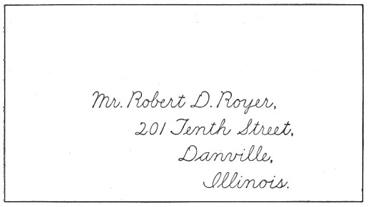

Title: Practical Grammar and Composition
Author: Thomas Wood
Release date: September 11, 2007 [eBook #22577]
Language: English
Other information and formats: www.gutenberg.org/ebooks/22577
Credits: Produced by Robert J. Hall
BY
D. APPLETON AND COMPANY
NEW YORK CHICAGO
This book was begun as a result of the author's experience in teaching some classes in English in the night preparatory department of the Carnegie Technical Schools of Pittsburg. The pupils in those classes were all adults, and needed only such a course as would enable them to express themselves in clear and correct English. English Grammar, with them, was not to be preliminary to the grammar of another language, and composition was not to be studied beyond the everyday needs of the practical man.
Great difficulty was experienced because of inability to secure a text that was suited to the needs of the class. A book was needed that would be simple, direct and dignified; that would cover grammar, and the essential principles of sentence structure, choice of words, and general composition; that would deal particularly with the sources of frequent error, and would omit the non-essential points; and, finally that would contain an abundance of exercises and practical work.
It is with these ends in view that this book has been prepared. The parts devoted to grammar have followed a plan varying widely from that of most grammars, and an effort has been made to secure a more sensible and effective treatment. The parts devoted to composition contain brief expositions of only the essential principles of ordinary composition. Especial stress has been laid upon letter-writing, since this is believed to be one of the most practical fields for actual composition work. Because such a style seemed best suited to the general scheme and purpose of the book, the method of treatment has at times been intentionally rather formal.
Page vi Abundant and varied exercises have been incorporated at frequent intervals throughout the text. So far as was practicable the exercises have been kept constructive in their nature, and upon critical points have been made very extensive.
The author claims little credit except for the plan of the book and for the labor that he has expended in developing the details of that plan and in devising the various exercises. In the statement of principles and in the working out of details great originality would have been as undesirable as it was impossible. Therefore, for these details the author has drawn from the great common stores of learning upon the subjects discussed. No doubt many traces of the books that he has used in study and in teaching may be found in this volume. He has, at times, consciously adapted matter from other texts; but, for the most part, such slight borrowings as may be discovered have been made wholly unconsciously. Among the books to which he is aware of heavy literary obligations are the following excellent texts: Lockwood and Emerson's Composition and Rhetoric, Sherwin Cody's Errors in Composition, A. H. Espenshade's Composition and Rhetoric, Edwin C. Woolley's Handbook of Composition, McLean, Blaisdell and Morrow's Steps in English, Huber Gray Buehler's Practical Exercises in English, and Carl C. Marshall's Business English.
To Messrs. Ginn and Company, publishers of Lockwood and Emerson's Composition and Rhetoric, and to the Goodyear-Marshall Publishing Company, publishers of Marshall's Business English, the author is indebted for their kind permission to make a rather free adaptation of certain parts of their texts.
Not a little gratitude does the author owe to those of his friends who have encouraged and aided him in the preparation of his manuscript, and to the careful criticisms and suggestions made by those persons who examined the completed manuscript in behalf of his publishers. Above all, a great debt of Page vii gratitude is owed to Mr. Grant Norris, Superintendent of Schools, Braddock, Pennsylvania, for the encouragement and painstaking aid he has given both in preparation of the manuscript and in reading the proof of the book.
T.W.
Braddock, Pennsylvania.
| CHAPTER | ||
| I.— | Sentences—Parts of Speech—Elements of Sentence—Phrases and Clauses | |
| II.— | Nouns | |
|
Common and Proper Inflection Defined Number The Formation of Plurals Compound Nouns Case The Formation of the Possessive Case Gender | ||
| III.— | Pronouns | |
|
Agreement with Antecedents Person Gender Rules Governing Gender Number Compound Antecedents Relative Interrogative Case Forms Rules Governing Use of Cases Compound Personal Compound Relative Adjective Miscellaneous Cautions | ||
| IV.— | Adjectives and Adverbs | |
|
Comparison Confusion of Adjectives and Adverbs Page x Improper Forms of Adjectives Errors in Comparison Singular and Plural Adjectives Placing of Adverbs and Adjectives Double Negatives The Articles | ||
| V.— | Verbs | |
|
Principal Parts Name-form Past Tense Past Participle Transitive and Intransitive Verbs Active and Passive Voice Mode Forms of the Subjunctive Use of Indicative and Subjunctive Agreement of Verb with its Subject Rules Governing Agreement of the Verb Miscellaneous Cautions Use of Shall and Will Use of Should and Would Use of May and Might, Can and Could Participles and Gerunds Misuses of Participles and Gerunds Infinitives Sequence of Infinitive Tenses Split Infinitives Agreement of Verb in Clauses Omission of Verb or Parts of Verb Model Conjugations To Be To See | ||
| VI.— | Connectives: Relative Pronouns, Relative Adverbs, Conjunctions, and Prepositions | |
|
Independent and Dependent Clauses Page xi Case and Number of Relative and Interrogative Pronouns Conjunctive or Relative Adverbs Conjunctions Placing of Correlatives Prepositions | ||
| Questions for the Review of Grammar | ||
| A General Exercise on Grammar | ||
| VII.— | Sentences | |
|
Loose Periodic Balanced Sentence Length The Essential Qualities of a Sentence Unity Coherence Emphasis Euphony | ||
| VIII.— | Capitalization and Punctuation | |
|
Rules for Capitalization Rules for Punctuation | ||
| IX.— | The Paragraph | |
|
Length Paragraphing of Speech Indentation of the Paragraph Essential Qualities of the Paragraph Unity Coherence Emphasis | ||
| X.— | Letter-Writing | |
|
Heading Inside Address Salutation Body of the Letter Page xii Close Miscellaneous Directions Outside Address Correctly Written Letters Notes in the Third Person | ||
| XI.— | The Whole Composition | |
|
Statement of Subject The Outline The Beginning Essential Qualities of the Whole Composition Unity Coherence The Ending Illustrative Examples Lincoln's Gettysburgx Speech Selection from Cranford List of Books for Reading | ||
| XII.— | Words—Spelling—Pronunciation | |
|
Words Good Use Offenses Against Good Use Solecisms Barbarisms Improprieties Idioms Choice of Words How to Improve One's Vocabulary Spelling Pronunciation | ||
| Glossary of Miscellaneous Errors | ||
Page 1 PRACTICAL GRAMMAR AND COMPOSITION
SENTENCES.—PARTS OF SPEECH.—ELEMENTS OF THE SENTENCE.—PHRASES AND CLAUSES
1. In thinking we arrange and associate ideas and objects together. Words are the symbols of ideas or objects. A Sentence is a group of words that expresses a single complete thought.
2. Sentences are of four kinds:
1. Declarative; a sentence that tells or declares something; as, That book is mine.
2. Imperative; a sentence that expresses a command; as, Bring me that book.
3. Interrogative; a sentence that asks a question; as, Is that book mine?
4. Exclamatory; a declarative, imperative, or interrogative sentence that expresses violent emotion, such as terror, surprise, or anger; as, You shall take that book! or, Can that book be mine?
3. Parts of Speech. Words have different uses in sentences. According to their uses, words are divided into classes called Parts of Speech. The parts of speech are as follows:
1. Noun; a word used as the name of something; as, man, box, Pittsburgh, Harry, silence, justice.
Page 2 2. Pronoun; a word used instead of a noun; as, I, he, it, that.
Nouns, pronouns, or groups of words that are used as nouns or pronouns, are called by the general term, Substantives.
3. Adjective; a word used to limit or qualify the meaning of a noun or a pronoun; as, good, five, tall, many.
The words a, an, and the are words used to modify nouns or pronouns. They are adjectives, but are usually called Articles.
4. Verb; a word used to state something about some person or thing; as, do, see, think, make.
5. Adverb; a word used to modify the meaning of a verb, an adjective, or another adverb; as, very, slowly, clearly, often.
6. Preposition; a word used to join a substantive, as a modifier, to some other preceding word, and to show the relation of the substantive to that word; as, by, in, between, beyond.
7. Conjunction; a word used to connect words, phrases, clauses, and sentences; as, and, but, if, although, or.
8. Interjection; a word used to express surprise or emotion; as, Oh! Alas! Hurrah! Bah!
Sometimes a word adds nothing to the meaning of the sentence, but helps to fill out its form or sound, and serves as a device to alter its natural order. Such a word is called an Expletive. In the following sentence there is an expletive: There are no such books in print.
4. A sentence is made up of distinct parts or elements. The essential or Principal Elements are the Subject and the Predicate.
The Subject of a sentence is the part which mentions that about which something is said. The Predicate is the part which states that which is said about the subject. Man walks. In this sentence, man is the subject, and walks is the predicate.
Page 3 The subject may be simple or modified; that is, may consist of the subject alone, or of the subject with its modifiers. The same is true of the predicate. Thus, in the sentence, Man walks, there is a simple subject and a simple predicate. In the sentence, The good man walks very rapidly, there is a modified subject and a modified predicate.
There may be, also, more than one subject connected with the same predicate; as, The man and the woman walk. This is called a Compound Subject. A Compound Predicate consists of more than one predicate used with the same subject; as, The man both walks and runs.
5. Besides the principal elements in a sentence, there are Subordinate Elements. These are the Attribute Complement, the Object Complement, the Adjective Modifier, and the Adverbial Modifier.
Some verbs, to complete their sense, need to be followed by some other word or group of words. These words which "complement," or complete the meanings of verbs are called Complements.
The Attribute Complement completes the meaning of the verb by stating some class, condition, or attribute of the subject; as, My friend is a student, I am well, The man is good Student, well, and good complete the meanings of their respective verbs, by stating some class, condition, or attribute of the subjects of the verbs.
The attribute complement usually follows the verb be or its forms, is, are, was, will be, etc. The attribute complement is usually a noun, pronoun, or adjective, although it may be a phrase or clause fulfilling the function of any of these parts of speech. It must not be confused with an adverb or an adverbial modifier. In the sentence, He is there, there is an adverb, not an attribute complement.
The verb used with an attribute complement, because such verb joins the subject to its attribute, is called the Copula ("to couple") or Copulative Verb.
Page 4 Some verbs require an object to complete their meaning. This object is called the Object Complement. In the sentence, I carry a book, the object, book, is required to complete the meaning of the transitive verb carry; so, also in the sentences, I hold the horse, and I touch a desk, the objects horse and desk are necessary to complete the meanings of their respective verbs. These verbs that require objects to complete their meaning are called Transitive Verbs.
Adjective and Adverbial Modifiers may consist simply of adjectives and adverbs, or of phrases and clauses used as adjectives or adverbs.
6. A Phrase is a group of words that is used as a single part of speech and that does not contain a subject and a predicate.
A Prepositional Phrase, always used as either an adjective or an adverbial modifier, consists of a preposition with its object and the modifiers of the object; as, He lives in Pittsburg, Mr. Smith of this place is the manager of the mill, The letter is in the nearest desk.
There are also Verb-phrases. A Verb-phrase is a phrase that serves as a verb; as, I am coming, He shall be told, He ought to have been told.
7. A Clause is a group of words containing a subject and a predicate; as, The man that I saw was tall. The clause, that I saw, contains both a subject, I, and a predicate, saw. This clause, since it merely states something of minor importance in the sentence, is called the Subordinate Clause. The Principal Clause, the one making the most important assertion, is, The man was tall. Clauses may be used as adjectives, as adverbs, and as nouns. A clause used as a noun is called a Substantive Clause. Examine the following examples:
Adjective Clause: The book that I want is a history.
Adverbial Clause: He came when he had finished with the
work.
Noun Clause as subject: That I am here is true.
Noun Clause as object: He said that I was mistaken.
Page 5 8. Sentences, as to their composition, are classified as follows:
Simple; a sentence consisting of a single statement; as, The man walks.
Complex; a sentence consisting of one principal clause and one or more subordinate clauses; as, The man that I saw is tall.
Compound; a sentence consisting of two or more clauses of equal importance connected by conjunctions expressed or understood; as, The man is tall and walks rapidly, and Watch the little things; they are important.
Exercise 1
In this and in all following exercises, be able to give the reason for everything you do and for every conclusion you reach. Only intelligent and reasoning work is worth while.
In the following list of sentences:
(1) Determine the part of speech of every word.
(2) Determine the unmodified subject and the unmodified predicate; and the modified subject and the modified predicate.
(3) Pick out every attribute complement and every object complement.
(4) Pick out every phrase and determine whether it is a prepositional phrase or a verb-phrase. If it is a prepositional phrase, determine whether it is used as an adjective or as an adverb.
(5) Determine the principal and the subordinate clauses. If they are subordinate clauses, determine whether they are used as nouns, adjectives, or adverbs.
(6) Classify every sentence as simple, complex, or compound.
Exercise 2
(1) Write a list of six examples of every part of speech.
(2) Write eight sentences, each containing an attribute complement. Use adjectives, nouns, and pronouns.
(3) Write eight sentences, each containing an object complement.
(4) Write five sentences, in each using some form of the verb to be, followed by an adverbial modifier.
NOUNS
9. A noun has been defined as a word used as the name of something. It may be the name of a person, a place, a thing, or of some abstract quality, such as, justice or truth.
10. Common and Proper Nouns. A Proper Noun is a noun that names some particular or special place, person, people, or thing. A proper noun should always begin with a capital letter; as, English, Rome, Jews, John. A Common Noun is a general or class name.
11. Inflection Defined. The variation in the forms of the different parts of speech to show grammatical relation, is called Inflection. Though there is some inflection in English, grammatical relation is usually shown by position rather than by inflection.
The noun is inflected to show number, case, and gender.
12. Number is that quality of a word which shows whether it refers to one or to more than one. Singular Number refers to one. Plural Number refers to more than one.
13. Plurals of singular nouns are formed according to the following rules:
1. Most nouns add s to the singular; as, boy, boys; stove, stoves.
2. Nouns ending in s, ch, sh, or x, add es to the singular; as, fox, foxes; wish, wishes; glass, glasses; coach, coaches.
3. Nouns ending in y preceded by a vowel (a, e, i, o, u) add s; as, valley, valleys, (soliloquy, soliloquies and colloquy, colloquies are exceptions). When y is preceded by a consonant (any letter other than a vowel), y is changed to i and es is added; as, army, armies; pony, ponies; sty, sties.
4. Most nouns ending in f or fe add s, as, scarf, scarfs; safe, safes. Page 8 A few change f or fe to v and add es; as, wife, wives; self, selves. The others are: beef, calf, elf, half, leaf, loaf, sheaf, shelf, staff, thief, wharf, wolf, life. (Wharf has also a plural, wharfs.)
5. Most nouns ending in o add s; as, cameo, cameos. A number of nouns ending in o preceded by a consonant add es; as, volcano, volcanoes. The most important of the latter class are: buffalo, cargo, calico, echo, embargo, flamingo, hero, motto, mulatto, negro, potato, tomato, tornado, torpedo, veto.
6. Letters, figures, characters, etc., add the apostrophe and s ('s); as, 6's, c's, t's, that's.
7. The following common words always form their plurals in an irregular way; as, man, men; ox, oxen; goose, geese; woman, women; foot, feet; mouse, mice; child, children; tooth, teeth; louse, lice.
Compound Nouns are those formed by the union of two words, either two nouns or a noun joined to some descriptive word or phrase.
8. The principal noun of a compound noun, whether it precedes or follows the descriptive part, is in most cases the noun that changes in forming the plural; as, mothers-in-law, knights-errant, mouse-traps. In a few compound words, both parts take a plural form; as, man-servant, men-servants; knight-templar, knights-templars.
9. Proper names and titles generally form plurals in the same way as do other nouns; as, Senators Webster and Clay, the three Henrys. Abbreviations of titles are little used in the plural, except Messrs. (Mr.), and Drs. (Dr.).
10. In forming the plurals of proper names where a title is used, either the title or the name may be put in the plural form. Sometimes both are made plural; as, Miss Brown, the Misses Brown, the Miss Browns, the two Mrs. Browns.
11. Some nouns are the same in both the singular and the plural; as, deer, series, means, gross, etc.
12. Some nouns used in two senses have two plural forms. The most important are the following:
| brother | brothers (by blood) | brethren (by association) |
| cloth | cloths (kinds of cloth) | clothes (garments) |
| die | dies (for coinage) | dice (for games) |
| fish | fishes (separately) | fish (collectively) Page 9 |
| genius | geniuses (men of genius) | genii (imaginary beings) |
| head | heads (of the body) | head (of cattle) |
| index | indexes (of books) | indices (in algebra) |
| pea | peas (separately) | pease (collectively) |
| penny | pennies (separately) | pence (collectively) |
| sail | sails (pieces of canvas) | sail (number of vessels) |
| shot | shots (number of discharges) | shot (number of balls) |
13. Nouns from foreign languages frequently retain in the plural the form that they have in the language from which they are taken; as, focus, foci; terminus, termini; alumnus, alumni; datum, data; stratum, strata; formula, formulœ; vortex, vortices; appendix, appendices; crisis, crises; oasis, oases; axis, axes; phenomenon, phenomena; automaton, automata; analysis, analyses; hypothesis, hypotheses; medium, media; vertebra, vertebrœ; ellipsis, ellipses; genus, genera; fungus, fungi; minimum, minima; thesis, theses.
Exercise 3
Write the plural, if any, of every singular noun in the following list; and the singular, if any, of every plural noun. Note those having no singular and those having no plural.
News, goods, thanks, scissors, proceeds, puppy, studio, survey, attorney, arch, belief, chief, charity, half, hero, negro, majority, Mary, vortex, memento, joy, lily, knight-templar, knight-errant, why, 4, x, son-in-law, Miss Smith, Mr. Anderson, country-man, hanger-on, major-general, oxen, geese, man-servant, brethren, strata, sheep, mathematics, pride, money, pea, head, piano, veto, knives, ratios, alumni, feet, wolves, president, sailor-boy, spoonful, rope-ladder, grandmother, attorney-general, cupful, go-between.
When in doubt respecting the form of any of the above, consult an unabridged dictionary.
14. Case. There are three cases in English: the Nominative, the Possessive, and the Objective.
The Nominative Case; the form used in address and as the subject of a verb.
The Objective Case; the form used as the object of a verb or a preposition. It is always the same in form as is the nominative.
Page 10 Since no error in grammar can arise in the use of the nominative or the objective cases of nouns, no further discussion of these cases is here needed.
The Possessive Case; the form used to show ownership. In the forming of this case we have inflection.
15. The following are the rules for the forming of the possessive case:
1. Most nouns form the possessive by adding the apostrophe and s ('s); as, man, man's; men, men's; pupil, pupil's; John, John's.
2. Plural nouns ending in s form the possessive by adding only the apostrophe ('); as, persons, persons'; writers, writers'. In stating possession in the plural, then one should say: Carpenters' tools sharpened here, Odd Fellows' wives are invited, etc.
3. Some singular nouns ending in an s sound form the possessive by adding the apostrophe alone; as, for appearance' sake, for goodness' sake. But usage inclines to the adding of the apostrophe and s ('s) even if the singular noun does end in an s sound; as, Charles's book, Frances's dress, the mistress's dress.
4. When a compound noun, or a group of words treated as one name, is used to denote possession, the sign of the possessive is added to the last word only; as, Charles and John's mother (the mother of both Charles and John), Brown and Smith's store (the store of the firm Brown & Smith).
5. Where the succession of possessives is unpleasant or confusing, the substitution of a prepositional phrase should be made; as, the house of the mother of Charles's partner, instead of, Charles's partner's mother's house.
6. The sign of the possessive should be used with the word immediately preceding the word naming the thing possessed; as, Father and mother's house, Smith, the lawyer's, office, The Senator from Utah's seat.
7. Generally, nouns representing inanimate objects should not be used in the possessive case. It is better to say the hands of the clock than the clock's hands.
Note.—One should say somebody else's, not somebody's else. The expression somebody else always occurs in the one form, and in such cases the sign of the possessive should be added to the last word. Similarly, say, no one else's, everybody else's, etc.
Page 11 Exercise 4
Write the possessives of the following:
Oxen, ox, brother-in-law, Miss Jones, goose, man, men, men-servants, man-servant, Maine, dogs, attorneys-at-law, Jackson & Jones, John the student, my friend John, coat, shoe, boy, boys, Mayor of Cleveland.
Exercise 5
Write sentences illustrating the use of the possessives you have formed for the first ten words under Exercise 4.
Exercise 6
Change the following expressions from the prepositional phrase form to the possessive:
Exercise 7
Correct such of the following expressions as need correction. If apostrophes are omitted, insert them in the proper places:
16. Gender. Gender in grammar is the quality of nouns or pronouns that denotes the sex of the person or thing represented. Those nouns or pronouns meaning males are in the Masculine Gender. Those meaning females are in the Feminine Gender. Those referring to things without sex are in the Neuter Gender.
In nouns gender is of little consequence. The only regular inflection is the addition of the syllable-ess to certain masculine nouns to denote the change to the feminine gender; as, author, authoress; poet, poetess. -Ix is also sometimes added for the same purpose; as, administrator, administratrix.
The feminine forms were formerly much used, but their use is now being discontinued, and the noun of masculine gender used to designate both sexes.
PRONOUNS
17. Pronoun and Antecedent. A Pronoun is a word used instead of a noun. The noun in whose stead it stands is called its Antecedent. John took Mary's book and gave it to his friend. In this sentence book is the antecedent of the pronoun it, and John is the antecedent of his.
18. Pronouns should agree with their antecedents in person, gender, and number.
19. Personal Pronouns are those that by their form indicate the speaker, the person spoken to, or the person or thing spoken about.
Pronouns of the First Person indicate the speaker; they are: I, me, my, mine, we, us, our, ours.
Pronouns of the Second Person indicate the person or thing spoken to; they are: you, your, yours. There are also the grave or solemn forms in the second person, which are now little used; these are: thou, thee, thy, thine, and ye.
Pronouns of the Third Person indicate the person or thing spoken of; they are: he, his, him, she, her, hers, they, their, theirs, them, it, its.
Few errors are made in the use of the proper person of the pronoun.
20. Gender of Pronouns. The following pronouns indicate sex or gender; Masculine: he, his, him. Feminine: she, her, hers. Neuter: it, its.
In order to secure agreement in gender it is necessary to know the gender of the noun, expressed or understood, to which the pronoun refers. Gender of nouns is important only so far as it concerns the use of pronouns. Study carefully the Page 14 following rules in regard to gender. These rules apply to the singular number only, since all plurals of whatever gender are referred to by they, their, theirs, etc.
The following rules govern the gender of pronouns:
Masculine; referred to by he, his, and him:
1. Nouns denoting males are always masculine.
2. Nouns denoting things remarkable for strength, power, sublimity, or size, when those things are regarded as if they were persons, are masculine; as, Winter, with his chilly army, destroyed them all.
3. Singular nouns denoting persons of both sexes are masculine; as, Every one brought his umbrella.
Feminine; referred to by she, her, or hers:
1. Nouns denoting females are always feminine.
2. Nouns denoting objects remarkable for beauty, gentleness, and peace, when spoken of as if they were persons, are feminine; as, Sleep healed him with her fostering care.
Neuter; referred to by it and its:
1. Nouns denoting objects without sex are neuter.
2. Nouns denoting objects whose sex is disregarded are neuter; as, It is a pretty child, The wolf is the most savage of its race.
3. Collective nouns referring to a group of individuals as a unit are neuter; as, The jury gives its verdict, The committee makes its report.
An animal named may be regarded as masculine; feminine, or neuter, according to the characteristics the writer fancies it to possess; as, The wolf seeks his prey, The mouse nibbled her way into the box, The bird seeks its nest.
Certain nouns may be applied to persons of either sex. They are then said to be of Common Gender. There are no pronouns of common gender; hence those nouns are referred to as follows:
1. By masculine pronouns when known to denote males; as, My class-mate (known to be Harry) is taking his examinations.
2. By feminine pronouns when known to denote females; as, Each of the pupils of the Girls High School brought her book.
Page 15 3. By masculine pronouns when there is nothing in the connection of the thought to show the sex of the object; as, Let every person bring his book.
21. Number of Pronouns. A more common source of error than disagreement in gender is disagreement in number. They, their, theirs, and them are plural, but are often improperly used when only singular pronouns should be used. The cause of the error is failure to realize the true antecedent.
If anybody makes that statement, they are misinformed. This sentence is wrong. Anybody refers to only one person; both any and body, the parts of the word, denote the singular. The sentence should read, If anybody makes that statement, he is misinformed. Similarly, Let everybody keep their peace, should read, Let everybody keep his peace.
22. Compound Antecedents. Two or more antecedents connected by or or nor are frequently referred to by the plural when the singular should be used. Neither John nor James brought their books, should read, Neither John nor James brought his books. When a pronoun has two or more singular antecedents connected by or or nor, the pronoun must be in the singular number; but if one of the antecedents is plural, the pronoun must, also, be in the plural; as, Neither the Mormon nor his wives denied their religion.
When a pronoun has two or more antecedents connected by and, the pronoun must be in the plural number; as, John and James brought their books.
Further treatment of number will be given under verbs.
Exercise 8
Fill in the blanks in the following sentences with the proper pronouns. See that there is agreement in person, gender, and number:
Exercise 9
By what gender of the pronouns would you refer to the following nouns?
Snake, death, care, mercy, fox, bear, walrus, child, baby, friend (uncertain sex), friend (known to be Mary), everybody, someone, artist, flower, moon, sun, sorrow, fate, student, foreigner, Harvard University, earth, Germany?
23. Relative Pronouns. Relative Pronouns are pronouns used to introduce adjective or noun clauses that are not interrogative. In the sentence, The man that I mentioned has come, the relative clause, that I mentioned, is an adjective clause modifying man. In the sentence, Whom she means, I do not know, the relative clause is, whom she means, and is a noun clause forming the object of the verb know.
Page 18 The relative pronouns are who (whose, whom), which, that and what. But and as are sometimes relative pronouns. There are, also, compound relative pronouns, which will be mentioned later.
24. Who (with its possessive and objective forms, whose and whom) should be used when the antecedent denotes persons. When the antecedent denotes things or animals, which should be used. That may be used with antecedents denoting persons, animals or things, and is the proper relative to use when the antecedent includes both persons and things. What, when used as a relative, seldom properly refers to persons. It always introduces a substantive clause, and is equivalent to that which; as, It is what (that which) he wants.
25. That is known as the Restrictive Relative, because it should be used whenever the relative clause limits the substantive, unless who or which is of more pleasing sound in the sentence. In the sentence, He is the man that did the act, the relative clause, that did the act, defines what is meant by man; without the relative clause the sentence clearly would be incomplete. Similarly, in the sentence, The book that I want is that red-backed history, the restrictive relative clause is, that I want, and limits the application of book.
26. Who and which are known as the Explanatory or Non-Restrictive Relatives, and should be used ordinarily only to introduce relative clauses which add some new thought to the author's principal thought. Spanish, which is the least complex language, is the easiest to learn. In this sentence the principal thought is, Spanish is the easiest language to learn. The relative clause, which is the least complex language, is a thought, which, though not fully so important as the principal thought, is more nearly coördinate than subordinate in its value. It adds an additional thought of the speaker explaining the character of the Spanish language. When who and which are thus used as explanatory relatives, we see Page 19 that the relative clause may be omitted without making the sentence incomplete.
Compare the following sentences:
Explanatory relative clause: That book, which is about history, has a red cover.
Restrictive relative clause: The book that is about history has a red cover.
Explanatory relative clause: Lincoln, who was one of the world's greatest men, was killed by Booth.
Restrictive relative clause: The Lincoln that was killed by Booth was one of the world's greatest men.
Note.—See §111, for rule as to the punctuation of relative clauses.
27. Interrogative Pronouns. An Interrogative Pronoun is a pronoun used to ask a question. The interrogative pronouns are, who (whose, whom), which, and what. In respect to antecedents, who should be used only in reference to persons; which and what may be used with any antecedent, persons, animals, or things.
Exercise 10
Choose the proper relative or interrogative pronoun to be inserted in each of the following sentences. Insert commas where they are needed. (See §111):
28. Case Forms of Pronouns. Some personal, relative, and interrogative pronouns have distinctive forms for the different cases, and the failure to use the proper case forms in the sentence is one of the most frequent sources of error. The case to be used is to be determined by the use which the pronoun, not its antecedent, has in the sentence. In the sentence, I name him, note that him is the object of the verb name. In the sentence, Whom do you seek, although coming at the Page 21 first of the sentence, whom is grammatically the object of the verb seek. In the use of pronouns comes the most important need for a knowledge of when to use the different cases.
Note the following different case forms of pronouns:
Nominative: I, we, you, thou, ye, he, she, they, it, who.
Objective: me, us, you, thee, ye, him, her, it, them, whom.
Possessive: my, mine, our, ours, thy, thine, your, yours, his, her, hers, its, their, theirs, whose.
It will be noted that, while some forms are the same in both the nominative and objective cases, I, we, he, she, they, thou, and who are only proper where the nominative case should be used. Me, us, him, them, thee, whom, and her, except when her is possessive, are only proper when the objective case is demanded. These forms must be remembered. It is only with these pronouns that mistakes are made in the use of the nominative and objective cases.
29. The following outline explains the use of the different case forms of the pronouns. The outline should be mastered.
The Nominative Case should be used:
1. When the noun or pronoun is the subject of a finite verb; that is, a verb other than an infinitive. See 3 under Objective Case.
2. When it is an attribute complement. An attribute complement, as explained in Chapter I, is a word used in the predicate explaining or stating something about the subject. Examples: It is I, The man was he, The people were they of whom we spoke.
3. When it is used without relation to any other part of speech, as in direct address or exclamation.
The Objective Case should be used:
1. When the noun or pronoun is the object of a verb; as, He named me, She deceived them, They watch us.
2. When it is the object of a preposition, expressed or understood: as, He spoke of me, For whom do you take me, He told (to) me a story.
3. When it is the subject of an infinitive; as, I told him to go, I desire her to hope. The infinitives are the parts of the verb preceded by to; as, to go, to see, to be, to have been seen, etc. The sign Page 22 of the infinitive, to, is not always expressed. The objective case is, nevertheless, used; as, Let him (to) go, Have her (to be) told about it.
4. When it is an attribute complement of an expressed subject of the infinitive to be; as, They believed her to be me, He denied it to have been him. (See Note 2 below.)
The Possessive Case should be used:
When the word is used as a possessive modifier; as, They spoke of her being present, The book is his (book), It is their fault.
Note 1.—When a substantive is placed by the side of another substantive and is used to explain it, it is said to be in Apposition with that other substantive and takes the case of that word; as, It was given to John Smith, him whom you see there.
Note 2.—The attribute complement should always have the case of that subject of the verb which is expressed in the sentence. Thus, in the sentence, I could not wish John to be him, him is properly in the objective case, since there is an expressed subject of the infinitive, John, which is in the objective case. But in the sentence, I should hate to be he, he is properly in the nominative case, since the only subject that is expressed in the sentence is I, in the nominative case.
Note 3.—Where the relative pronoun who (whom) is the subject of a clause that itself is the object clause of a verb or a preposition, it is always in the nominative case. Thus the following sentences are both correct: I delivered it to who owned it, Bring home whoever will come with you.
Exercise 11
Write sentences illustrating the correct use of each of the following pronouns:
I, whom, who, we, me, us, they, whose, theirs, them, she, him, he, its, mine, our, thee, thou.
Exercise 12
In the following sentences choose the proper form from the words in italics:
30. The Compound Personal Pronouns are formed by adding self or selves to certain of the objective and possessive personal pronouns; as, herself, myself, itself, themselves, etc. They are used to add emphasis to an expression; as, I, myself, did it, He, himself, said so. They are also used reflexively after verbs and prepositions; as, He mentioned himself, He did it for himself.
The compound personal pronouns should generally be confined to their emphatic and reflexive use. Do not say, Myself and John will come, but, John and I will come. Do not say, They invited John and myself, but, They invited John and me.
The compound personal pronouns have no possessive forms; but for the sake of emphasis own with the ordinary possessive form is used; as, I have my own book, Bring your own work, He has a home of his own.
31. There are no such forms as hisself, your'n, his'n, her'n, theirself, theirselves, their'n. In place of these use simply his, her, their, or your.
Exercise 13
Write sentences illustrating the correct use of the following simple and compound personal pronouns:
Myself, me, I, them, themselves, him, himself, her, herself, itself, our, ourselves.
Exercise 14
Choose the correct form in the following sentences. Punctuate properly. (See §108):
Exercise 15
Fill the blanks in the following sentences with the proper emphatic or reflexive forms. Punctuate properly. (See §108):
32. The Compound Relative Pronouns are formed by adding ever, so, or soever to the relative pronouns, who, which, and what; as, whoever, whatever, whomever, whosoever, whoso, whosoever, etc. It will be noted that whoever, whosoever, and whoso have objective forms, whomever, whomsoever, and whomso; and possessive forms, whosoever, whosesoever, and Page 28 whoseso. These forms must be used whenever the objective or possessive case is demanded. Thus, one should say, I will give it to whomever I find there. (See §29 and Note 3.)
Exercise 16
Fill the following blanks with the proper forms of the compound relatives:
33. There are certain words, called Adjective Pronouns, which are regarded as pronouns, because, although they are properly adjective in their meaning, the nouns which they modify are never expressed; as, One (there is a possessive form, Page 29 one's, and a plural form, ones), none, this, that, these, those, other, former, some, few, many, etc.
34. Some miscellaneous cautions in the use of pronouns:
1. The pronoun I should always be capitalized, and should, when used as part of a compound subject, be placed second; as, James and I were present, not I and James were present.
2. Do not use the common and grave forms of the personal pronouns in the same sentence; as, Thou wilt do this whether you wish or not.
3. Avoid the use of personal pronouns where they are unnecessary; as, John, he did it, or Mary, she said. This is a frequent error in speech.
4. Let the antecedent of each pronoun be clearly apparent. Note the uncertainty in the following sentence; He sent a box of cheese, and it was made of wood. The antecedent of it is not clear. Again, A man told his son to take his coat home. The antecedent of his is very uncertain. Such errors are frequent.
In relative clauses this error may sometimes be avoided by placing the relative clause as near as possible to the noun it limits. Note the following sentence: A cat was found in the yard which wore a blue ribbon. The grammatical inference would be that the yard wore the blue ribbon. The sentence might be changed to, A cat, which wore a blue ribbon, was found in the yard.
5. Relative clauses referring to the same thing require the same relative pronoun to introduce them; as, The book that we found and the book that he lost are the same.
6. Use but that when but is a conjunction and that introduces a noun clause; as, There is no doubt but that he will go. Use but what when but is a preposition in the sense of except; as, He has no money but (except) what I gave him.
7. Them is a pronoun and should never be used as an adjective. Those is the adjective which should be used in its place; as, Those people, not, Them people.
8. Avoid using you and they indefinitely; as, You seldom hear of such things, They make chairs there. Instead, say, One seldom hears of such things, Chairs are made there.
9. Which should not be used with a clause or phrase as its antecedent. Both the following sentences are wrong: He sent me to see Page 30 John, which I did. Their whispering became very loud, which annoyed the preacher.
10. Never use an apostrophe with the possessive pronouns, its, yours, theirs, ours and hers.
Exercise 17
Correct the following sentences so that they do not violate the cautions above stated:
ADJECTIVES AND ADVERBS
35. An Adjective is a word used to modify a noun or a pronoun. An Adverb is a word used to modify a verb, an adjective, or another adverb. Adjectives and adverbs are very closely related in both their forms and their use.
36. Comparison. The variation of adjectives and adverbs to indicate the degree of modification they express is called Comparison. There are three degrees of comparison.
The Positive Degree indicates the mere possession of a quality; as, true, good, sweet, fast, lovely.
The Comparative Degree indicates a stronger degree of the quality than the positive; as, truer, sweeter, better, faster, lovelier.
The Superlative Degree indicates the highest degree of quality; as, truest, sweetest, best, fastest, loveliest.
Where the adjectives and adverbs are compared by inflection they are said to be compared regularly. In regular comparison the comparative is formed by adding er, and the superlative by adding est. If the word ends in y, the y is changed to i before adding the ending; as, pretty, prettier, prettiest.
Where the adjectives and adverbs have two or more syllables, most of them are compared by the use of the adverbs more and most, or, if the comparison be a descending one, by the use of less and least; as, beautiful, more beautiful, most beautiful, and less beautiful, least beautiful.
37. Some adjectives and adverbs are compared by changing to entirely different words in the comparative and superlative. Note the following: Page 33
| POSITIVE | COMPARATIVE | SUPERLATIVE |
| bad, ill, evil, badly | worse | worst |
| far | farther, further | farthest, furthest |
| forth | further | furthest |
| fore | former | foremost, first |
| good, well | better | best |
| hind | hinder | hindmost |
| late | later, latter | latest, last |
| little | less | least |
| much, many | more | most |
| old | older, elder | oldest, eldest |
Note.—Badly and forth may be used only as adverbs. Well is usually an adverb; as, He talks well, but may be used as an adjective; as, He seems well.
38. Confusion of Adjectives and Adverbs. An adjective is often used where an adverb is required, and vice versa. The sentence, She talks foolish, is wrong, because here the word to be modified is talks, and since talks is a verb, the adverb foolishly should be used. The sentence, She looks charmingly, means, as it stands, that her manner of looking at a thing is charming. What is intended to be said is that she appears as if she was a charming woman. To convey that meaning, the adjective, charming, should have been used, and the sentence should read, She looks charming. Wherever the word modifies a verb or an adjective or another adverb, an adverb should be used, and wherever the word, whatever its location in the sentence, modifies a noun or pronoun, an adjective should be used.
39. The adjective and the adverb are sometimes alike in form. Thus, both the following sentences are correct: He works hard (adverb), and His work is hard (adjective). But, usually, where the adjective and the adverb correspond at all, the adverb has the additional ending ly; as, The track is smooth, (adjective), and The train runs smoothly, (adverb).
Page 34 Exercise 18
In the following sentences choose from the italicized words the proper word to be used:
Exercise 19
The adjectives and adverbs in the following sentences are correctly used. In every case show what they modify:
Page 36 Exercise 20
Write sentences containing the following words correctly used:
Thoughtful, thoughtfully, masterful, masterfully, hard, hardly, cool, coolly, rapid, rapidly, ungainly, careful, carefully, eager, eagerly, sweet, sweetly, gracious, graciously.
40. Improper Forms of Adjectives. The wrong forms in the following list of adjectives are frequently used in place of the right forms:
| RIGHT | WRONG |
| everywhere | everywheres |
| not nearly | nowhere near |
| not at all | not much or not muchly |
| ill | illy |
| first | firstly |
| thus | thusly |
| much | muchly |
| unknown | unbeknown |
| complexioned | complected |
Exercise 21
Correct the errors in the following sentences:
41. Errors in comparison are frequently made. Observe carefully the following rules:
Page 37 1. The superlative should not be used in comparing only two things. One should say, He is the larger of the two, not He is the largest of the two. But, He is the largest of the three, is right.
2. A comparison should not be attempted by adjectives that express absolute quality—adjectives that cannot be compared; as, round, perfect, equally, universal. A thing may be round or perfect, but it cannot be more round or most round, more perfect or most perfect.
3. When two objects are used in the comparative, one must not be included in the other; but, when two objects are used in the superlative, one must be included in the other. It is wrong to say, The discovery of America was more important than any geographical discovery, for that is saying that the discovery of America was more important than itself—an absurdity. But it would be right to say, The discovery of America was more important than any other geographical discovery. One should not say, He is the most honest of his fellow-workmen, for he is not one of his fellow-workmen. One should say, He is more honest than any of his fellow-workmen, or, He is the most honest of all the workmen. To say, This machine is better than any machine, is incorrect, but to say, This machine is better than any other machine, is correct. To say, This machine is the best of any machine (or any other machine), is wrong, because all machines are meant, not one machine or some machines. To say, This machine is the best of machines (or the best of all machines), is correct.
Note the following rules in regard to the use of other in comparisons:
a. After comparatives followed by than the words any and all should be followed by other.
b. After superlatives followed by of, any and other should not be used.
4. Avoid mixed comparisons. John is as good, if not better than she. If the clause, if not better, were left out, this Page 38 sentence would read, John is as good than she. It could be corrected to read, John is as good as, if not better than she. Similarly, it is wrong to say, He is one of the greatest, if not the greatest, man in history.
Exercise 22
Choose the correct word from those italicized:
Exercise 23
Correct any of the following sentences that may be wrong. Give a valid reason for each correction:
42. Singular and Plural Adjectives. Some adjectives can be used only with singular nouns and some only with plural nouns. Such adjectives as one, each, every, etc., can be used only with singular nouns. Such adjectives as several, various, many, sundry, two, etc., can be used only with plural nouns. In many cases, the noun which the adjective modifies is omitted, and the adjective thus acquires the force of a pronoun; as, Few are seen, Several have come.
Page 40 The adjective pronouns this and that have plural forms, these and those. The plurals must be used with plural nouns. To say those kind is then incorrect. It should be those kinds. Those sort of men should be that sort of men or those sorts of men.
43. Either and neither are used to designate one of two objects only. If more than two are referred to, use any, none, any one, no one. Note the following correct sentences:
Neither John nor Henry may go.
Any one of the three boys may go.
44. Each other should be used when referring to two; one another when referring to more than two. Note the following correct sentences:
The two brothers love each other.
The four brothers love one another.
Exercise 24
Correct such of the following sentences as are incorrect. Be able to give reasons:
45. Placing of Adverbs and Adjectives. In the placing of adjective elements and adverbial elements in the sentence, one should so arrange them as to leave no doubt as to what they are intended to modify.
| Wrong: A man was riding on a horse wearing gray trousers. |
| Right: A man wearing gray trousers was riding on a horse. |
The adverb only requires especial attention. Generally only should come before the word it is intended to modify. Compare the following correct sentences, and note the differences in meaning.
Only he found the book.
He only found the book.
He found only the book.
He found the book only.
The placing of the words, almost, ever, hardly, scarcely, merely, and quite, also requires care and thought.
Exercise 25
Correct the errors in the location of adjectives and adverbs in the following sentences:
46. Double Negatives. I am here is called an affirmative statement. A denial of that, I am not here, is called a negative statement. The words, not, neither, never, none, nothing, etc., are all negative words; that is, they serve to make denials of statements.
Two negatives should never be used in the same sentence, since the effect is then to deny the negative you wish to assert, and an affirmative is made where a negative is intended. We haven't no books, means that we have some books. The proper negative form would be, We have no books, or We haven't any books. The mistake occurs usually where such forms as isn't, don't, haven't, etc., are used. Examine the following sentences:
| Wrong: It isn't no use. |
| Wrong: There don't none of them believe it. |
| Wrong: We didn't do nothing. |
Hardly, scarcely, only, and but (in the sense of only) are often incorrectly used with a negative. Compare the following right and wrong forms:
| Wrong: It was so dark that we couldn't hardly see. |
| Right: It was so dark that we could hardly see. |
| Wrong: There wasn't only one person present. |
| Right: There was only one person present. |
Page 43 Exercise 26
Correct the following sentences:
47. The Articles. A, an, and the, are called Articles. A and an are called the Indefinite Articles, because they are used to limit the noun to any one thing of a class; as, a book, a chair. But a or an is not used to denote the whole of that Page 44 class; as, Silence is golden, or, He was elected to the office of President.
The is called the Definite Article because it picks out some one definite individual from a class.
In the sentence, On the street are a brick and a stone house, the article is repeated before each adjective; the effect of this repetition is to make the sentence mean two houses. But, in the sentence, On the street is a brick and stone house, since the article is used only before the first of the two adjectives, the sentence means that there is only one house and that it is constructed of brick and stone.
Where two nouns refer to the same object, the article need appear only before the first of the two; as, God, the author and creator of the universe. But where the nouns refer to two different objects, regarded as distinct from each other, the article should appear before each; as, He bought a horse and a cow.
A is used before all words except those beginning with a vowel sound. Before those beginning with a vowel sound an is used. If, in a succession of words, one of these forms could not be used before all of the words, then the article must be repeated before each. Thus, one should say, An ax, a saw, and an adze (not An ax, saw and adze), made up his outfit. Generally it is better to repeat the article in each case, whether or not it be the same.
Do not say, kind of a house. Since a house is singular, it can have but one kind. Say instead, a kind of house, a sort of man, etc.
Exercise 27
Correct the following where you think correction is needed:
48. No adverb necessary to the sense should be omitted from the sentence. Such improper omission is frequently made when very or too are used with past participles that are not also recognized as adjectives; as,
Poor: I am very insulted. He was too wrapped in thought to notice the mistake.
Right: I am very much insulted. He was too much wrapped in thought to notice the mistake.
Exercise 28
Write sentences containing the following adjectives and adverbs. Be sure that they are used correctly.
Both, each, every, only, evidently, hard, latest, awful, terribly, charming, charmingly, lovely, brave, perfect, straight, extreme, very, either, neither, larger, oldest, one, none, hardly, scarcely, only, but, finally, almost, ever, never, new, newly, very.
VERBS
49. A Verb has already been defined as a word stating something about the subject. Verbs are inflected or changed to indicate the time of the action as past, present, or future; as, I talk, I talked, I shall talk, etc. Verbs also vary to indicate completed or incompleted action; as, I have talked, I shall have talked, etc. To these variations, which indicate the time of the action, the name Tense is given.
The full verbal statement may consist of several words; as, He may have gone home. Here the verb is may have gone. The last word of such a verb phrase is called the Principal Verb, and the other words the Auxiliaries. In the sentence above, go (gone) is the principal verb, and may and have are the auxiliaries.
50. In constructing the full form of the verb or verb phrase there are three distinct parts from which all other forms are made. These are called the Principal Parts.
The First Principal Part, since it is the part by which the verb is referred to as a word, may be called the Name-Form. The following are name-forms: do, see, come, walk, pass.
The Second Principal Part is called the Past Tense. It is formed by adding ed to the name-form; as, walked, pushed, passed. These verbs that add ed are called Regular Verbs. The verb form is often entirely changed; as, done (do), saw (see), came (come). These verbs are called Irregular Verbs.
The Third Principal Part is called the Past Participle. It is used mainly in expressing completed action or in the passive voice. In regular verbs the past participle is the same in Page 47 form as the past tense. In irregular verbs it may differ entirely from both the name-form and the past tense, or it may resemble one or both of them. Examples: done (do, did), seen (see, saw), come (come, came), set (set, set).
51. The name-form, when unaccompanied by auxiliaries, is used with all subjects, except those in the third person singular, to assert action in the present time or present tense; as, I go, We come, You see, Horses run.
The name-form is also used with various auxiliaries (may, might, can, must, will, should, shall, etc.) to assert futurity, determination, possibility, possession, etc. Examples: I may go, We shall come, You can see, Horses should run.
By preceding it with the word to, the name-form is used to form what is called the Present Infinitive; as, I wish to go, I hope to see.
What may be called the s-form of the verb, or the singular form, is usually constructed by adding s or es to the name-form. The s-form is used with singular subjects in the third person; as, He goes, She comes, It runs, The dog trots.
The s-form is found in the third personal singular of the present tense. In other tenses, if present at all, the s-form is in the auxiliary, where the present tense of the auxiliary is used to form some other tense of the principal verb. Examples: He has (present tense), He has gone (perfect tense), He has been seen.
Some verbs have no s-form; as, will, shall, may. The verb be has two irregular s-forms: Is, in the present tense, and was in the past tense. The s-form of have is has.
52. The past tense always stands alone in the predicate; i. e., it should never be used with any auxiliaries. To use it so, however, is one of the most frequent errors in grammar. The following are past tense forms: went, saw, wore, tore. To say, therefore, I have saw, I have went, It was tore, They were wore, would be grossly incorrect.
53. The third principal part, the past participle, on the Page 48 other hand, can never be used as a predicate verb without an auxiliary. The following are distinctly past participle forms: done, seen, sung, etc. One could not then properly say, I seen, I done, I sung, etc.
The distinction as to use with and without auxiliaries applies, of course, only to irregular verbs. In regular verbs, the past tense and past participle are always the same, and so no error could result from their confusion.
The past participle is used to form the Perfect Infinitives; as, to have gone, to have seen, to have been seen.
54. The following is a list of the principal parts of the most important irregular verbs. The list should be mastered thoroughly. The student should bear in mind always that, the past tense form should never be used with an auxiliary, and that the past participle form should never be used as a predicate verb without an auxiliary.
In some instances verbs have been included in the list below which are always regular in their forms, or which have both regular and irregular forms. These are verbs for whose principal parts incorrect forms are often used.
PRINCIPAL PARTS OF VERBS
| Name-form | Past Tense | Past Participle |
| awake | awoke or awaked | awaked |
| begin | began | begun |
| beseech | besought | besought |
| bid (to order or to greet) | bade | bidden or bid |
| bid (at auction) | bid | bidden or bid |
| blow | blew | blown |
| break | broke | broken |
| burst | burst | burst |
| choose | chose | chosen |
| chide | chid | chidden or chid |
| come | came | come |
| deal | dealt | dealt |
| dive | dived | dived |
| Name-form | Past Tense | Past Participle Page 49 |
| do | did | done |
| draw | drew | drawn |
| drink | drank | drunk or drank |
| drive | drove | driven |
| eat | ate | eaten |
| fall | fell | fallen |
| flee | fled | fled |
| fly | flew | flown |
| forsake | forsook | forsaken |
| forget | forgot | forgot or forgotten |
| freeze | froze | frozen |
| get | got | got (gotten) |
| give | gave | given |
| go | went | gone |
| hang (clothes) | hung | hung |
| hang (a man) | hanged | hanged |
| know | knew | known |
| lay | laid | laid |
| lie | lay | lain |
| mean | meant | meant |
| plead | pleaded | pleaded |
| prove | proved | proved |
| ride | rode | ridden |
| raise | raised | raised |
| rise | rose | risen |
| run | ran | run |
| see | saw | seen |
| seek | sought | sought |
| set | set | set |
| shake | shook | shaken |
| shed | shed | shed |
| shoe | shod | shod |
| sing | sang | sung |
| sit | sat | sat |
| slay | slew | slain |
| sink | sank | sunk |
| speak | spoke | spoken |
| Name-form | Past Tense | Past Participle Page 50 |
| steal | stole | stolen |
| swim | swam | swum |
| take | took | taken |
| teach | taught | taught |
| tear | tore | torn |
| throw | threw | thrown |
| tread | trod | trod or trodden |
| wake | woke or waked | woke or waked |
| wear | wore | worn |
| weave | wove | woven |
| write | wrote | written |
Notes.—Ought has no past participle. It may then never be used with an auxiliary. I had ought to go is incorrect. The idea would be amply expressed by I ought to go.
Model conjugations of the verbs to be and to see in all forms are given under §77 at the end of this chapter.
Exercise 29
In the following sentences change the italicized verb so as to use the past tense, and then so as to use the past participle:
| Example: | (Original sentence), | The guests begin to go home. |
| (Changed to past tense), | The guests began to go home. | |
| (Changed to past participle), | The guests have begun to go home. |
Exercise 30
Write original sentences containing the following verbs, correctly used:
Begun, blew, bidden, bad, chose, broke, come, dealt, dived, drew, driven, flew, forsook, froze, given, give, gave, went, hanged, knew, rode, pleaded, ran, seen, saw, shook, shod, sung, slew, spoke, swum, taken, torn, wore, threw, woven, wrote, written.
Exercise 31
Insert the proper form of the verb in the following sentences. The verb to be used is in black-faced type at the beginning of each group:
Page 55 Exercise 32
Correct the errors in the use of verbs in the following sentences:
Exercise 33
Write sentences in which the following verb forms are properly used:
begun, blew, broke, chose, come, came, done, did, drew, drunk, drove, ate, flew, forsook, froze, forgot, gave, give, went, hang, hung, knew, rode, run, shook, sung, slew, spoke, stole, took, tore, threw, wore, wrote.
55. Transitive and Intransitive Verbs. A Transitive Verb is one in which the action of the verb goes over to a receiver; Page 56 as, He killed the horse, I keep my word. In both these sentences, the verb serves to transfer the action from the subject to the object or receiver of the action. The verbs in these sentences, and all similar verbs, are transitive verbs. All others, in which the action does not go to a receiver, are called Intransitive Verbs.
56. Active and Passive Voice. The Active Voice represents the subject as the doer of the action; as, I tell, I see, He makes chairs. The Passive Voice represents the subject as the receiver of the action; as, I am told, I am seen, I have been seen, Chairs are made by me. Since only transitive verbs can have a receiver of the action, only transitive verbs can have both active and passive voice.
57. There are a few special verbs in which the failure to distinguish between the transitive and the intransitive verbs leads to frequent error. The most important of these verbs are the following: sit, set, awake, wake, lie, lay, rise, arise, raise, fell, and fall. Note again the principal parts of these verbs:
| wake (to rouse another) | woke, waked | woke, waked |
| awake (to cease to sleep) | awoke, awaked | awaked |
| fell (to strike down) | felled | felled |
| fall (to topple over) | fell | fallen |
| lay (to place) | laid | laid |
| lie (to recline) | lay | lain |
| raise (to cause to ascend) | raised | raised |
| (a)rise (to ascend) | (a)rose | (a)risen |
| set (to place) | set | set |
| sit (to rest) | sat | sat |
The first of each pair of the above verbs is transitive, and the second is intransitive. Only the first, then, of each pair can have an object or can be used in the passive voice.
Page 57 NOTES.—The following exceptions in the use of sit and set are, by reason of usage, regarded as correct: The sun sets, The moon sets, They sat themselves down to rest, and He set out for Chicago.
Lie, meaning to deceive, has for its principal parts, lie, lied, lied. Lie, however, with this meaning is seldom confused with lie meaning to recline. The present participle of lie is lying.
Compare the following sentences, and note the reasons why the second form in each case is the correct form.
| WRONG | RIGHT |
| Awake me early to-morrow. | Wake me early to-morrow. |
| He was awoke by the noise. | He was woke (waked) by the noise. |
| He has fallen a tree. | He has felled a tree. |
| I have laid down. | I have lain down. |
| I lay the book down (past tense). | I laid the book down. |
| The river has raised. | The river has risen. |
| He raised in bed. | He rose in bed. |
| I set there. | I sat there. |
| I sat the chair there. | I set the chair there. |
Exercise 34
Form an original sentence showing the proper use of each of the following words:
Lie, lay (to place), sit, set, sat, sitting, setting, lie (to recline), lie (to deceive), lying, laying, rise, arose, raised, raise, fell (to topple over), fallen, felled, awake, wake, awaked, woke, falling, felling, rising, raising, waking, awaking, lain, laid, lied.
Exercise 35
Correct such of the following sentences as are wrong:
Exercise 36
In the following sentences fill the blanks with the proper forms of the verbs indicated:
SIT AND SET
LAY AND LIE
RAISE AND RISE (ARISE)
FELL AND FALL
AWAKE AND WAKE
58. Mode. Mode is that form of the verb which indicates the manner in which the action or state is to be regarded. There are several modes in English, but only between the indicative and subjunctive modes is the distinction important. Generally speaking, the Indicative Mode is used when the statement is regarded as a fact or as truth, and the Subjunctive Mode is used when the statement expresses uncertainty or implies some degree of doubt.
59. Forms of the Subjunctive. The places in which the subjunctive differs from the indicative are in the present and past tenses of the verb be, and in the present tense of active verbs. The following outline will show the difference between the indicative and the subjunctive of be:
| INDICATIVE PRESENT OF BE | INDICATIVE PAST OF BE | ||
| I am | we are | I was | we were |
| thou art | you are | thou wert or wast | you were |
| he (she, it) is | they are | he (she, it) was | they were |
| SUBJUNCTIVE PRESENT OF BE | SUBJUNCTIVE PAST OF BE | ||
| If I be | If we be | If I were | If we were |
| If thou be | If you be | If thou were | If you were |
| If he (she, it) be | If they be | If he (she, it) were | If they were |
Page 62 If is used only as an example of the conjunctions on which the subjunctive depends. Other conjunctions may be used, or the verb may precede the subject.
Note.—It will be noticed that thou art and thou wast, etc., have been used in the second person singular. Strictly speaking, these are the proper forms to be used here, even though you are and you were, etc., are customarily used in addressing a single person.
In the subjunctive of be, it will be noted that the form be is used throughout the present tense; and the form were throughout the past tense.
In other verbs the subjunctive, instead of having the s-form in the third person singular of the present tense, has the name-form, or the same form as all the other forms of the present tense; as, indicative, he runs, she sees, it seems, he has; subjunctive, if he run, though she see, lest it seem, if he have.
Note.—An examination of the model conjugations under §77 will give a further understanding of the forms of the subjunctive.
60. Use of Indicative and Subjunctive. The indicative mode would be properly used in the following sentence, when the statement is regarded as true: If that evidence is true, then he is a criminal. Similarly: If he is rich, he ought to be charitable. Most directly declarative statements are put in the indicative mode.
But when the sense of the statement shows uncertainty in the speaker's mind, or shows that the condition stated is regarded as contrary to fact or as untrue, the subjunctive is used. Note the two sentences following, in which the conditions are properly in the subjunctive: If those statements be true, then all statements are true, Were I rich, I might be charitable.
The subjunctive is usually preceded by the conjunctions, if, though, lest, although, or the verb precedes the subject. But it must be borne in mind that these do not always indicate the subjunctive mode. The use of the subjunctive depends on Page 63 whether the condition is regarded as a fact or as contrary to fact, certain or uncertain.
It should be added that the subjunctive is perhaps going out of use; some of the best writers no longer use its forms. This passing of the subjunctive is to be regretted and to be discouraged, since its forms give opportunity for many fine shades of meaning.
Exercise 37
Write five sentences which illustrate the correct use of be in the third person singular without an auxiliary, and five which illustrate the correct use of were in the third person singular.
Exercise 38
Choose the preferable form in the following sentences, and be able to give a definite reason for your choice. In some of the sentences either form may be used correctly:
61. Agreement of Verb with its Subject. The verb should agree with its subject in person and number. The most frequent error is the failure of the verb to agree in number with its subject. Singular subjects are used with plural verbs, and plural subjects with singular verbs. These errors arise chiefly from a misapprehension of the true number of the subject.
The s-form of the verb is the only distinct singular form, and occurs only in the third person, singular, present indicative; as, He runs, she goes, it moves. Is, was, and has are the singular forms of the auxiliaries. Am is used only with a subject in the first person, and is not a source of confusion. The other auxiliaries have no singular forms.
Failure of the verb and its subject to agree in person seldom occurs, and so can cause little confusion.
Examine the following correct forms of agreement of verb and subject:
A barrel of clothes was shipped (not were shipped).
A man and a woman have been here (not has been here).
Boxes are scarce (not is scarce).
When were the brothers here (not when was)?
Page 65 62. Agreement of Subject and Verb in Number. The general rule to be borne in mind in regard to number, is that it is the meaning and not the form of the subject that determines whether to use the singular or the plural form of the verb. This rule also applies to the use of singular or plural pronouns.
Many nouns plural in form are singular in meaning; as, politics, measles, news, etc.
Many, also, are treated as plurals, though in meaning they are singular; as, forceps, tongs, trousers.
Some nouns, singular in form, are, according to the sense in which, they are used, either singular or plural in meaning; as, committee, family, pair, jury, assembly, means. The following sentences are all correct: The assembly has closed its meeting, The assembly are all total abstainers, The whole family is a famous one, The whole family are sick.
In the use of the adjective pronouns, some, each, etc., the noun is often omitted. When this is done, error is often made by using the wrong number of the verb. Each, either, neither, this, that, and one, when used alone as subjects, require singular verbs. All, those, these, few, many, always require plural verbs. Any, none, and some may take either singular or plural verbs. In most of these cases, as is true throughout the subject of agreement in number, reason will determine the form to be used.
Some nouns in a plural form express quantity rather than number. When quantity is plainly intended the singular verb should be used. Examine the following sentences; each is correct: Three drops of medicine is a dose, Ten thousand tons of coal was purchased by the firm, Two hundred dollars was the amount of the collection, Two hundred silver dollars were in the collection.
Page 66 Exercise 39
In each of the following sentences, by giving a reason, justify the correctness of the agreement in number of the verb and the noun:
Exercise 40
Construct sentences in which each of the words named below is used correctly as the subject of some one of the verbs, is, was, has, have, are, was, have, go, goes, run, runs, come, comes:
One, none, nobody, everybody, this, that, these, those, former, latter, few, some, many, other, any, all, such, news, pains, measles, gallows, ashes, dregs, goods, pincers, thanks, victuals, vitals, mumps, Page 67 flock, crowd, fleet, group, choir, class, army, mob, tribe, herd, committee, tons, dollars, bushels, carloads, gallons, days, months.
Exercise 41
Go over each of the above sentences and determine whether it or they should be used in referring to the subject.
63. The following rules govern the agreement of the verb with a compound subject:
1. When a singular noun is modified by two adjectives so as to mean two distinct things, the verb should be in the plural; as, French and German literature are studied.
2. When the verb applies to the different parts of the compound subject, the plural form of the verb should be used; as, John and Harry are still to come.
3. When the verb applies to one subject and not to the others, it should agree with that subject to which it applies; as, The employee, and not the employers, was to blame, The employers, and not the employee, were to blame, The boy, as well as his sisters, deserves praise.
4. When the verb applies separately to several subjects, each in the singular, the verb should be singular; as, Each book and each paper was in its place, No help and no hope is found for him, Either one or the other is he, Neither one nor the other is he.
5. When the verb applies separately to several subjects, some of which are singular and some plural, it should agree with the subject nearest to it; as, Neither the boy, nor his sisters deserve praise, Neither the sisters nor the boy deserves praise.
6. When a verb separates its subjects, it should agree with the first; as, The leader was slain and all his men, The men were slain, and also the leader.
Exercise 42
Choose the proper form of the verb in the following sentences:
64. Some miscellaneous cautions in regard to agreement in number:
1. Do not use a plural verb after a singular subject modified by an adjective phrase; as, The thief, with all his booty, was captured.
2. Do not use a singular form of the verb after you and they. Say: You were, they are, they were, etc., not, you was, they was, etc.
3. Do not mistake a noun modifier for the noun subject. In the sentence, The sale of boxes was increased, sale, not boxes, is the subject of the verb.
4. When the subject is a relative pronoun, the number and the person of the antecedent determine the number and the person of the verb. Both of the following sentences are correct: He is the only one of the men that is to be trusted, He is one of those men that are to be trusted. It is to be remembered that the singulars and the plurals of the relative pronouns are alike in form; that, who, etc., may refer to one or more than one.
5. Do not use incorrect contractions of the verb with not. Don't cannot be used with he or she or it, or with any other singular subject in the third person. One should say, He doesn't, not he don't; it doesn't, not it don't; man doesn't, not man don't. The proper form of the verb that is being contracted in these instances is does, not do. Ain't and hain't are always wrong; no such contractions are recognized. Such colloquial contractions as don't, can't, etc., should not be used at all in formal composition.
Exercise 43
Correct such of the following sentences as are wrong:
Exercise 44
In the following sentences correct such as are wrong:
65. Use of Shall and Will. The use of the auxiliaries, shall and will, with their past tenses, is a source of very many Page 72 errors. The following outline will show the correct use of shall and will, except in dependent clauses and questions:
To indicate simple futurity or probability:
Use shall with I and we; use will with all other subjects.
To indicate promise, determination, threat, or command on the part of the speaker; i. e., action which the speaker means to control;
Use will with I and we; use shall with all other subjects.
Examine the following examples of the correct use of shall and will:
Statements as to probable future events:
We shall probably be there.
I think you will want to be there.
It will rain before night.
Statements of determination on the part of the speaker:
I will come in spite of his command.
You shall go home.
It shall not happen again, I promise you.
66. Shall and Will in Questions. In interrogative sentences shall should always be used with the first person. In the second and third persons that auxiliary should be used which is logically expected in the answer.
Examine the agreement in the use of shall and will in the following questions and answers:
| QUESTIONS. | ANSWERS. |
| Shall I miss the car? | You will miss it. |
| Shall you be there? | I think I shall (probability). |
| Will he do it? | I think he will (assertion). |
| Shall your son obey the teacher? | He shall (determination). |
| Will you promise to come? | We will come (promise). |
Page 73 67. Shall and Will in Dependent Clauses. In dependent clauses which are introduced by that, expressed or understood, the auxiliary should be used which would be proper if the dependent clause were a principal clause. The sentence, They assure us that they shall come, is wrong. The direct assurance would be, We will come. The auxiliary, then, in a principal clause would be will. Will should, therefore, be the auxiliary in the dependent construction, and the sentence should read, They assure us that they will come. Further examples:
I suppose we shall have to pay.
He thinks that you will be able to do it.
He has decided that John shall replace the book.
In all dependent clauses expressing a condition or contingency use shall with all subjects. Examples;
If he shall go to Europe, it will be his tenth trip abroad.
If you shall go away, who will run the farm?
If I shall die, I shall die as an honest man.
Exercise 45
Justify the correct use of shall and will in the following sentences:
Exercise 46
Fill the blanks in the following sentences with shall or will:
Exercise 47
Write five sentences in which shall is used in an independent clause, and five in which shall is used in a dependent clause.
Write five sentences in which will is used in an independent clause, and five in which will is used in a dependent clause.
Write five interrogative sentences in which shall is used and five in which will is used.
68. Should and Would. Should and would are the past tenses of shall and will, and have corresponding uses. Should Page 77 is used with I and we, and would with other subjects, to express mere futurity or probability. Would is used with I and we, and should with other subjects, to express conditional promise or determination on the part of the speaker. Examples:
Futurity:
I should be sorry to lose this book.
If we should be afraid of the storm, we should be
foolish.
It was expected that they would be here.
Volition or determination:
If it should occur, we would not come.
It was promised that it should not occur again.
He decided that it should be done.
Should is sometimes used in the sense of ought, to imply duty; as, He should have gone to her aid.
Would is often used to indicate habitual action; as, This would often occur when he was preaching.
Exercise 48
Justify the correct use of should and would in the following sentences:
Exercise 49
Fill in the blanks with should or would in the following sentences:
Exercise 50
Write five sentences in which should is used independently, and five in which should is used dependently.
Write five sentences in which would is used independently, and five in which would is used dependently.
Write five sentences in which should is used in questions, and five in which would is used in questions.
69. Use of May and Might, Can and Could. May, with its past tense, might, is properly used to denote permission. Can, with its past tense, could, refers to the ability or possibility to do a thing. These two words are often confused.
Exercise 51
Fill the blanks in the following sentences:
70. Participles and Gerunds. The past participle has already been mentioned as one of the principal parts of the verb. Generally, the participles are those forms of the verb that are used adjectively; as, seeing, having seen, being seen, having been seen, seen, playing, having played, etc. In the following sentences note that the verb form in each case modifies a substantive: He, having been invited to dine, came early, John, being sick, could not come. The verb form in all these cases is called a participle, and must be used in connection with either a nominative or objective case of a noun or pronoun.
The Gerund is the same as the participle in its forms, but differs in that, while the participle is always used adjectively, the gerund is always used substantively; as, I told of his winning the race, After his asserting it, I believe the statement.
71. Misuses of Participles and Gerunds.
1. A participle should not be used unless it stands in a grammatical and logical relation to some substantive that is present in the sentence. Failure to follow this rule leads to the error known as the "dangling participle." It is wrong to say, The dish was broken, resulting from its fall, because resulting does not stand in grammatical relation to any word in the sentence. But it would be right to say, The dish was Page 81 broken as a result of its fall. Examine, also, the following examples:
| Wrong: I spent a week in Virginia, followed by a week at Atlantic City. |
| Right: I spent a week in Virginia, following it by a week at Atlantic City. |
| Right: I spent a week in Virginia, and then a week at Atlantic City. |
2. A participle should not stand at the beginning of a sentence or principal clause unless it belongs to the subject of that sentence or clause. Compare the following:
| Wrong: Having been sick, it was decided to remain at home. |
| Right: Having been sick, I decided to remain at home. |
3. A participle preceded by thus should not be used unless it modifies the subject of the preceding verb. Compare the following:
| Wrong: He had to rewrite several pages, thus causing him a great deal of trouble. |
| Right: He had to rewrite several pages, and was thus caused a great deal of trouble. |
| Right: He had to rewrite several pages, thus experiencing a great deal of trouble. |
4. The gerund is often used as the object of a preposition, and frequently has a noun or pronoun modifier. Owing to confusion between the gerund and the participle, and to the failure to realize that the gerund can only be used substantively, the objective case of a modifying noun or pronoun is often wrongly used before the gerund. A substantive used with the gerund should always be in the possessive case. Say, I heard of John's coming, not, I heard of John coming.
5. When a gerund and a preposition are used, the phrase should be in logical and immediate connection with the substantive it modifies, and the phrase should never introduce a sentence unless it logically belongs to the subject of that Page 82 sentence. Exception: When the gerund phrase denotes a general action, it may be used without grammatical connection to the sentence; as, In traveling, good drinking water is essential. Compare the following wrong and right forms:
| Wrong: After seeing his mistake, a new start was made. |
| Right: After seeing his mistake, he made a new start. |
| Wrong: By writing rapidly, the work can be finished. |
| Right: By writing rapidly, you can finish the work. |
| Wrong: In copying the exercise, a mistake was made. |
| Right: In copying the exercise, I made a mistake. |
Exercise 52
In the following sentences, choose the proper form of the substantive from those italicized:
Page 83 Exercise 53
Wherever participles or gerunds are improperly used in the following sentences, correct the sentences so as to avoid such impropriety. See §107 for rule as to punctuation:
72. Infinitives. The Infinitives are formed by the word to and some part of the verb or of the verb and auxiliary. For see and play as model verbs, the infinitives are as follows:
| PRESENT ACTIVE | PRESENT PASSIVE |
| to see | to be seen |
| to play | to be played |
| PRESENT PERFECT ACTIVE | PRESENT PERFECT PASSIVE |
| to have seen | to have been seen |
| to have played | to have been played |
Page 84 The word to is frequently omitted. In general, other verbs follow the same endings and forms as do the infinitives above.
It is necessary to know the difference between the two tenses, since the misuse of tenses leads to a certain class of errors.
73. Sequence of Infinitive Tenses. The wrong tense of the infinitive is frequently used. The following rules should be observed:
1. If the action referred to by the infinitive is of the same time or of later time than that indicated by the predicate verb, the present infinitive should be used.
2. When the action referred to by the infinitive is regarded as completed at the time indicated by the predicate verb, the perfect infinitive should be used.
Examine the following examples:
| Wrong: I should have liked to have gone. |
| Right: I should have liked to go (same or later time). |
| Right: I should like to have gone (earlier time). |
| Wrong: It was bad to have been discovered. |
| Right: It is bad to have been discovered (earlier time). |
| Right: It was bad to be discovered (same or later time). |
| Right: She did not believe her son to have committed the crime (earlier time). |
| Right: When he died, he believed himself to have been defeated for the office (earlier time.) |
Exercise 54
In the following sentences choose the proper form from those italicized:
74. Split Infinitives. In the sentence, care should be taken to avoid as much as possible the inserting of an adverb or an adverbial modifier between the parts of the infinitive. This error is called the "split infinitive." Compare the following:
| Bad: He seemed to easily learn. |
| Good: He seemed to learn easily. |
| Bad: He is said to have rapidly run along the street. |
| Good: He is said to have run rapidly along the street. |
Exercise 55
Correct the following split infinitives:
75. Agreement of Verb in Clauses. In a compound predicate, the parts of the predicate should agree in tense; past tense should follow past tense, and perfect tense follow perfect tense. Examine the following:
| Wrong: He has tried to do, and really did everything possible to stop his son. |
| Right: He has tried to do, and really has done everything possible to stop his son. |
| Right: He tried to do, and really did everything possible to stop his son. |
| Wrong: I hoped and have worked to gain this recognition. |
| Right: I hoped and worked to gain this recognition. |
| Right: I have hoped and have worked to gain this recognition. |
Exercise 56
Correct the following sentences:
76. Omission of the Verb or Parts of the Verb. The verb or some of its parts are often omitted. This omission sometimes makes the sentence ungrammatical or doubtful in its meaning.
I like him better than John. This sentence may have the meaning shown in either of its following corrected forms: I like him better than John does, or I like him better than I like John.
As a matter of good usage, the verb or any other part of speech should be repeated wherever its omission either makes the sentence ambiguous or gives it an incomplete sound.
| Bad: He was told to go where he ought not. |
| Good: He was told to go where he ought not to go. |
| Good: He was told to go where he should not go. |
Exercise 57
Correct the following sentences:
Page 88 77. Model Conjugations of the Verbs To Be and To See.
CONJUGATION OF TO BE
Principal Parts: AM, WAS, BEEN
INDICATIVE MODE
Present Tense
| Person Singular Number | Plural Number |
| 1. I am | We are |
| 2. [*]Thou art (you are) | You are |
| 3. He is | They are |
[Footnote *: The forms, thou art, thou wast, thou hast, etc., are the proper forms in the second person singular, but customarily the forms of the second person plural, you are, you were, you have, etc., are used also in the second person singular. These distinct second person singular forms will be used throughout the model conjugations.]
Past Tense
| 1. I was | We were |
| 2. Thou wast or wert | You were |
| 3. He was | They were |
Present Perfect Tense
(Have with the past participle, been.)
| 1. I have been | We have been |
| 2. Thou hast been | You have been |
| 3. He has been | They have been |
Past Perfect Tense
(Had with the past participle, been.)
| 1. I had been | We had been |
| 2. Thou hadst been | You had been |
| 3. He had been | They had been |
Page 89 Future Tense
(Shall or will with the present infinitive, be.[*])
| Person Singular Number | Plural Number |
| 1. I shall be | We shall be |
| 2. Thou shalt be | You shall be |
| 3. He shall be | They shall be |
[Footnote *: To determine when to use shall and when to use will in the future and future perfect tenses, see §§ 65, 66, and 67. In these model conjugations the forms of shall are given with the future and the forms of will with the future perfect.]
Future Perfect Tense
(Shall or will with the perfect infinitive, have been.[*])
| 1. I will have been | We will have been |
| 2. Thou wilt have been | You will have been |
| 3. He will have been | They will have been |
[Footnote *: See Note under Future Tense.]
SUBJUNCTIVE MODE
(Generally follows if, though, lest, although, etc. See §59.)
Present Tense
| 1. (If) I be | (If) we be |
| 2. (If) thou be | (If) you be |
| 3. (If) he be | (If) they be |
Past Tense
| 1. (If) I were | (If) we were |
| 2. (If) thou were | (If) you were |
| 3. (If) he were | (If) they were |
Present Perfect Tense
(Have, unchanged, with the past participle, been.)
| 1. (If) I have been | (If) we have been |
| 2. (If) thou have been | (If) you have been |
| 3. (If) he have been | (If) they have been |
Page 90 Past Perfect Tense
(Had, unchanged, with the past participle, been.)
| Person Singular Number | Plural Number |
| 1. (If) I had been | (If) we had been |
| 2. (If) thou had been | (If) you had been |
| 3. (If) he had been | (If) they had been |
Future Tense
(Shall or will, unchanged, with present infinitive be.[*])
[Footnote *: See Note to Future Indicative.]
| 1. (If) I shall be | (If) we shall be |
| 2. (If) thou shall be | (If) you shall be |
| 3. (If) he shall be | (If) they shall be |
Future Perfect tense
(Shall or will, unchanged, with the perfect infinitive, have been.*)
| 1. (If) I shall have been | (If) we shall have been |
| 2. (If) thou shall have been | (If) you shall have been |
| 3. (If) he shall have been | (If) they shall have been |
POTENTIAL MODE[*]
[Footnote *: The distinct potential mode is no longer used by many authorities on grammar, and the potential forms are regarded as of the indicative mode. It has, however, been thought best to use it in these model conjugations.
As to when to use the different auxiliaries of the potential mode see §§ 68 and 69. The conjugation with must (or ought to) is sometimes called the OBLIGATIVE MODE. The conjugation with should or would is sometimes called the CONDITIONAL MODE.]
Present Tense
(May, can, or must, with the present infinitive, be.)
| 1. I may, can, or must be | We may, can, or must be |
| 2. Thou mayst, canst, or must be | You may, can, or must be |
| 3. He may, can, or must be | They may, can, or must be |
Page 91 Past Tense
(Might, could, would, or should, with the present infinitive, be.)
| Person Singular Number | Plural Number |
| 1. I might, could, would, or should be | We might, could, would, or should be |
| 2. Thou mightst, couldst, wouldst, or shouldst be | You might, could, would, or should be |
| 3. He might, could, would, or should be | They might, could, would, or should be |
Present Perfect Tense
(May, can, or must, with the perfect infinitive, have been. For forms substitute have been for be in the present potential.)
Past Perfect Tense
(Might, could, would, or should, with the perfect infinitive have been. For forms substitute have been for be in the past potential.)
IMPERATIVE MODE[*]
[Footnote *: The imperative is the same in both singular and plural.]
Be
INFINITIVE MODE
| Present Tense | Present Perfect Tense |
| To be | To have been |
PARTICIPLES
| Present Tense | Perfect Tense |
| Being | Having been |
GERUNDS
(Same as participles)
Page 92 CONJUGATION OF TO SEE
Principal Parts: SEE, SAW, SEEN
INDICATIVE MODE
Present Tense—Active Voice
Simple
| 1. I am seeing | We are seeing |
| 2. Thou art seeing | You are seeing |
| 3. He is seeing | They are seeing |
Emphatic
| 1. I do see | We do see |
| 2. Thou dost see | You do see |
| 3. He does see | They do see |
Progressive
| 1. I am seeing | We are seeing |
| 2. Thou art seeing | You are seeing |
| 3. He is seeing | They are seeing |
Present Tense—Passive Voice
Simple
| 1. I am seen | We are seen |
| 2. Thou art seen | You are seen |
| 3. He is seen | They are seen |
Progressive
| 1. I am being seen | We are being seen |
| 2. Thou art being seen | You are being seen |
| 3. He is being seen | They are being seen |
Past Tense—Active Voice
Simple
| 1. I saw | We saw |
| 2. Thou sawest | You saw |
| 3. He saw | They saw |
Page 93 Emphatic
| Person Singular Number | Plural Number |
| 1. I did see | We did see |
| 2. Thou didst see | You did see |
| 3. He did see | They did see |
Progressive
| 1. I was seeing | We were seeing |
| 2. Thou wast or wert seeing | You were seeing |
| 3. He was seeing | They were seeing |
Past Tense—Passive Voice
Simple
| 1. I was seen | We were seen |
| 2. Thou wast or wert seen | You were seen |
| 3. He was seen | They were seen |
Progressive
| 1. I was being seen | We were being seen |
| 2. Thou wert or wast being seen | You were being seen |
| 3. He was being seen | They were being seen |
Present Perfect Tense—Active Voice
Simple
(Substitute seen for been in the present perfect indicative of to be.)
Progressive
(Substitute been seeing for been in the present perfect indicative of to be.)
Page 94 Present Perfect Tense—Passive Voice
(Substitute been seen for been in the present perfect indicative of to be.)
Past Perfect Tense—Active Voice
Simple
(Substitute seen for been in the past perfect indicative of to be.)
Progressive
(Substitute been seeing for been in the past perfect indicative of to be.)
Past Perfect Tense—Passive Voice
(Substitute been seen for been in the past perfect indicative of to be.)
Future Tense—Active Voice
Simple
(Substitute see for be in the future indicative of to be.)
Progressive
(Substitute be seeing for be in the future indicative of to be.)
Future Tense—Passive Voice
(Substitute be seen for be in the future indicative of to be.)
Future Perfect Tense—Active Voice
Simple
(Substitute have seen for have been in the future perfect indicative of to be.)
Progressive
(Substitute have been seeing for have been in the future perfect indicative of to be.)
Future Perfect Tense—Passive Voice
(Substitute have been seen for have been in the future perfect indicative of to be.)
SUBJUNCTIVE MODE
Present Tense—Active Voice
Simple
| Person Singular Number | Plural Number |
| 1. (If) I see | (If) we see |
| 2. (If) thou see | (If) you see |
| 3. (If) he see | (If) they see |
Page 95 Emphatic
| Person Singular Number | Plural Number |
| 1. (If) I do see | (If) we do see |
| 2. (If) thou do see | (If) you do see |
| 3. (If) he do see | (If) they do see |
Progressive
| 1. (If) I be seeing | (If) we be seeing |
| 2. (If) thou be seeing | (If) you be seeing |
| 3. (If) he be seeing | (If) they be seeing |
Present Tense—Passive Voice
| 1. (If) I be seen | (If) we be seen |
| 2. (If) thou be seen | (If) you be seen |
| 3. (If) he be seen | (If) they be seen |
Past Tense—Active Voice
Simple
| 1. (If) I saw | (If) we saw |
| 2. (If) thou saw | (If) you saw |
| 3. (If) he saw | (If) they saw |
Emphatic
| 1. (If) I did see | (If) we did see |
| 2. (If) thou did see | (If) you did see |
| 3. (If) he did see | (If) they did see |
Progressive
| 1. (If) I were seeing | (If) we were seeing |
| 2. (If) thou were seeing | (If) you were seeing |
| 3. (If) he were seeing | (If) they were seeing |
Past Tense—Passive Voice
| 1. (If) I were seen | (If) we were seen |
| 2. (If) thou were seen | (If) you were seen |
| 3. (If) he were seen | (If) they were seen |
Page 96 Present Perfect Tense—Active Voice
Simple
(Substitute seen for been in the present perfect subjunctive of to be.)
Progressive
(Substitute been seeing for been in the present perfect subjunctive of to be.)
Present Perfect Tense—Passive Voice
(Substitute been seen for been in the present perfect subjunctive of to be.)
Past Perfect Tense—Active Voice
Simple
(Substitute seen for been in the past perfect subjunctive of to be.)
Progressive
(Substitute been seeing for been in the past perfect subjunctive of to be.)
Past Perfect Tense—Passive Voice
(Substitute been seen for been in the past perfect subjunctive of to be.)
Future Tense—Active Voice
Simple
(Substitute see for be in the future subjunctive of to be.)
Progressive
(Substitute be seeing for be in the future subjunctive of to be.)
Future Tense—Passive Voice
(Substitute be seen for be in the future subjunctive of to be.)
Page 97 Future Perfect—Active Voice
Simple
(Substitute seen for been in the future perfect subjunctive of to be.)
Progressive
(Substitute been seeing for been in the future perfect subjunctive of to be.)
Future Perfect—Passive Voice
(Substitute been seen for the future perfect subjunctive of to be.)
POTENTIAL MODE
Present Tense—Active Voice
Simple
(Substitute see for be in the present potential of to be.)
Progressive
(Substitute be seeing for be in the present potential of to be.)
Present Tense—Passive Voice
Simple
(Substitute be seen for be in the present potential of to be.)
Past Tense—Active Voice
Simple
(Substitute see for be in the past potential of to be.)
Progressive
(Substitute be seeing for be in the past potential of to be.)
Past Tense—Passive Voice
(Substitute be seen for be in the past potential of to be.)
Page 98 Present Perfect Tense—Active Voice
Simple
(Substitute have seen for be in the present potential of to be.)
Progressive
(Substitute have been seeing for be in the present potential of to be.)
Present Perfect Tense—Passive Voice
(Substitute have been seen for be in the present potential of to be.)
Past Perfect Tense—Active Voice
Simple
(Substitute have seen for be in the past potential of to be.)
Progressive
(Substitute have been seeing for be in the past potential of to be.)
Past Perfect Tense—Passive Voice
(Substitute have been seen for be in the past potential of to be.)
IMPERATIVE MODE
Active Voice
Simple
see.
Emphatic
do see.
Progressive
be seeing.
Passive Voice
be seen
Page 99 INFINITIVE MODE
Present Tense—Active Voice
Simple
to see.
Progressive
to be seeing.
Present Tense—Passive Voice
Simple
to be seen
Perfect Tense—Active Voice
Simple
to have seen.
Progressive
to have been seeing.
Perfect Tense—Passive Voice
Simple
to have been seen.
PARTICIPLES
Present Tense—Active Voice
seeing
Present Tense—Passive Voice
being seen
Past Tense—Passive Voice[*]
seen
[Footnote *: There is no past participle in the active voice.]
Page 100 Perfect Tense—Active Voice
Simple
having seen
Progressive
having been seeing
Perfect Tense—Passive Voice
having been seen
GERUNDS
Present Tense—Active Voice
seeing
Present Tense—Passive Voice
being seen
Perfect Tense—Active Voice
having seen
Perfect Tense—Passive Voice
having been seen
CONNECTIVES: RELATIVE PRONOUNS, RELATIVE ADVERBS, CONJUNCTIONS, AND PREPOSITIONS
78. Independent and Dependent Clauses. A sentence may consist of two or more independent clauses, or it may consist of one principal clause and one or more dependent clauses.
Independent clauses are joined by conjunctions; such as, hence, but, and, although, etc.
Dependent clauses are joined to the sentence by relative adverbs; such as, where, when, etc., or by relative pronouns; as, who, what, etc. These dependent clauses may have the same office in the sentence as nouns, pronouns, adjectives, or adverbs. (See §7.)
79. Case and Number of Relative and Interrogative Pronouns. Failure to use the proper case and number of the relative pronouns has already been touched upon (see §29), but a further mention of this fault may well be made here.
The relative pronoun has other offices in the sentence than that of connecting the dependent and principal clauses. It may serve as a subject or an object in the clause. The sentence, I wonder whom will be chosen, is wrong, because the relative here is the subject of will be chosen, not the object of wonder, and should have the nominative form who. Corrected, it reads, I wonder who will be chosen. Examine the following sentences:
| Wrong: We know who we mean. |
| Right: We know whom we mean. |
| Wrong: You may give it to whoever you wish. Page 102 |
| Right: You may give it to whomever you wish. |
| Wrong: Do you know whom it is? |
| Right: Do you know who it is? (Attribute complement.) |
| Wrong: Everybody who were there were disappointed. (Disagreement in number.) |
| Right: Everybody who was there was disappointed. |
The relative pronoun takes the case required by the clause it introduces, not the case required by any word preceding it. Thus, the sentence, He gave it to who had the clearest right, is correct, because who is the subject of the verb had, and therefore in the nominative case. Give it to whomever they name, is right, because whomever is the object of they name.
Errors in the use of interrogative pronouns are made in the same way as in the use of the relatives. The interrogative pronoun has other functions besides making an interrogation. It serves also as the subject or object in the sentence. Care must be taken, then, to use the proper case. Say, Whom are you looking for? not, Who are you looking for?
Note. Some writers justify the use of who in sentences like the last one on the ground that it is an idiom. When, as in this book, the object is training in grammar, it is deemed better to adhere to the strictly grammatical form.
Exercise 58
In the following sentences, choose the proper forms from those italicized:
80. Conjunctive or Relative Adverbs. It is better to use a when clause only in the subordinate part of the sentence, to state the time of an event. Compare the following:
| Bad: He was turning the corner, when suddenly he saw a car approaching. |
| Good: When he was turning the corner, he suddenly saw a car approaching. |
| Bad: When the news of the fire came, it was still in the early morning. |
| Good: The news of the fire came when it was still in the early morning. |
Page 104 81. Do not use a when or a where clause in defining a subject or in place of a predicate noun.
| Bad: Commencement is when one formally completes his school course. |
| Good: Commencement is the formal completion of one's school course. |
| Bad: Astronomy is where one studies about the stars. |
| Good: Astronomy is the study of the stars. |
82. So, then, and also, the conjunctive adverbs, should not be used to unite coördinate verbs in a sentence unless and or but be used in addition to the adverb.
| Bad: The boys' grades are low, so they indicate lack of application. |
| Good: The boys' grades are low, and so indicate lack of application. |
| Bad: He read for a while, then fell asleep. |
| Good: He read for a while, and then fell asleep. |
| Bad: I'll be down next week; also I shall bring Jack along. |
| Good: I'll be down next week; and also I shall bring Jack along. |
Exercise 59
Correct the following sentences:
Page 105 83. Conjunctions. There are certain conjunctions, and also certain pairs of conjunctions that frequently cause trouble.
And or but should not be used to join a dependent clause to an independent clause; as, It was a new valise and differing much from his old one. Say instead, It was a new valise, differing much from his old one, or It was a new valise, and differed very much from his old one. Similarly, It was a new book which (not and which) interested him very much. This "and which" construction is a frequent error; and which should never be used unless there is more than one relative clause, and then never with the first one.
But or for should not be used to introduce both of two succeeding statements. Both of the following sentences are bad by reason of this error: He likes geometry, but fails in algebra, but studies it hard, He read all night, for the book interested him, for it was along the line of his ambition.
Than and as should not be followed by objective pronouns in sentences like this: I am as large as him. The verb in these sentences is omitted. If it is supplied, the error will be apparent. The sentence would then read, I am as large as him (is large). The correct form is, I am as large as he (is large). Similarly, He is taller than I (am tall), She is brighter than he (is bright).
As may be used as either a conjunction or an adverb. He is as tall as I. The first as is an adverb, the second as is a conjunction. As is properly used as an adverb when the equality is asserted, but, when the equality is denied, so should be used in its place. He is as old as I, is correct, but the denial should be, He is not so old as I. After not do not use as when as is an adverb.
Neither, when used as a conjunction, should be followed by nor; as, Neither he nor (not or) I can come. Neither should never be followed by or.
Either, when used as a conjunction, should be followed by or.
84. Placing of Correlatives. The correlatives, such as neither—nor, either—or, not only—but also, should be placed in clear relation to similar parts of speech or similar parts Page 106 of the sentence. One should not be directed toward a verb and the other toward some other part of speech.
| Bad: He not only brought a book, but also a pencil. |
| Good: He brought not only a book but also a pencil. |
| Bad: He would offer neither reparation nor would he apologize. |
| Good: Neither would he offer reparation nor would he apologize. |
| Good: He would offer neither reparation nor apology. |
85. The prepositions without, except, like, and the adverb directly should not be used as conjunctions.
| Wrong: Without (unless) you attend to class-room work, you cannot pass. |
| Wrong: This she would not do except (unless) we promised to pay at once. |
| Wrong: I acted just like (as) all the others (did). |
| Wrong: Directly (as soon as) he came, we harnessed the horses. |
Exercise 60
Correct the following sentences:
Exercise 61
Construct sentences in which the following words are correctly used:
When, where, than, as—as, so—as, neither—nor, not only—but also, either—or, except, like, without, directly.
86. Prepositions. Some mistakes are made in the use of prepositions. Note the following brief list of words with the appropriate prepositions to be used with each:
agree with a person differ from (person or thing) agree to a proposition differ from or with an opinion bestow upon different from compare with (to determine value) glad of compare to (because of similarity) need of comply with part from (a person) confide in (to trust in) part with (a thing) confide to (to intrust to) profit by confer on (to give) prohibit from confer with (to talk with) reconcile to (a person) convenient to (a place) reconcile with (a statement) convenient for (a purpose) scared by dependent on think of or about
Page 108 Do not use prepositions where they are unnecessary. Note the following improper expressions in which the preposition should be omitted:
| continue on | down until |
| covered over | inside of |
| off of | outside of |
| started out | where to? |
| wish for to come | remember of |
| more than you think for |
Do not omit any preposition that is necessary to the completeness of the sentence.
| Bad: He is a dealer and shipper of coal. |
| Good: He is a dealer in and shipper of coal. |
Exercise 62
Illustrate in sentences the correct use of each of the expressions listed under the first paragraph of §86.
Form sentences in which correct expressions are used in place of each of the incorrect expressions listed under the second paragraph of §86.
Sentences, Parts of Speech, and Sentence Elements. What are the four kinds of sentences? What are the different parts of speech? Define each. What is the difference between a clause and a phrase? What is the difference between a principal clause and a subordinate clause? Illustrate. Illustrate an adverbial clause. An adjective clause. Illustrate an adverbial phrase. An adjective phrase. What is an attribute complement? Illustrate. What is an object complement? Illustrate. Illustrate and explain the difference between simple, complex, and compound sentences.
Nouns. What is the difference between singular and plural number? How is the plural of most nouns formed? Of nouns ending in s, ch, sh, x, or z? In y? In f or fe? In o? Of letters, figures, etc.? Of compound nouns? Of proper names and titles? How is the possessive case of most nouns formed? Of nouns ending in s or in an s sound? Of a compound noun or of a group of words? What is gender? How is the feminine gender formed from the masculine? What is the difference between common and proper nouns?
Pronouns. What is a pronoun? What is the antecedent of a pronoun? What is the rule for their agreement? What is meant by "person" in pronouns? Name five pronouns of each person. Name the pronouns that indicate masculine gender. Feminine. Neuter. What pronouns may be used to refer to antecedents that stand for persons of either sex? To antecedents that are collective nouns of unity? To animals? What are nouns of common gender? By what pronouns are they referred to? Should a singular or a plural pronoun be used after everybody? After some one? After some people? After two nouns connected by or? By nor? By and? What are relative pronouns? Name them. With what kind of antecedents may each be used? What is the difference between the explanatory relative and the restrictive relative? Illustrate. What is an Page 110 interrogative pronoun? What pronouns may be used only in the nominative case? In the objective case? When should the nominative case be used? The objective? The possessive? May thou and you be used in the same sentence? When should but that be used, and when but what? May them be used adjectively? May which be used with a clause as an antecedent? May which and that, or who and that be used in the same sentence with the same antecedent?
Adjectives and Adverbs. Distinguish between adjectives and adverbs. Illustrate. What is comparison? What is the positive degree, the comparative, the superlative? Illustrate each. May one say, He is the largest of the two? Reason? He is the larger of the three? Reason? He is the largest of all? Reason? Name three adjectives which cannot be compared. May one say, Paris is larger than any city? Reason? Paris is larger than all cities? Reason? Paris is the largest of any other city? Reason? Is a singular or plural noun demanded by every? By two? By various? By each? With how many objects may either be used? Neither? Where should the adjective or adverb be placed in the sentence? What is meant by a double negative? Illustrate. What is its effect? What is the definite article?
Verbs. What is a verb? What is a principal verb? An auxiliary? Illustrate. What are the principal parts of a verb? Name each. With what is the s-form used? With which form can no auxiliary be used? Make a sentence using each of the principal parts of the verbs, go, see, begin, come, drink, write. What is a transitive verb? Illustrate. An intransitive verb? Illustrate. What is the difference between active and passive voice? Does a transitive or does an intransitive verb have both voices? Illustrate the passive voice. Distinguish between the use of sit and set. Of lay and lie. Of rise and raise. What is the general rule for the use of the subjunctive mode? In what way and where does the subjunctive of be differ from the indicative in its forms? How do other verbs differ in the form of the subjunctive? In what respects should a verb agree with its subject? Does the form of the subject always determine its number? What should be the guide in determining whether to use a singular or plural verb? What class of subjects may not be used with don't, can't, etc.? What determines whether to use a singular or a plural verb after who, Page 111 which, and that? What form of the verb is used after you? After they? When are shall and should used with I and we? When with other subjects? What rule governs their use in questions. What form is used in dependent clauses introduced by that, expressed or understood? In contingent clauses? Distinguish the use of may and might from can and could. What is a "dangling participle"? Is it an error? May the gerund be correctly used without any grammatical connection to the rest of the sentence? As the object of a preposition is a participle or gerund used? Which is used adjectively? Which may be used in connection with a possessive substantive as a modifier? When it is dependent on another verb, in what case should the present infinitive be used? When the perfect infinitive? What is a "split infinitive"? Need the parts of a compound predicate agree in tense?
Connectives. By what are independent clauses connected? Dependent clauses? Name two conjunctive adverbs. Should a when clause be used in a subordinate or in the principal part of the sentence? May so, then, or also be used alone as conjunctive adverbs? May and or but be used to join a dependent clause to a principal clause? What case should follow than or as? Should neither be followed by nor or or?
Exercise 63
Correct such of the following sentences as are wrong. After each sentence, in parenthesis, is placed the number of the paragraph in which is discussed the question involved:
SENTENCES
87. Classified as to their rhetorical construction, sentences are considered as loose, periodic, and balanced.
The Loose Sentence is so constructed that it may be closed at two or more places and yet make complete sense; as,
Napoleon felt his weakness, and tried to win back popular favor by concession after concession, until, at his fall, he had nearly restored parliamentary government.
Note that this sentence could be closed after the words. weakness, favor, and concession, as well as after government.
88. The Periodic Sentence holds the complete thought in suspense until the close of the sentence. Compare the following periodic sentence with the loose sentence under §87:
Napoleon, feeling his weakness, and trying to win back popular favor by concession after concession, had, at his fall, nearly restored parliamentary government.
Both loose and periodic sentences are proper to use, but, since periodic sentences demand more careful and definite thought, the untrained writer should try to use them as much as possible.
89. The Balanced Sentence is made up of parts similar in form, but often contrasted in meaning; as, He is a man; Jones is a gentleman.
90. Sentence Length. As to the length of the sentence there is no fixed rule. Frequently, sentences are too long, and are, in their thought, involved and hard to follow. On the other hand, if there is a succession of short sentences, choppiness Page 118 and roughness are the result. One should carefully examine sentences which contain more than thirty or thirty-five words to see that they are clear in their meaning and accurate in their construction.
Exercise 64
Compose, or search out in your reading, five loose sentences, five periodic sentences, and five balanced sentences.
Exercise 65
In the following sentences, determine whether each sentence is loose, periodic, or balanced. Change all loose sentences to the periodic form:
Exercise 66
Combine each of the following groups of sentences into one well constructed long sentence:
91. The essential qualities that a sentence should possess, aside from correctness, are those of Unity, Coherence, Emphasis, and Euphony.
Unity. Unity demands that the sentence deal with but one general thought, and that it deal with it in such a consistent and connected manner that the thought is clearly and effectively presented. Unity demands, also, that closely related thoughts should not be improperly scattered among several sentences.
1. Statements having no necessary relation to one another should not be embodied in one sentence.
| Bad: The house sat well back from the road, and its owner was a married man. |
| Good: The house sat well back from the road. Its owner was a married man. |
a. Avoid the "comma blunder"; that is, do not use a comma to divide into clauses what should be separate sentences, or should be connected by a conjunction.
| Bad: Jones lives in the country, he has a fine library. |
| Good: Jones lives in the country. He has a fine library. |
| Good: Jones lives in the country and has a fine library. |
b. Avoid the frequent use of the parenthesis in the sentence.
Bad: This is a city (it is called a city, though it has but twelve hundred people) that has no school-house.
Page 122 2. Avoid all slipshod construction of sentences.
a. Avoid adding a clause to an apparently complete thought.
| Bad: That is not an easy problem, I think. |
| Good: That, I think, is not an easy problem. |
| Good: I do not think that is an easy problem. |
| Bad: He could not be elected mayor again under any circumstances, at least so I am told. |
| Good: He could not, I am told, be elected mayor again under any circumstances. |
| Good: I am told that he could not under any circumstances be elected mayor again. |
b. Avoid long straggling sentences.
Poor: The students often gathered to watch the practice of the team, but, just before the last game, the management excluded almost all, and only a few who had influence were allowed to enter, and this favoritism caused much hard feeling and disgust, so that the students were reluctant to support the team, and lost most of their interest, a fact which had a bad effect on the athletics of the institution.
3. Unite into one sentence short sentences and clauses that are closely and logically connected with one another.
| Bad: That it is a good school is not without proof. Its diploma admits to all colleges. |
| Good: That it is a good school is not without proof, for its diploma admits to all colleges. |
| Good: That its diploma admits to all colleges is proof that it is a good school. |
| Bad: This fact was true of all of us. With the exception of John. |
| Good: This fact was true of all of us, with the exception of John. |
| Bad: Edward came. But John never appeared. |
| Good: Edward came, but John never appeared. |
| Bad: The town has two railroads running through it. Also, three trolley lines. Page 123 |
| Good: The town has two railroads running through it, and also three trolley lines. |
| Good: The town has two railroads and three trolley lines running through it. |
4. Do not change the point of view.
| Bad: We completed our themes, and they were handed in to the teacher. (In the first part of the sentence, the subject is we; in the second it is themes.) |
| Good: We completed our themes and handed them in to the teacher. |
| Good: Our themes were completed and handed in to the teacher. |
| Bad: The stage took us to the foot of the hill, and we walked from there to the top, where our friends met us. |
| Good: We were taken to the foot of the hill by the stage, and we walked from there to the top, where we were met by our friends. |
Exercise 67
Revise such of the following sentences as violate the principles of unity:
92. Coherence. Coherence in the sentence demands that the arrangement and the construction of the sentence be clear and free from ambiguity.
1. Frame the sentence so that it can have but one possible meaning.
| Wrong: He owned several dogs and was greatly troubled with the mange. |
| Right: He owned several dogs and was greatly troubled because they had the mange. |
| Right: He was greatly troubled because several of his dogs had the mange. |
2. See that the antecedent of every pronoun is clear and explicit.
| Wrong: The dog was bitten on the front foot which has since died. |
| Right: The dog, which has since died, was bitten on the front foot. |
| Right: The dog was bitten on the front foot and has since died. |
3. See that the word to which each modifier refers is unmistakable.
a. Place every modifying element as near as possible to the word which it modifies.
| Wrong: He was sitting in a chair reading a book made in the mission style. |
| Right: He was sitting in a chair made in the mission style and was reading a book. |
| Right: He was sitting reading a book in a chair made in the mission style. |
| Wrong: The table had been inlaid by his father, containing over fifteen hundred pieces. Page 127 |
| Right: The table, containing over fifteen hundred pieces, had been inlaid by his father. |
| Right: The table contained over fifteen hundred pieces and had been inlaid by his father. |
b. Avoid the "squinting construction." By this term is meant the placing of a clause so that it is impossible to tell whether it refers to the preceding or succeeding part of the sentence.
| Wrong: It would be hard to explain, if you were to ask me, what the trouble was. |
| Right: If you were to ask me what the trouble was, it would be hard to explain. |
4. Place correlatives so that there can be no doubt as to their office. Neither—nor, both—and, etc., are frequently not placed next to the expressions they are meant to connect. See §84.
| Wrong: He neither brought a trunk nor a suit-case. |
| Right: He brought neither a trunk nor a suit-case. |
| Wrong: He not only received money from his father, but also his mother. |
| Right: He received money not only from his father, but also from his mother. |
| Right: He not only received money from his father, but also received it from his mother. |
5. Omit no word that is not accurately implied in the sentence.
| Wrong: The man never has, and never will be successful. |
| Right: The man never has been, and never will be successful. |
| Wrong: It is no concern to him. |
| Right: It is of no concern to him. |
Page 128 6. Use a summarizing word, in general, to collect the parts of a long complex sentence.
Republicans, Democrats, Socialists, Prohibitionists, and Populists—all were there.
7. Express similar thoughts, when connected in the same sentence, in a similar manner.
| Bad: I decided on doing the work that night, and to write it out on the typewriter. |
| Good: I decided to do the work that night and to write it out on the typewriter. |
| Bad: Textbooks are going out of use in the modern law schools, but some schools still use them. |
| Good: Textbooks are going out of use in the modern law schools, but in some they are still used. |
| Good: Though textbooks are going out of use in modern law schools, they are still used in some of them. |
| Bad: One should never try to avoid work in school, for you always increase your trouble by doing so. |
| Good: One should never try to avoid work in school, for one always increases his trouble by doing so. |
| Good: One usually only increases his troubles by trying to avoid work in school. |
Exercise 68
Point out and correct any lack of coherence that exists in the following sentences:
93. Emphasis. Emphasis demands that the sentence be so arranged that the principal idea shall be brought into prominence and the minor details subordinated.
1. Avoid weak beginnings and weak endings in the sentence.
| Bad: He was a student who did nothing right as a rule. |
| Good: He was a student, who, as a rule, did nothing right. |
2. A change from the normal order often makes a great change in emphasis.
| Normal: A lonely owl shrieked from a thick tree not far back of our camp. |
| Changed: From a thick tree not far back of our camp a lonely owl shrieked. |
3. Where it is suitable, arrange words and clauses so as to produce a climax; i. e., have the most important come last.
| Bad: Human beings, dogs, cats, horses, all living things were destroyed. |
| Good: Cats, dogs, horses, human beings, all living things were destroyed. |
4. Avoid all words which add nothing to the thought.
| Bad: He is universally praised by all people. |
| Good: He is universally praised. |
| Bad: The darkness was absolutely impenetrable, and not a thing could be seen. |
| Good: The darkness was absolutely impenetrable. |
| Bad: Mr. Smith bids me say that he regrets that a slight indisposition in health precludes his granting himself the pleasure of accepting your invitation to come to your house to dine. |
| Good: Mr. Smith bids me say that he regrets that sickness prevents his accepting your invitation to dine. |
Page 132 Exercise 69
Reconstruct all of the following sentences that violate the principles of emphasis:
94. Euphony. Euphony demands that the sentence be of pleasing sound.
1. Avoid repeating the same word in a sentence.
Bad: He commanded his son to obey his commands.
Page 133 2. Avoid words and combinations of words that are hard to pronounce.
Bad: He seized quickly a thick stick.
3. Avoid a rhyme and the repetition of a similar syllable.
Bad: They went for a walk in order to talk.
Exercise 70
Correct such of the following sentences as lack euphony:
Exercise 71. A General Exercise on Sentences
Revise the following sentences. In parentheses after each sentence is the number of the paragraph in which the error involved is set forth:
CAPITALIZATION AND PUNCTUATION
Rules for Capitalization
95. Capitalize all proper nouns and adjectives derived from proper nouns.
France, French, Paris, Parisian, John, etc.
96. Capitalize all titles when used with proper nouns. Capitalize, also, the titles of governmental officers of high rank even when used separately. Do not capitalize other titles when used separately.
Uncle Sam, Bishop Anselm, Professor Morton, the Postmaster General, Postmaster Smith of Kelley Cross Roads, the postmaster of Kelley Cross Roads.
97. Capitalize the important words in titles of books.
The Master of Ballantrae, The Trail of the Lonesome Pine, The Discovery of America.
98. Capitalize the first word of every sentence, of every line of poetry, and of every complete sentence that is quoted.
He said, "Is it I whom you seek?"
He said she was a "perfect woman, nobly planned."
99. Capitalize the words, mother, father, etc., when used with proper names of persons, or when used without a possessive pronoun to refer to some definite person. Capitalize also, common nouns in phrases used as proper nouns.
Father John, my Uncle John, my uncle, if Uncle writes, if my uncle writes, along the river, along the Hudson River, Madison Square.
Page 137 100. Capitalize the names, North, South, East, and West, when referring to parts of the country; words used to name the Deity; the words, Bible and Scriptures; and the words I and O, but not oh unless it is at the beginning of a sentence.
Exercise 72
Secure five examples under each of the above rules, except the last.
Rules for Punctuation
101. Punctuation should not be done for its own sake, but simply to make the meaning clearer; never punctuate where no punctuation is needed.
The following rules of punctuation are generally accepted:
The Period (.)
102. Use the period after (1) every complete sentence that is not interrogative nor exclamatory; (2) after every abbreviation; and (3) after Yes and No when used alone.
The Interrogation Point (?)
103. Use the interrogation point after every direct question.
The Exclamation Point (!)
104. Use the exclamation point after every exclamatory sentence or expression.
Alas! It is too late.
Fire if you dare!
The Comma (,)
105. Use the comma after each word of a series of words that all have the same grammatical relation to the rest of the Page 138 sentence, unless conjunctions are used between all of those words.
Ours is a red, white, and blue flag.
He talked, smoked, and read.
He talked and smoked and read.
Do not, however, precede the series by a comma.
Wrong: He lectures on, Tuesdays, Thursdays, and Fridays.
Right: He lectures on Tuesdays, Thursdays, and Fridays.
106. Use the comma to separate two adjectives modifying the same noun, but not if one modifies both the other adjective and the noun.
An honest, upright man.
An old colored man.
A soiled red dress.
107. Use the comma to set off non-emphatic introductory words or phrases, and participial phrases.
John, come here.
By the way, did you see Mary?
After having done this, Cæsar crossed the Rubicon.
Cæsar crossed the Rubicon, thus taking a decisive step.
108. Use the comma to set off appositive expression (see §29, Note 1), or a geographical name that limits a preceding name.
He was told to see Dr. Morton, the principal of the school.
Muncy, Pennsylvania, is not spelled the same as Muncie, Indiana.
109. Use the comma to set off any sentence element that is placed out of its natural order.
If it is possible, he will do it.
To most people, this will seem absurd.
Page 139 110. Use the comma to set off slightly parenthetical remarks that are thrown into the sentence. If the break is very marked, use the dash or parenthesis.
That, if you will permit me to explain, cannot be done without permission from the police.
Two men, Chase and Arnold, were injured.
He, himself, said it.
111. Use the comma to set off explanatory or non-restrictive clauses, but not to set off restrictive clauses. (See §§ 25 and 26.)
Mr. Gardner, who has been working in the bank, sang at the church.
But: The Mr. Gardner whom you know is his brother.
112. Use the comma to separate coördinate clauses that are united by a simple conjunction.
He can sing well, but he seldom will sing in public.
He doesn't wish to sing, and I do not like to urge him.
113. Use the comma to separate the members of a compound sentence when those members are short and closely connected in their thought.
John carried the suit-case, I the hat box, and William the umbrella.
114. Use the comma to separate dependent and conditional clauses introduced by such words as if, when, though, unless the connection be close.
He did not stop, though I called repeatedly.
Your solution is right in method, even if you have made a mistake in the work.
But: You are wrong when you say that.
115. Use the comma to set off short, informal quotations, unless such quotation is a word or phrase closely woven into the sentence.
William said, "Good morning"; but, "Hello," was Henry's greeting.
But: He introduced the man as "my distinguished friend."
Page 140 116. Use the comma to set off adverbs and adverbial phrases; such as, however, then, also, for example, so to speak, etc.
Such a man, however, can seldom be found.
This sentence, for example, can be improved by changing the order.
117. Use the comma whenever for any reason there is any distinct pause in the sentence that is not otherwise indicated by punctuation, or whenever something clearly is omitted.
We want students, not boys who simply come to school.
Cæsar had his Brutus; Charles the First, his Cromwell; ...
The Semicolon (;)
118. Use the semicolon to separate the clauses of a compound sentence that are long or that are not joined by conjunctions.
He says that he shall teach for two more years; then he shall probably return to college.
119. Use a semicolon to separate the clauses of a compound sentence that are joined by a conjunction, only when it is desirable to indicate a very definite pause.
I have told you of the theft; but I have yet to tell you of the reason for it.
120. Use a semicolon to separate the parts of a compound or a complex sentence, when some of those parts are punctuated by commas.
As men, we admire the man that succeeds; but, as honest men, we cannot admire the man that succeeds by dishonesty.
Wrong: He spends his money for theatres, and dinners, and wine, and for his family he has not a cent.
Right: He spends his money for theatres, and dinners, and wine; and for his family he has not a cent.
Page 141 121. Use a semicolon before certain adverbs and adverbial expressions, when they occur in the body of the sentence and are used conjunctively; such as, accordingly, besides, hence, thus, therefore, etc.
I do not care to see the game; besides, it is too cold.
John is sick; however, I think he will be here.
122. Use the semicolon before the expressions, namely, as, that is, etc., or before their abbreviations, viz., i.e., etc., when they are used to introduce a series of particular terms, simple in form, which are in apposition with a general term.
At present there are four prominent political parties; namely, the Republican, the Democratic, the Prohibition, and the Socialist.
The Colon (:)
123. Use the colon after an introduction to a long or formal quotation, before an enumeration, or after a word, phrase, or sentence that constitutes an introduction to something that follows.
Mr. Royer says in his letter: "You will remember that I promised to send you a copy of my latest musical composition. I am mailing it to you to-day."
There are four essentials of a legal contract: competent parties, consideration, agreement, and legal subject matter.
124. Use the colon after the salutation of a formal letter. (See §161.)
The Dash (—)
125. Use the dash to indicate any sudden break in thought or construction.
I am pleased to meet you, Captain—what did you say your name is?
The man I met—I refer to Captain Jones—was in the naval service.
Page 142 126. Use the dash in the place of the comma to set off more definitely some part of a sentence.
I was always lacking what I needed most—money.
127. Use the dash preceded by a comma before a word which sums up the preceding part of a sentence.
Democrats, Republicans, Prohibitionists, Socialists, and Populists,—all were there.
128. Do not use dashes where not required or in place of some other mark of punctuation.
The Parenthesis Marks ( )
129. Use the parenthesis marks only to enclose a statement that is thrown into the sentence, but is grammatically independent of it.
He belongs (at least so it is said) to every secret society in town.
130. Do not use a comma or other punctuation mark with the parenthesis marks unless it would be required even if there were no parenthesis. When other punctuation is used it should follow the parenthesis.
They sent us (as they had agreed to do) all the papers in the case.
We expect John to bring his roommate home with him (he has been very anxious to do so); but we expect no one else.
Modern usage is to avoid entirely the use of the parentheses.
The Bracket [ ]
131. Use the bracket to enclose some statement or word of the writer that is thrown into a quotation by way of explanation or otherwise.
His letter reads: "We have decided to get Mr. Howard [his cousin] to deliver the address..."
Page 143 The Quotation Marks (" ")
132. Use quotation marks to enclose quotations of the exact language of another.
The Bible says, "Charity suffereth long."
133. Use single quotation marks (' ') to enclose a quotation within a quotation.
The speaker in closing said: "I can imagine no more inspiring words than those of Nelson at Trafalgar, 'England expects every man to do his duty.'"
134. If a quotation consists of several paragraphs, quotation marks should precede each paragraph and follow the last.
135. Do not use quotation marks to enclose each separate sentence of a single continuous quotation.
136. Do not use quotation marks to enclose well-known nicknames, titles of books, proverbial phrases, or to indicate one's own literary invention.
137. Examine the location of quotation marks and other punctuation in the following sentences:
| Wrong: "You may do as you wish, he said, if you only wish to do right." |
| Right: "You may do as you wish," he said, "if you only wish to do right." |
| Wrong: "Can you come," she asked? |
| Right: "Can you come?" she asked. |
The Apostrophe (')
138. Use the apostrophe to mark certain plurals and possessives. See §§ 13 and 15.
Use the apostrophe to indicate the omission of letters.
Doesn't, Can't, What's the matter?
Page 144 The Hyphen (-)
139. Use the hyphen when a word must be divided at the end of a line.
Never divide words of one syllable, nor short words; such as, though, through, also, besides, over, etc.
Never divide words except at the end of a syllable, and always put the hyphen at the end of the first line, not at the beginning of the second.
| Wrong division: int-end, prop-ose, superint-endent, expre-ssion. |
| Proper division: in-tend, pro-pose, superin-tendent, expres-sion. |
In writing it is good usage not to divide a word like expression by placing ex on one line and the rest of the word on the next line.
140. Use the hyphen to divide certain compound words. No rule can be given by which to determine when compounded words demand the hyphen. Only custom determines.
Always use a hyphen with to-day, to-morrow, and to-night.
Exercise 73
Punctuate and capitalize the following selections. For instructions as to paragraphing and the arrangement of conversation, see §§ 143 and 144:
the boast of heraldry the pomp of power
all that beauty all that wealth eer gave
await alike the inevitable hour
the paths of glory lead but to the grave
Note. Further exercise in punctuation may be had by copying without the marks of punctuation selections from books, and afterwards inserting the proper marks.
THE PARAGRAPH
141. The Paragraph is a connected series of sentences all dealing with the development of a single topic. Where the general subject under discussion is very narrow, the paragraph may constitute the whole composition; but usually, it forms one of a number of subtopics, each dealing with some subdivision of the general subject. For each one of these subtopics a separate paragraph should be made.
The purpose of the paragraph is to aid the reader to comprehend the thought to be expressed. The paragraph groups in a logical way the different ideas to be communicated. It gives rest to the eye of the reader, and makes clearer the fact that there is a change of topic at each new paragraph.
142. Paragraph Length. There is no fixed rule governing the proper length of the paragraph, but, probably, no paragraph need be more than three hundred words in length. If the whole composition is not more than two hundred and fifty words in length, it will not often need to be subdivided into paragraphs. In a letter, paragraphing should be more frequent than in other compositions.
Paragraphing should not be too frequent. If paragraphing is too frequent, by making each minute subdivision of equal importance, it defeats its purpose of grouping ideas about some general topic.
143. Sometimes a sentence or even a part of a sentence may be set off as a separate paragraph in order to secure greater emphasis. This, however, is only using the paragraph for a proper purpose—to aid in gaining clearness.
Page 149 144. Paragraphing of Speech. In a narrative, each direct quotation, together with the rest of the sentence of which it is a part, should constitute a separate paragraph. This rule should be always followed in writing a conversation. Examine the following:
A certain Scotch family cherishes this anecdote of a trip which Dr. Samuel Johnson made to Scotland. He had stopped at the house of this family for a meal, and was helped to the national dish. During the meal the hostess asked:
"Dr. Johnson, what do you think of our Scotch broth?"
"Madam," was the answer, "in my opinion it is fit only for pigs."
"Then have some more," said the woman.
The only case in which the quoted words can be detached from the remainder of the sentence is where they form the end of the sentence after some introductory words, as in the second paragraph of the example just given.
145. Indentation of the Paragraph. The first sentence of each new paragraph should be indented. See example under §144. No other sentence should be so indented.
146. The essential qualities which each paragraph should have are: Unity, Coherence, and Emphasis.
Unity. Unity requires that the paragraph should deal with only one subject, and should include nothing which does not have a direct bearing on that subject. Thus, in the following paragraph, the italicized sentence violates the principle of Unity, because, very obviously it belongs to some other paragraph:
Never did any race receive the Gospel with more ardent enthusiasm than the Irish. St. Patrick, a zealous priest, was thought to have banished the snakes from the island. So enthusiastic were the Irish, that, not content with the religious work in Ireland, the Irish Church sent out its missionaries to Scotland, to Germany, and to the Alps and Apennines. It founded religious houses and monasteries....
Page 150 Separate paragraphs should not be made of matter which belongs together. If the ideas can all be fairly included under one general topic, unity demands that they be grouped in one paragraph. Thus, in describing the route followed in a certain journey, one should not use a separate paragraph for each step in the journey.
Wrong:
In returning to the University, I went from Pittsburgh to Cleveland.
Then I took a berth for the night on one of the lake steamers running from Cleveland to Detroit.
From Detroit I completed the journey to Ann Arbor on an early train the next morning.
If unity is to be secured, not only must all the ideas brought out in the paragraph deal with the same topic, but also, they must be developed in some consistent, systematic order. A certain point of view should be generally maintained as to tense, subject, and manner of expression.
147. How to Gain Unity. Careful thought before beginning the paragraph is necessary if unity is to be gained. The topic of the paragraph should be determined, and should be clearly indicated by a topic sentence. Usually this topic sentence should be placed near the beginning of the paragraph. The first sentence is the clearest and best place for it. The topic sentence need not be a formal statement of the subject to be discussed, but may be any sentence that shows what is to be the central idea of the paragraph.
With the topic determined, there are various ways of developing it. It may be developed by repetition; by adding details and specific instances to the general statement; by presenting proof; by illustration; or by showing cause or effect.
148. Examine the following paragraphs. Each possesses the quality of unity. The topic sentence in each case is italicized.
Page 151 To rule was not enough for Bonaparte. He wanted to amaze, to dazzle, to overpower men's souls, by striking, bold, magnificent, and unanticipated results. To govern ever so absolutely would not have satisfied him, if he must have governed silently. He wanted to reign through wonder and awe, by the grandeur and terror of his name, by displays of power which would rivet on him every eye, and make him the theme of every tongue. Power was his supreme object; but power which should be gazed at as well as felt, which should strike men as a prodigy, which should shake old thrones as an earthquake, and, by the suddenness of its new creations, should awaken something of the submissive wonder which miraculous agency inspires.
From The Character of Napoleon Bonaparte, by Channing.
There is something in the very season of the year that gives a charm to the festivity of Christmas. At other times we derive a great portion of our pleasures from the mere beauties of Nature. Our feelings sally forth and dissipate themselves over the sunny landscape and we "live abroad and everywhere." The song of the bird, the murmur of the stream, the breathing fragrance of spring, the soft voluptuousness of summer, the golden pomp of autumn; earth with its mantle of refreshing green, and heaven with its deep delicious blue and its cloudy magnificence—all fill us with mute but exquisite delight, and we revel in the luxury of mere sensation. But in the depth of winter, when Nature lies despoiled of every charm, and wrapped in her shroud of sheeted snow, we turn our gratifications to moral sources. The dreariness and desolation of the landscape, the short gloomy days and darksome nights, while they circumscribe our wanderings, shut in also our feelings from rambling abroad, and make us more keenly disposed for the pleasures of the social circle. Our thoughts are more concentrated; our friendly sympathies more aroused. We feel more sensibly the charm of each other's society, and are brought more closely together by dependence on each other for enjoyment. Heart calleth unto heart, and we draw our pleasures from the deep wells of living kindness which lie in the quiet recesses of our bosoms; and which, where resorted to, furnish forth the pure element of domestic felicity.
From Christmas, by Washington Irving.
149. Coherence. Coherence demands that each paragraph shall be perfectly clear in its meaning, and that it be Page 152 so constructed that it may be readily grasped by the reader. The relation of sentence to sentence, of idea to idea, must be clearly brought out. The whole fabric of the paragraph must be woven together—it must not consist of disconnected pieces.
150. How to Gain Coherence. Where vividness or some other quality does not gain coherence in the sentence, it is usually gained by the use of words or phrases which refer to or help to keep in mind the effect of the preceding sentences, or which show the bearing of the sentence on the paragraph topic. These words may be of various sorts; as, it, this view, however, in this way, etc. Sometimes the subject is repeated occasionally throughout the paragraph, or is directly or indirectly indicated again at the end of the paragraph.
Examine carefully the following selections. Note the italicized words of coherence, and note in each case how they aid the flow of thought from sentence to sentence, and help to keep in mind the paragraph topic.
I will give you my opinion and advice in regard to the two books you have named. The first is interesting and easy to read. It is, also, by no means lacking in the value of the information it presents. But the second, while it is no less interesting and equally valuable in its contents, seems to me far more logical and scholarly in its construction. In addition to this I think you will find it cheaper in price, by reason of its not being so profusely illustrated. Therefore, I should advise you to procure the second for your study. Either, indeed, will do, but since you have a choice, take the better one.
A Husbandman who had a quarrelsome family, after having tried in vain to reconcile them by words, thought he might more readily prevail by an example. So he called his sons and bade them lay a bundle of sticks before him. Then having tied them up into a fagot, he told the lads, one after another, to take it up and break it. They all tried, but tried in vain. Then, untying the fagot, he gave them the sticks to break one by one. This they did with the greatest ease. Then said the father: "Thus, my sons, as long as you remain united, Page 153 you are a match for all your enemies; but differ and separate, and you are undone." Æsop's Fables.
Examine also the selections under §§ 205 and 206.
151. Emphasis. The third quality which a paragraph should possess is emphasis. The paragraph should be so constituted as to bring into prominence the topic or the point it is intended to present. The places of greatest emphasis are usually at the beginning and at the end of the paragraph. In short paragraphs sufficient emphasis is generally gained by having a topic sentence at the beginning. In longer paragraphs it is often well to indicate again the topic at the end by way of summary in order to impress thoroughly on the reader the effect of the paragraph.
Exercise 74
The few following suggestions for practice in paragraph construction are given by way of outline. Additional subjects and exercises will readily suggest themselves to teacher or student.
These topics are intended to apply only to isolated paragraphs—"paragraph themes." As has been suggested, more latitude in the matter of unity is allowed in compositions so brief that more than one paragraph is unnecessary.
Write paragraphs:
Write paragraphs on the following subjects:
LETTER-WRITING
Note to Teacher.—For the purpose of training in composition, in the more elementary work, letter-writing affords probably the most feasible and successful means. Letter-writing does not demand any gathering of material, gains much interest, and affords much latitude for individual tastes in topics and expression. Besides, letter-writing is the field in which almost all written composition will be done after leaving school; and so all training in school will be thoroughly useful. For this reason, it is suggested that letter-writing be made one of the chief fields for composition work.
In Exercise 75, are given a number of suggestions for letter-writing. Others will readily occur to the teacher.
The Heading
152. Position of Heading. In all business letters the writer's address and the date of writing should precede the letter and be placed at the upper right hand side of the sheet not less than an inch from the top. This address and date is called the heading. In friendly letters the parts of the heading are sometimes placed at the end of the letter on the left side a short distance below the body of the letter. This is permissible, but to place it at the beginning in all letters is more logical and customary. Never write part of the heading at the beginning and part at the end of the letter.
153. Order of Heading. The parts of the heading should be sufficient to enable the accurate addressing of a reply, and should be in the following order: (1) the street address, (2) the town or the city address, (3) the date. If all cannot be easily placed on one line, two or even three lines should be Page 156 used; but, in no case, should the above order be varied. Examples:
| Wrong: | March 31, 1910, Red Oaks, Iowa, 210 Semple Street. |
| Right: | 210 Semple Street, Red Oaks, Iowa, March 31, 1910. |
| Right: | 210 Semple Street, Red Oaks, Iowa, |
| March 31, 1910. | |
| Right: | 210 Semple Street, |
| Red Oaks, Iowa, | |
| March 31, 1910. |
If only two lines are used, put the writer's address on the first line and the date on the second.
| Wrong: | January 19, 1910, Sharon, Pennsylvania, |
| The Hotel Lafayette. | |
| Right: | The Hotel Lafayette, Sharon, Pennsylvania, |
| January 19, 1910. |
154. Punctuation of Heading. Place a period after each abbreviation that is used. In addition to this, place commas after the street address, after the town address, after the state address, and after the number of the day of the month. Place a period after the number of the year. Examine the correct address under §153.
155. Faults to be Avoided in Headings. Avoid the use of abbreviations in the friendly letter, and avoid their too frequent use in the business letter.
It is better to avoid abbreviating any but the longer names of states.
Avoid all such abbreviations as the following: St. for Street; Ave. for Avenue; Apart. for Apartments; Chi. for Chicago; Phila. for Philadelphia.
| Wrong: Hardie Apart., Pbg., Pa. |
| Right: Hardie Apartments, Pittsburg, Pa. |
Do not use the sign # before the street number.
Page 157 Do not omit the word Street.
| Wrong: 229 Market. |
| Right: 229 Market Street. |
Do not write the date thus: 9/10/10. Represent the numbers by figures, not words. See §§ 75 and 76. Do not use st., rd., etc., after the number of the day.
| Wrong: | 9/8/09. |
| Right: | September 8, 1909. |
| Wrong: | September the Ninth, Nineteen Hundred and Nine. |
| Right: | September 9, 1909. |
| Wrong: | March 10th, 1910. |
| Right: | March 10, 1910. |
The Inside Address
156. Position of Inside Address. In strictly commercial letters the name and the address of the person to whom the letter is being sent should come at the beginning of the letter, and should begin flush with the margin at the left side of the page, and a little below the level of the heading. The second line of the inside address should be set in a little from the margin. See model letters under §174.
In formal friendly letters and in letters of a non-commercial nature, the inside address should stand a little below the bottom of the letter at the left side of the page. In informal friendly letters the inside address may be omitted.
157. Punctuation of Inside Address. In punctuating the inside address, place a period after each abbreviation that is used. In addition to this, place a comma after the name of the addressee, a comma after the street address, if one be given, and after the name of the town or city. Place a period after the name of the state or country. Examine the correct inside address under §174.
Page 158 158. Faults to be Avoided in the Inside Address. Do not omit the town, city, or state address from the inside address.
| Wrong: | Mr. E. P. Griffith, |
| My dear Sir: |
| Right: | Mr. E. P. Griffith. |
| Muskogee, Oklahoma. | |
| My dear Sir: |
| Right: | Mr. E. P. Griffith. |
| 221 Fiji Avenue, | |
| Muskogee, Oklahoma. | |
| My dear Sir: |
Do not omit proper titles.
| Wrong: | R. R. Stolz, |
| Muncy, Pennsylvania. |
| Right: | Mr. R. R. Stolz, |
| Muncy, Pennsylvania. |
When two or more men are addressed, do not omit the title Mr., before the name of each of the men, unless their names constitute a partnership or trading name.
| Right: | Jones & Smith, (firm name) |
| New York City. | |
| Gentlemen: |
| Right: | Mr. Jones and Mr. Smith, (not a firm name) |
| New York City. | |
| Gentlemen: |
Avoid all abbreviations of titles preceding the name except Mr., Mrs., Messrs., and Dr. Abbreviations of titles placed after the name, such as, Esq., D.D., A.M., etc., are proper.
Do not use Mr. and Esq. with the same name.
Page 159 Avoid all other abbreviations except in case of a state with a very long name. In this case it is permissible to abbreviate, but it is better form to write the name in full. United States of America may be abbreviated to U. S. A.
| Wrong: | Merch. Mfg. Co., |
| N. Y. C. | |
| Gentlemen: | |
| Right: | The Merchants' Manufacturing Company. |
| New York City. | |
| Gentlemen: |
| Wrong: | Mr. William Shipp, |
| Bangor, Me. | |
| Dear Sir: | |
| Right: | Mr. William Shipp, |
| Bangor, Maine. | |
| Dear Sir: |
Do not place a period after the title Miss. Miss is not an abbreviation.
The Salutation
159. Position of Salutation. The salutation should begin flush with the margin and on the line next below the inside address. See correctly written letters under §174.
160. Form of Salutation. The salutation varies with the form of the letter and the relations between the writer and receiver of the letter. Where the parties are strangers or mere business acquaintances the most common salutations for individuals are, Dear Sir, Dear Madam, or My dear Sir, My dear Madam. For a group of persons, or for a company or a partnership, Gentlemen, Dear Sirs, Dear Madams or Mesdames are used. In less formal business letters such salutations as, My dear Mr. Smith, or Dear Miss Jaekel may be used.
Page 160 In the case of informal and friendly letters, as in business and formal letters, the salutation to be used is largely a matter of taste. The following are illustrations of proper salutations for friendly letters: My dear Doctor, Dear Cousin, Dear Cousin Albert, Dear Miss Jaekel, Dear Major, My dear Miss Smith, Dear William, Dear Friend, etc.
It is considered more formal to prefix My to the salutation.
It is over formal to use simply Sir or Madam in any letter, or to use Dear Sir or Dear Madam when writing to a familiar friend.
If one uses a very familiar salutation, such as Dear Brown, Dear John, etc., it is better to put the inside address at the close of the letter, or to omit it.
161. Punctuation of Salutation. Punctuate the salutation with a colon, except in informal letters, when a comma may be used.
162. Faults to be Avoided in the Salutation. Use no abbreviations except Dr., Mr., Mrs. Do not use the abbreviation Dr., when that title is used as a final word in a salutation.
| Wrong: | My dear Maj. Wren: |
| Right: | My dear Major Wren: |
| Wrong: | My dear Dr.: |
| Right: | My dear Doctor: |
Do not use a name alone as a salutation.
| Wrong: | Mr. W. W. Braker: |
| Will you please inform ... |
| Right: | Mr. W. W. Braker, |
| Muncy, Pennsylvania. | |
| Dear Sir: | |
| Will you please inform ... |
Page 161 In the salutation capitalize only the important nouns and the first word of the salutation.
| Wrong: | My Dear Sir: |
| Right: | My dear Sir: |
| Wrong: | My very Dear Friend: |
| Right: | My very dear Friend: |
| Wrong: | Dear sir: |
| Right: | Dear Sir: |
The Body of the Letter
163. The Subject Matter of the Letter. In friendly letters much latitude is allowed in the body of the letter, but business letters should be brief and to the point. No letter, however, should be lacking in the courteous forms or in completeness.
164. Form of Body. The body of the letter usually begins on the line below the salutation and is indented the same distance from the margin as any other paragraph would be indented. See model letters under §174.
In commercial letters paragraph divisions are made more frequently than in other composition. Each separate point should be made the subject of a separate paragraph.
165. Faults in Body of the Letter. In letters that are intended to be complete and formal, avoid the omission of articles, pronouns, and prepositions. Avoid also expressions that are grammatically incomplete. Only in extremely familiar and hasty letters should the "telegraph style" be adopted.
| Bad: Received yours of the 10th. Have had no chance to look up man. Will do so soon. |
| Good: I have received your letter of the tenth. I have had no chance as yet to look up the man, but I will do so soon. |
| Bad: Address c/o John Smith, Mgr. Penna. Tele. |
| Good: Address in care of John Smith, Manager of the Pennsylvania Telegraph. |
| Bad: In reply will say ... Page 162 |
| Good: In reply I wish to say ... |
| Bad: Yours of the 10th at hand. |
| Good: Your letter of the 10th is at hand. |
| Bad: Your favor received ... |
| Good: We have received your letter ... |
| Bad: Enclose P. O. money order for $2. |
| Good: We enclose post office money order for two dollars, ($2). |
| Bad: We have read your plan. Same is satisfactory. |
| Good: We have read your plan, and it is satisfactory. |
Avoid the use of abbreviations in the letter.
It is well to avoid the too frequent use of the pronoun I in the letter, though care must be taken not to carry this caution to extremes. I, however, should not be omitted when necessary to the completeness of the sentence. Do not try to avoid its use by omitting it from the sentence, but by substituting a different form of sentence.
There is no objection to beginning a letter with I.
Punctuate the letter just as carefully as any other composition.
Excepting in letters of a formal nature, there is no objection to the use of colloquial expressions such as can't, don't, etc.
Unless you have some clear reason to the contrary, avoid the use of expressions that have been used so much that they are worn out and often almost meaningless. Such expressions as the following ones are not wrong, but are often used when they are both inappropriate and unnecessary.
| Your esteemed favor is at hand. |
| In reply permit me to say ... |
| We beg leave to advise ... |
| We beg to suggest ... |
| Thanking you for the favor, we are ... Page 163 |
| Please find enclosed ... |
| In answer to your favor of the tenth ... |
| We take pleasure in informing you ... |
| In reply would say ... |
| We beg to acknowledge receipt of your favor ... |
| Awaiting your further orders, we are ... |
The Close
166. Final Words. Business letters frequently close with some final words, such as, Thanking you again for your kind assistance, I am ..., A waiting your further orders, we are ..., etc. These expressions are not wrong, but are often used when not at all necessary.
167. The Complimentary Close. The complimentary close should be written on a separate line near the middle of the page, and should begin with a capital letter. Appropriateness is the only guide to the choice of a complimentary close.
The following complimentary closes are proper for business letters:
| Yours respectfully, | Yours very truly, |
| Yours truly, | Very truly yours, |
The following complimentary closes are proper for friendly letters:
| Yours sincerely, | Very truly yours, |
| Yours very truly, | Your loving son, |
| Yours cordially, | Affectionately yours, |
168. Faults in the Close. Do not use abbreviations, such as, Yrs. respy., yrs. try., etc.
169. The Signature of the Writer. The letter should be so signed as to cause no doubt or embarrassment to any one addressing a reply. The signature should show whether the Page 164 writer is a man or a woman; and, if a woman, it should indicate whether she is to be addressed as Miss or Mrs. In formal letters it is customary for a woman to indicate how she is to be addressed by signing her name in the following manner:
| Sincerely yours, |
| Caroline Jones. |
| (Mrs. William Jones). |
| Very truly yours, |
| (Miss) Matilda Stephens. |
In signing a company name write first the name of the company, and after it the name of the writer. Example:
| D. Appleton & Company, |
| per J. W. Miller. |
Miscellaneous Directions
170. In beginning the letter, place the address and date an inch and a half or two inches below the top of the page.
Leave a margin of about a half inch or more on the left side of the page. Indent the beginning of each paragraph about an inch or more beyond the margin.
In using a four-page sheet, write on the pages in their order, 1, 2, 3, 4.
In the correctly written forms of letters under §174 observe the indentation of the lines. The first line of the inside address should be flush with the margin, the second somewhat set in. The salutation should begin flush with the margin. The body of the letter should begin on the line below the salutation, and some distance in from the margin.
The Outside Address
171. Position of Outside Address. Place the address on the envelope so that it balances well. Do not have it too far toward the top, too close to the bottom, nor too far to one side. See addressed envelope under §173. Place the Page 165 stamp squarely in the upper right-hand corner, not obliquely to the sides of the envelope.
172. Punctuation of Outside Address. Punctuation may be omitted at the end of the lines of the address. If it is used, place a period at the end of the last line, and a comma after each preceding line.
Within the lines punctuate just as you would in the inside address.
If an abbreviation ends the line, always place a period after it, whether the other lines are punctuated or not.
173. Faults in the Outside Address. Avoid the use of abbreviations except those that would be proper in the inside address or in the heading. See §§ 155 and 158.
Do not use the sign # before the number of the street address. No letters or sign at all should be used there. See §155.
Compare the following forms of addresses:
| Bad: | Col. Wm. Point, |
| #200 John St., | |
| Trenton, N. J. | |
| Good: | Colonel William Point, |
| 200 John Street, | |
| Trenton, | |
| New Jersey. | |
| Good: | Colonel William Point |
| 200 John Street | |
| Trenton, New Jersey | |
| Bad: | Chas. Jones, |
| c/o Edward Furrey, | |
| Wilkinsburg, Pa. | |
| Good: | Mr. Charles Jones |
| In care of Mr. Edward Furrey | |
| Wilkinsburg | |
| Pennsylvania | |
| Bad: | Rev. Walter Bertin Page 166 |
| Good: | The Reverend Walter Bertin |
| Bad: | Pres. of Bucknell Univ. |
| Good: | For the President of Bucknell University. |
| Bad: | Pres. of Bucknell Univ. |
| Good: | For the President of Bucknell University. |
A properly arranged address:

174. Correctly Written Letters
| 200 Mead Avenue, |
| Wilkinsburg, Pennsylvania, |
| January 12, 1909. |
| Mr. A. M. Weaver, |
| Cambridge, Massachusetts. |
My dear Sir:
I have received your letter of inquiry about the sale of my law books. I will say in answer that at present I have no intention of selling them.
You may, however, be able to secure what you want from H. B. Wassel, Esquire, Commonwealth Building, Pittsburg, Pennsylvania. He has advertised the sale of a rather extensive list of books.
| Very truly yours, |
| Charles M. Howell. |
| Muncy, New York, January 12, 1909. Page 167 |
My dear Professor Morton:
We are trying to establish in the school here some permanent system of keeping students' records. I have been told that you have worked out a card method that operates successfully. If you can give me any information in regard to your method, I shall consider it a very great favor. I enclose a stamped envelope for your reply.
| Very sincerely yours, |
| Harris A. Plotts. |
| Professor E. A. Morton, |
| Braddock, Pennsylvania. |
| Braddock, Pennsylvania, January 12, 1909. |
My dear Mrs. Hagon:
I wish to thank you for your kind aid in securing Captain Howard to deliver one of the lectures in our course. Only your influence enabled us to get so good a man at so Iowa price.
| Very sincerely, |
| Sylvester D. Dunlop. |
| 173 State Street, Detroit, Michigan, |
| January 23, 1910. |
To whom it may concern:
It gives me great pleasure to testify to the character, ability and attainments of Mr. E. J. Heidenreich. He has been a trusted personal associate of mine for more than twenty years. He may be counted upon to do successfully anything that he is willing to undertake.
Harry B. Hutchins.
My dear Walter:
I am to be in the city only a few more weeks before leaving permanently. Before I go, I should like to have you come out and take dinner with me some evening. How would next Wednesday at six o'clock suit you? If you can come at that time, will you please write or telephone to me sometime before Tuesday?
| Very cordially yours, |
| Paul B. Vandine. |
| 6556 Broad Street, |
| Philadelphia, Pennsylvania, |
| March 30, 1909. |
| Page 168 The Lafayette, Philadelphia, Pennsylvania, |
| March 31, 1909. |
My dear Paul:
I shall be very glad to accept your invitation to take dinner with you before you take final leave of the city. The time you mention, next Wednesday evening, is entirely satisfactory to me.
I was more than pleased to receive your invitation, for the prospect of talking over old times with you is delightful.
| Sincerely yours, |
| Walter Powell. |
| Napoleon, Ohio, February 28, 1908. |
| The American Stove Company, |
| Alverton, Pennsylvania. |
Gentlemen:
With this letter I enclose a check for ten dollars, for which please send me one of your small cook stoves, of the sort listed in your catalogue on page two hundred thirty-eight.
It will be a great favor if you will hasten the shipment of this stove as much as possible, since it is urgently needed in a summer cottage that I have for rent.
| Very truly yours, |
| Ernest Burrows. |
| 223 Siegel Street, New York City, |
| June 5, 1910. |
| The Acme Tapestry Company, |
| Syracuse, New York. |
Dear Sirs:
Will you please send me a price list and descriptive catalogue of your tapestries and carpets?
I have been commissioned to purchase all the tapestries and carpets that may be needed for the new Young Women's Christian Association Building, on Arlington Avenue, this city. I understand that institutions of this sort are allowed a ten per cent discount by you. Will you please tell me if this is true?
| Very truly yours, |
| Anna R. Fleegor. |
| (Mrs. C. C. Fleegor.) |
Lewisburg, Pennsylvania, May 10, 1910. Page 169
| The Merchant's Electric Wiring Company, |
| Philadelphia, Pennsylvania. |
Gentlemen:
I am writing to ask if you can give me employment in your work for about ten weeks beginning June 15th. I am at present taking a course in electrical engineering at Bucknell University, and am in my sophomore year., It is my plan to gain some practical experience in various sorts of electrical work during the vacations occurring in my course. This summer I want to secure practical experience in electric wiring.
If you wish references as to my character and ability, I would refer you to Mr. William R. Stevenson, Lewisburg, Pennsylvania, and to Mr. Harry E. McCormick, Superintendent of the Street Railways Company, Danville, Illinois.
Salary is a very slight object to me in this work, and I shall be willing to accept whatever compensation you may see fit to offer me.
| Respectfully yours, |
| Harvey H. Wilkins. |
Drawsburg, Ohio, May 21, 1910.
My dear Norman:
I have just heard of your good fortune and hasten to assure you of my sincere pleasure in the news. May you find happiness and prosperity in your new location. But do not forget that your old friends are still living and will always be interested in your welfare.
| Your affectionate cousin, |
| Mary E. Johnston. |
| 223 Holbrook Avenue, Wilkinsburg, Indiana. |
| November 10, 1908. |
| The Jefferson Life Insurance Company, |
| Norfolk, Virginia. |
Gentlemen:
I am the holder of Policy Number 2919 in your company. In that Policy, which was taken out about ten years ago, my occupation is stated to be carpenter. Lately I have changed occupations, and am Page 170 now engaged in conducting a store. If, in order to maintain the validity of my policy, the change of occupation should be recorded on your books, will you please have the proper entry made.
I should like to know if at the present time my policy has any cash surrender value, and if so, what that value is.
| Very truly yours, |
| Arthur J. Pearse. |
| Bunnell Building, Scranton, Pennsylvania, |
| April 20, 1909. |
| Mr. James R. Elliot, |
| Germantown, Colorado. |
My dear Elliot:
Will you please send me, as soon as you conveniently can, the addresses of George English, Ira S. Shepherd, and G. N. Wilkinson.
This request for addresses may lead you to think that wedding invitations are to be looked for. Your conclusion, I am happy to say, is a correct one; I expect to be married sometime in June.
| Cordially your friend, |
| Charles R. Harris. |
| The Anglo-American Hotel, Vienna, Austria, |
| March 19, 1907. |
Dear Aunt Emily:
You will no doubt be surprised when you read the heading of this letter and learn that we are now in Vienna. We had really intended, as I wrote to you, to spend the entire months of March and April in Berlin, but a sudden whim sent us on to this city.
Until we came to Vienna I had but a very vague idea of the city, and thought it a place of little interest. I was surprised to find it a place of so many beautiful buildings and beautiful streets. Still more was I surprised to find what a festive, stylish place it is. Paris may have the reputation for fashion and frivolity, but Vienna lacks only the reputation; it certainly does not lack the fashionable and frivolous air.
The other day in one of the shops here, I discovered, as I thought, Page 171 a very fine miniature. I purchased it to present to you, and have already sent it by post. It ought to reach you as soon as this letter.
We have not received the usual letter from you this week, but suppose it is because we so suddenly changed our address. The necessity of forwarding it from Berlin has probably caused the delay.
Father and Mother join in sending their love to you.
| Your affectionate niece, |
| Mary. |
Notes in the Third Person
175. It is customary and desirable to write certain kinds of notes in the third person. Such a note contains nothing but the body of the note, followed at the left side of the paper, by the time and the place of writing.
Use no pronoun but that of the third person. Never use any heading, salutation, or signature. Use no abbreviations except Mr., Mrs., or Dr. Spell out all dates.
176. Correctly Written Notes in the Third Person.
Mrs. Harry Moore requests the pleasure of Mr. Leighou's company at dinner on Sunday, June the first, at two o'clock.
| 1020 Highland Street, |
| Washington, Pennsylvania, |
| May the twenty-fifth. |
The Senior Class of Bucknell University requests the pleasure of Professor and Mrs. Morton's company on Tuesday evening, June the tenth, at a reception in honor of Governor Edwin S. Stuart.
| Bucknell University, |
| June the fifth. |
Mr. Leighou regrets that a previous engagement prevents his acceptance of Mrs. Moore's kind invitation for Sunday, June the first.
| 110 Braddock Avenue, |
| May the twenty-seventh. |
Page 172 Exercise 75
Make use of some of the following suggestions for letters. Have every letter complete in all its formal parts. Fill in details according to your own fancy:
THE WHOLE COMPOSITION
177. By the term Whole Composition or Theme is meant a composition consisting of a number of related paragraphs all dealing with one general subject, whether the composition be a narration, a description, or an exposition.
The following general principles applying to the construction of the whole composition are stated for the guidance of the inexperienced writer.
178. Statement of Subject. Care should be used in the statement of the subject. It should not be so stated as to be more comprehensive than the composition, but should be limited to cover only what is discussed. For a small essay, instead of a big subject, take some limited phase of that subject:
Too broad: College, Photography, Picnics.
Properly limited: A College Education as an Aid to Earning Power, Does College Life Make Loafers? Photography as a Recreation, How Picnics Help the Doctor.
179. The Outline. Just as in the building of a house or of a machine, if anything creditable is to be attained, a carefully made plan is necessary before entering on the construction; so in the writing of an essay or theme, there should be made some plan or outline, which will determine what different things are to be discussed, and what is to be the method of developing the discussion. By the inexperienced writer, at least, a composition should never be begun until an outline has been formed for its development. As soon as the material for the composition is in hand, the outline should Page 175 be made. It should be an aid in the construction of the composition, not a thing to be derived after the composition is completed. Only by the previous making of an outline can a logical arrangement be gained, topics properly subordinated, and a suitable proportion secured in their discussion.
In the previous chapter on the paragraph the following different subtopics, were discussed:
| Definition of Paragraph. | How to Secure Unity. |
| Length of Paragraph. | How to Secure Coherence. |
| The Topic Sentence. | Too Frequent Paragraphing. |
| Unity in the Paragraph. | Paragraphing of Speech. |
| Coherence in the Paragraph. | Paragraphing for Emphasis. |
| Examples of Unity. | Examples showing how Unity is Destroyed. |
| Purpose of the Paragraph. | |
| Emphasis in the Paragraph. | The Paragraph Theme. |
If the topics had been taken up in the above irregular order, a sorry result would have been obtained. Compare the above list of topics with the following arrangement of the same topics in a logical outline.
THE PARAGRAPH
| Paragraphing of speech. |
| Paragraphing for emphasis. |
| Too frequent paragraphing. |
| Definition. |
| Examples showing how unity is destroyed. |
| How to secure unity. |
| The topic sentence. |
| Development of topic sentence. |
| Examples showing unity. Page 176 |
| Definition. |
| How to secure coherence. |
| Examples showing coherence. |
| Places of emphasis in the paragraph. |
180. Use and Qualities of the Outline. The use of the outline is not restricted to an expository composition, as above, but is also necessary in narration and description. Usually, in a narration, the order of time in which events occurred, is the best order in which to present them, though other arrangements may frequently be followed with very good reason.
In a description different methods may be followed. Often a general description is given, and then followed by a statement of various details. Thus, in describing a building, one might first describe in a general way its size, its general style of architecture, and the impression it makes on the observer. Then more particular description might be made of its details of arrangement and peculiarities of architecture and ornamentation.
The whole object of the outline is to secure clearness of statement and to avoid confusion and repetition. To secure this end the outline should present a few main topics to which all others either lead up or upon which they depend. These topics or subtopics should all bear some apparent and logical relation to one another. The relation may be that of chronology; that of general statement followed by details; that of cause and effect; or any other relation, so long as it is a logical and natural one.
The outline should not be too minute and detailed. It should be sufficient only to cover the various divisions of the subject-matter, and to prevent the confusion of subtopics. Page 177 A too detailed outline tends to make the composition stiff and formal.
The outline should have proportion. The essential features of the subject should be the main topics. Minor subjects should not be given too great prominence, but should be subordinated to the main topics.
181. The Beginning of the Composition. To choose a method of beginning a composition often causes trouble. Usually a simple, direct beginning is the best. But sometimes an introductory paragraph is necessary in order to explain the writer's point of view, or to indicate to what phases of the subject attention is to be given. Examine the following methods of beginning.
THE INDUSTRY OF LAWYER
Oddly enough, hardly any notice is taken of an industry in which the United States towers in unapproachable supremacy above all other nations of the earth. The census does not say a word about it, nor does there exist more than the merest word about it in all the literature of American self-praise.
MY CHILDHOOD FEAR OF GHOSTS
Nothing stands out more keenly in the recollection of my childhood, than the feelings of terror which I experienced when forced to go to bed without the protecting light of a lamp. Then it was that dread, indefinite ghosts lurked behind every door, hid in every clothes-press, or lay in wait beneath every bed.
THE USES OF IRON
No other metal is put to so many uses and is so indispensable as iron.
The opening sentences of a composition should be able to stand alone; their meaning or clearness should not depend upon reference to the title.
Page 178 Bad:
THE VALUE OF LATIN IN THE HIGH SCHOOL
There is a rapidly growing belief that this study has too large a place in our high-school courses of study.
Good:
THE VALUE OF LATIN IN THE HIGH SCHOOL
There is a rapidly growing belief that Latin has too large a place in our high school courses of study.
182. Unity in the Composition. Unity is an essential element of the whole composition as well as of the paragraph, and its demands here are in general the same. Nothing must be brought into the composition which does not fall well within the limits of the subject. In the different subdivisions, also, nothing must be discussed which properly belongs to some other division of the topic.
As in the paragraph, a definite point of view should be adopted and adhered to. There must not be a continual changing of relation of parts of the composition to the subject, nor of the writer's relation to the subject.
A consistent point of view is especially necessary in a narrative. If the writer is telling of events within his own experience, care must be taken not to bring in any conversation or occurrence, at which, by his own story, he could not have been present. A continual changing back and forth between present and past tenses must also be avoided. One or the other should be adopted consistently.
183. Coherence in the Composition. A composition must also be coherent. Its different parts must be closely knit together and the whole closely knit to the subject. Just as in the paragraph, words of reference and transition are needed, so in the composition, words, or sentences of reference and transition are needed, in order to bind the whole together and show the relation of its parts.
Page 179 For this purpose, the beginning of a new division or any definite change of topic should be closely marked, so as to prevent confusion. There should be transition sentences, or sentences which show the change of topic from paragraph to paragraph, and yet at the same time bridge the thought from paragraph to paragraph. These transition sentences may come at the end of a preceding paragraph, or at the beginning of a following one, or at both of these places.
Examine the following parts of paragraphs in which the words or phrases showing transition from part to part are italicized:
(Last sentence of first paragraph)
... The American War was pregnant with misery of every kind.
(Second paragraph)
The mischief, however, recoiled on the unhappy people of this country, who were made the instruments by which the wicked purposes of the authors were effected. The nation was drained of its best blood, and of its vital resources of men and money. The expense of the war was enormous—much beyond any former experience.
(Third paragraph)
And yet, what has the British nation received in return for this expense....
... I was now enabled to see the extent and aspect of my prison. In its size I had been greatly mistaken....
(Beginning of paragraph following one on Unity in the paragraph)
The second of the essentials of the paragraph, coherence, demands that....
Frequently, in the longer compositions, a separate paragraph is devoted to accomplishing the transition from part to part. Observe the following:
(Paragraph 7)
... The only other law bearing on this matter is the Act of Assembly of last year authorizing the receipts from the automobile Page 180 taxes to be used in the construction of roads. This then completes the enumeration of what has already been done toward building good roads.
(Paragraph 8. Transitional paragraph)
There are, however, several promising plans for the securing of this important result, which are now being seriously discussed.
(Paragraph 9)
The first of these plans is ...
The following are a few of the words and phrases often used to indicate transition and to show relation between the paragraphs: So much for, It remains to mention, In the next place, Again, An additional reason, Therefore, Hence, Moreover, As a result of this, By way of exception.
Examine the selection under §187.
184. The Ending of the Composition. In a longer composition, the ending should neither be too abrupt, nor, on the other hand, should it be too long drawn out. It should be in proportion to the length of the composition. Usually, except in the case of a story, it should consist of a paragraph or two by way of summary or inference. In a story, however, the ending may be abrupt or not. The kind of ending depends entirely upon the nature and the scheme of development of the story. Examine the following endings:
Ending of a theme on The Uses of Iron:
Only some of the more important uses of this wonderful metal, iron, have been mentioned. There are hundreds of other uses to which it is constantly put—uses which no other metal could fill. Gold may once have been called the king of metals, but it has long since lost its claim to that title.
Ending of a story:
John heard her answer, and began to move slowly away from the gate.
"Good-bye," he said.
And then he was gone, forever.
Page 181 Suggested subjects for the making of outlines and compositions.
185. Below is given in full Lincoln's Gettysburg Speech. It is perfect in its English and its construction. Study it with especial reference to its coherence, unity, and emphasis. Some of the words of coherence have been italicized.
Fourscore and seven years ago our fathers, brought forth upon this continent a new nation, conceived in liberty, and dedicated to the proposition that all men are created equal. Now we are engaged in a great civil war, testing whether that nation, or any nation so conceived and so dedicated, can long endure.
We are met on a great battle-field of that war. We have come to dedicate a portion of that field as the final resting-place for those who here gave their lives that that nation might live. It is altogether fitting and proper that we should do this. But in a larger sense we cannot dedicate, we cannot consecrate, we cannot hallow this ground. The brave men, living and dead, who struggled here have consecrated it far above our power to add or detract. The world will little note, nor long remember, what we say here; but it can never forget what they did here.
It is for us, the living, rather, to be dedicated here to the unfinished Page 182 work which they who fought here have thus far so nobly advanced. It is rather for us to be here dedicated to the great task remaining before us, that from these honored dead we take increased devotion to that cause for which they here gave the last full measure of devotion; that we here highly resolve that these dead shall not have died in vain; that this nation, under God, shall have a new birth of freedom, and that government of the people, by the people, and for the people, shall not perish from the earth.
186. Small Economies, from Mrs. Gaskell's Cranford.
I have often noticed that everyone has his own individual small economies—careful habits of saving fractions of pennies in some one peculiar direction—any disturbance of which annoys him more than spending shillings or pounds on some real extravagance.
An old gentleman of my acquaintance, who took the intelligence of the failure of a Joint-Stock Bank, in which some of his money was invested, with a stoical mildness, worried his family all through a long summer's day because one of them had torn (instead of cutting) out the written leaves of his now useless bank-book. Of course, the corresponding pages at the other end came out as well, and this little unnecessary waste of paper (his private economy) chafed him more than all the loss of his money. Envelopes fretted his soul terribly when they first came in. The only way in which he could reconcile himself to such waste of his cherished article was by patiently turning inside out all that were sent to him, and so making them serve again. Even now, though tamed by age, I see him casting wistful glances at his daughters when they send a whole inside of a half-sheet of note paper, with the three lines of acceptance to an invitation, written on only one of the sides.
I am not above owning that I have this human weakness myself. String is my foible. My pockets get full of little hanks of it, picked up and twisted together, ready for uses that never come. I am seriously annoyed if any one cuts the string of a parcel instead of patiently and faithfully undoing it fold by fold. How people can bring themselves to use india-rubber bands, which are a sort of deification of string, as lightly as they do, I cannot imagine. To me an india rubber band is a precious treasure. I have one which is not new—one Page 183 that I picked up off the floor nearly six years ago. I have really tried to use it, but my heart failed me, and I could not commit the extravagance.
Small pieces of butter grieve others. They cannot attend to conversation because of the annoyance occasioned by the habit which some people have of invariably taking more butter than they want. Have you not seen the anxious look (almost mesmeric) which such persons fix on the article? They would feel it a relief if they might bury it out of their sight by popping it into their own mouths and swallowing it down; and they are really made happy if the person on whose plate it lies unused suddenly breaks off a piece of toast (which he does not want at all) and eats up his butter. They think that this is not waste.
Now Miss Matty Jenkins was chary of candles. We had many devices to use as few as possible. In the winter afternoons she would sit knitting for two or three hours—she could do this in the dark, or by firelight—and when I asked if I might not ring for candles to finish stitching my wristbands, she told me to "keep blind man's holiday." They were usually brought in with tea; but we only burnt one at a time. As we lived in constant preparation for a friend who might come in any evening (but who never did), it required some contrivance to keep our two candles of the same length, ready to be lighted, and to look as if we burnt two always. The candles took it in turns; and, whatever we might be talking or doing, Miss Matty's eyes were habitually fixed upon the candle, ready to jump up and extinguish it and to light the other before they had become too uneven in length to be restored to equality in the course of the evening.
One night, I remember this candle economy particularly annoyed me. I had been very much tired of my compulsory "blind man's holiday," especially as Miss Matty had fallen asleep, and I did not like to stir the fire and run the risk of awakening her; and so I could not even sit on the rug, and scorch myself with sewing by firelight, according to my usual custom....
187. A List of Books for Reading. These books are of a varied character and are all interesting and of recognized excellence in their English. Most of them are books that, as a matter of general education, should be read by everyone.
Page 184
Fiction:
Non-fiction:
WORDS.—SPELLING.—PRONUNCIATION
188. To write and to speak good English, one must have a good working vocabulary. He must know words and be able to use them correctly; he must employ only words that are in good use; he must be able to choose words and phrases that accurately express his meaning; and he must be able to spell and pronounce correctly the words that he uses.
Words
189. Good Use. The first essential that a word should have, is that it be in good use. A word is in good use when it is used grammatically and in its true sense, and is also:
(1) Reputable; in use by good authors and writers in general. The use of a word by one or two good writers is not sufficient to make a word reputable; the use must be general.
(2) National; not foreign or local in its use.
(3) Present; used by the writers of one's own time.
190. Offenses against Good Use. The offenses against good use are usually said to be of three classes: Solecisms, Barbarisms, and Improprieties.
191. Solecisms are the violations of the principles of grammar. Solecisms have been treated under the earlier chapters on grammar.
192. Barbarisms. The second offense against good use, a barbarism, is a word not in reputable, present or national use. The following rules may be given on this subject:
1. Avoid obsolete words. Obsolete words are words that, once in good use, have since passed out of general use. Page 186 This rule might also be made to include obsolescent words: words that are at present time passing out of use. Examples of obsolete words:
| methinks | yesterwhiles | twixt |
| yclept | afeard | shoon |
2. Avoid newly coined expressions or new uses of old expressions. There are a great many words current in the newspapers and in other hasty writing that have not the sanction of general good use at the present time, though many of these words may in time come into use. A safe rule is to avoid all words that are at all doubtful. Examples:
| an invite | an exposé | a try |
| enthuse | a combine | fake |
A common newspaper fault is the coining of a verb or adjective from a noun, or a noun from a verb. Examples:
| locomote | suicided | derailment |
| pluralized | burglarized | refereed |
3. Avoid foreign words. A foreign word should not be used until it has become naturalized by being in general, reputable use. Since there are almost always English words just as expressive as the foreign words, the use of the foreign words usually indicates affectation on the part of the one using them. Examples:
| billet-doux (love letter) | conversazione (conversation) |
| ad nauseam (to disgust) | distingué (distinguished) |
| ad infinitum (infinitely) | entre nous (between us) |
4. Avoid provincialisms. Provincialisms are expressions current and well understood in one locality, but not current or differently understood in another locality. Examples:
| guess (think) | reckon (suppose) |
| near (stingy) | smart (clever) |
| tuckered (tired out) | lift (elevator) |
| tote (carry) | ruination (ruin) |
Page 187 5. Avoid vulgarisms. Vulgarisms are words whose use shows vulgarity or ignorance. Such words as the following are always in bad taste:
| chaw | nigger | your'n |
| gal | flustrated | hadn't oughter |
| haint | dern | his'n |
6. Avoid slang. Slang is a form of vulgarism that is very prevalent in its use even by educated people. Slang words, it is true, sometimes come into good repute and usage, but the process is slow. The safest rule is to avoid slang expressions because of their general bad taste and because of their weakening effect on one's vocabulary of good words. Examples of slang:
| grind | swipe | booze |
| long green | on a toot | dough |
| pinch | peach | dukes |
7. Avoid clipped or abbreviated words. The use of such words is another form of vulgarism. Examples:
| pard (partner) | rep (reputation) |
| doc (doctor) | cal'late (calculate) |
| musee (museum) | a comp (complimentary ticket) |
8. Avoid technical or professional words. Such words are usually clearly understood only by persons of one class or profession. Examples:
| valence | hagiology | allonge |
| kilowatt | sclerosis | estoppel |
193. When Barbarisms May be Used. In the foregoing rules barbarisms have been treated as at all times to be avoided. This is true of their use in general composition, and in a measure true of their use in composition of a special nature. But barbarisms may sometimes be used properly. Obsolete words would be permissible in poetry or in historical Page 188 novels, technical words permissible in technical writing, and even vulgarisms and provincialisms permissible in dialect stories.
Exercise 76
Substitute for each of the barbarisms in the following list an expression that is in good use. When in doubt consult a good dictionary:
Chaw, quoth, fake, reckon, dern, forsooth, his'n, an invite, entre nous, tote, hadn't oughter, yclept, a combine, ain't, dole, a try, nouveau riche, puny, grub, twain, a boom, alter ego, a poke, cuss, eld, enthused, mesalliance, tollable, disremember, locomote, a right smart ways, chink, afeard, orate, nary a one, yore, pluralized, distingué, ruination, complected, mayhap, burglarized, mal de mer, tuckered, grind, near, suicided, callate, cracker-jack, erst, railroaded, chic, down town, deceased (verb), a rig, swipe, spake, on a toot, knocker, peradventure, guess, prof, classy, booze, per se, cute, biz, bug-house, swell, opry, rep, photo, cinch, corker, in cahoot, pants, fess up, exam, bike, incog, zoo, secondhanded, getable, outclassed, gents, mucker, galoot, dub, up against it, on tick, to rattle, in hock, busted on the bum, to watch out, get left.
Exercise 77
Make a list of such barbarisms as you yourself use, and devise for them as many good substitute expressions as you can. Practice using the good expressions that you have made.
Exercise 78
Correct the italicized barbarisms in the following sentences:
Page 190 194. Improprieties. The third offense against good use, an impropriety, is the use of a proper word in an improper sense. In many cases an offense against good use may be called a barbarism, an impropriety, or a solecism, since the fields covered by the three terms somewhat overlap one another. Many improprieties have their origin in the similarities in sound, spelling or meaning of words. The following exercises deal with a number of common improprieties resulting from the confusion of two similar words.
Exercise 79
Study the proper use of the words given under each of the following divisions. In each group of sentences fill the blanks with the proper words:
Accept, except. See Glossary at end of book, under except.
Affect, effect. See Glossary under effect.
Aggravate, irritate. See Glossary.
Page 191 Allude, mention. See Glossary.
Argue, augur. To argue is to state reasons for one's belief. To augur means to foretell, to presage.
Avocation, vocation. A vocation is one's principal work or calling. An avocation is something aside from or subordinate to that principal calling.
Besides, beside. Besides means in addition to. Beside refers to place; as, He sits beside you.
Calculate, intend. To calculate means to compute, to adjust or to adapt. Intend means to have formed the plan to do something.
Page 192 Character, reputation. See Glossary.
Claim, assert. To claim means to make a demand for what is one's own. It should not be confused with assert.
Council, counsel, consul. A council is a group of persons called in to hold consultation. Counsel means an adviser, as a lawyer; or advice that is given. Consul is an officer of the government.
Emigration, immigration. See Glossary.
Page 193 Good, well. Good is an adjective. Well is usually an adverb, though sometimes an adjective; as, Are you well to-day?
House, home. House means only a building. Home means a place that is one's habitual place of residence.
Most, almost. Almost is an adverb meaning nearly. Most never has this meaning.
Let, leave. See Glossary, under leave.
Page 194 Like, as. Like should not be used as a conjunction in the sense of as. As a preposition it is correct. It is wrong to say, Do like I do; but right to say, Do as I do.
Likely, liable, probably. It is better to avoid using likely as an adverb; but it may be used as an adjective; as, He is likely to come. Probably refers to any sort of possibility. Liable refers to an unpleasant or unfavorable possibility; it should not be used as equivalent to likely.
Loan, lend. Loan should be used only as a noun, and lend only as a verb.
Mad, angry. Mad means insane, uncontrollably excited through fear, etc. It should not be used for angry or vexed.
Page 195 Much, many. Much refers to quantity; many to number.
Near, nearly. Near is an adjective; nearly an adverb.
Observation, observance. Observation means to watch, to look at. Observance means to celebrate, to keep. Observation applies to a fact or an object; observance to a festival, a holiday, or a rule.
Respectively, respectfully. Respectively means particularly, relating to each. Respectfully means characterized by high regard.
Page 196 Suspect, expect. Suspect means to mistrust. Expect means to look forward to.
Teach, learn. See Glossary under learn.
Transpire, happen. Transpire does not mean to happen. It means to become gradually known, to leak out.
Quite, very. Quite is not in good use in the sense of very or to a great degree. It properly means entirely.
Exercise 80
The following list includes some groups of words that are often confused. Far the proper meaning of the words refer to a good dictionary. Write sentences using the words in their proper senses:
| practical, skilled | sensible, sensitive |
| couple, two | access, accession |
| future, subsequent | allusion, illusion, delusion Page 197 |
| folk, family | conscience, consciousness |
| evidence, testimony | identity, identification |
| party, person, firm | limit, limitation |
| plenty, many, enough of | majority, plurality |
| portion, part | materialize, appear |
| solicitation, solicitude | invent, discover |
| human, humane | prescribe, proscribe |
| bound, determined | some, somewhat, something |
| fix, mend | mutual, common |
| foot, pay | noted, notorious |
| creditable, credible | wait for, wait on |
| exceptionable, exceptional | in, into |
Exercise 81
Show how the use of each of the two italicized words in the following sentences would affect the meaning of the sentence:
Page 198 Exercise 82
Supply a word which will remedy the italicized impropriety in each of the following sentences. When in doubt consult a dictionary:
195. Idioms. There are in English, as in other languages, a number of expressions that cannot be justified by the rules of grammar or rhetoric; and yet these expressions are among the most forcible ones in the language, and are continually used by the best writers. These expressions that lie outside all rules we call idioms. Compare the following idiomatic expressions with the unidiomatic expressions that succeed them. The second expression in each group is in accord with the strict rules of composition; but the first, the idiomatic, is far more forceful.
| Idiomatic: The book which I read about. Page 199 |
| Unidiomatic: The book about which I read. |
| Idiomatic: More than one life was lost. |
| Unidiomatic: More lives than one life were lost. |
| Idiomatic: Speak loud. Speak louder. |
| Unidiomatic: Speak loudly. Speak more loudly. |
| Idiomatic: A ten-foot pole. |
| Unidiomatic: A ten-feet pole. |
| Idiomatic: He strove with might and main. |
| Unidiomatic: He strove with might. (Might and main are two words of the same meaning.) |
| Idiomatic: He lectured on every other day. |
| Unidiomatic: He lectured on one day out of every two. |
Idioms are not to be avoided. On the contrary, because they contribute great ease and force to composition, their use is to be encouraged. But the distinction between idiomatic and unidiomatic expressions is a fine one, and rests solely on usage. Care must be taken not to go beyond the idiomatic. There is probably little danger that the ordinary writer or speaker will not use idioms enough.
The following expressions are examples of commonly used idioms:
| He was standing at the door in his shirt sleeves. |
| I don't think it will rain (I think it will not rain). |
| She walked out of the room on her father's arm. |
| John was a poor shot. |
| Do you feel like a little candy? |
| See what my foolishness has brought me to. |
| What part of the city will they settle in? |
| What was the house built for? |
| John needs a match to light his pipe with. |
| That is all I ask for. |
| What are you driving at? |
| Hard put to it. |
| By all odds. Page 200 |
| Must needs. |
| I must get up by noon. |
| Get rid of. |
| Get used to. |
| Never so good. |
| Whether or no. |
| I can't go either. |
| You forget yourself when you speak so harshly. |
| I can come only every other day. |
| If the bell rings answer the door. |
| I take it that you will be there too. |
| Come and see me. |
| Try and do it. |
| The thief took to his heels. |
196. Choice of Words. The words in which a thought is expressed may not offend against good use, and yet still be objectionable because they do not accurately and appropriately express the thought. One should choose not merely a word that will approximately express the thought, but the one word that best expresses it. The following suggestions are given to aid in the choice of words:
1. Choose simple English words and avoid what is called "fine writing." Young writers and newspaper writers are greatly given to this offense of fine or bombastic writing. Examples:
| FINE WRITING | SIMPLE STYLE |
| Was launched into eternity | Was hanged |
| Disastrous conflagration | Great fire |
| Called into requisition the services of the family physician | Sent for the doctor |
| Was accorded an ovation | Was applauded |
| Palatial mansion | Comfortable house |
| Acute auricular perceptions | Sharp ears |
| A disciple of Izaak Walton | A fisherman |
Page 201 2. Distinguish between general and specific terms. In some cases general words may be used to advantage, but more often specific words should be used, since they call to the mind a definite image. Compare these sentences:
| The high color of his face showed his embarrassment. |
| His crimson face showed his embarrassment. |
| He was a large man. |
| He was a fat man. |
| He was a man of large frame. |
| He was a tall, heavily proportioned man. |
| He was a man six feet four inches tall and heavy in proportion. |
| It was an impressive building. |
| It was a building of impressive size. |
| It was a building of impressive beauty. |
| His fault was robbery. |
| His crime was robbery. |
3. Avoid over-statement of facts. The use of words that are too strong is a fault especially characteristic of Americans. Examples:
| Poor: The concert was simply exquisite. |
| Better: The concert was very good. |
| Poor: She was wild over the mistake. |
| Better: She was much annoyed by the mistake. |
4. Avoid hackneyed phrases; expressions that have been worked to death. Examples:
| His paternal acres. |
| The infuriated beast. |
| The gentle zephyrs of springtime. |
| Was gathered to his fathers. |
| The blushing bride was led to the hymeneal altar. |
| Applauded to the echo. |
Page 202 Exercise 83
For each of the following expressions devise the best simple English expression that you can:
Exercise 84
In the third paragraph of the selection from Cranford (see §186) observe the use of the following words: human, weakness, hanks, twisted, annoyed, and undoing. Study the specific nature of these words by grouping about each of them other Page 203 words of somewhat similar meaning, and then comparing the force of the various words in each group.
This sort of exercise may be continued by choosing passages from any careful writer and studying the words that he has used.
Exercise 85
Substitute for each of the following expressions some expression that will be less general or less exaggerated:
197. How to Improve One's Vocabulary. The few following suggestions may be found helpful in the acquiring of a good vocabulary:
1. Cultivate the dictionary habit. Learn the meaning, pronunciation, and spelling of each new word that you meet. Only when these three things are grasped about each word, does one really know the word. Some persons have found it an invaluable aid to carry with them a small note book or card on which they note down to be looked up at a convenient time words concerning which they are in doubt.
2. In your writing and speaking use as much as possible the new words that you acquire.
3. Construct good English expressions for all the slang, fine writing, and hackneyed phrases that you meet, and then use the good expressions instead of the bad ones.
Page 204 4. Study synonyms; words of similar form and meaning. Only by a knowledge of synonyms can you express fine shades of meaning. Crabbe's English Synonyms and Fernald's Synonyms and Antonyms are good books of reference for this purpose. In addition to these books, lists of synonyms will be found in many books that are designed for general reference.
5. Try to get the one word that will best express the idea.
6. Read good books and good magazines, and read them carefully.
7. Cultivate the society of those who use good language.
Exercise 86
Look up the meaning of each of the words in the following groups of synonyms. Construct sentences in which each word is used correctly:
Spelling
198. The following is a list of words that are frequently misspelled or confused. Where possible, an effort has been made to arrange them in groups in order that they may be more easily remembered. The word with an added ending has been used in most cases in place of the bare word itself as, occasional instead of occasion. A few rules have been included.
| accede | descend | pressure |
| accident | fascinate | misspelled |
| accommodate | mischievous | possession |
| accordance | miscellaneous | |
| accuracy | muscle | recollection |
| succeed | susceptible | dispelled |
| occasional | miscellaneous | |
| occur | existence | monosyllable |
| experience | intellectual | |
| across | sentence | parallel |
| amount | embellishment | |
| apart | foregoing | wholly |
| arouse | forehead | woolly |
| village | ||
| already | forty | villain |
| all right | foreign | till |
| forfeit | Page 206 | |
| amateur | formally | perpetual |
| grandeur | formerly | persuade |
| perspiration | ||
| appal | fulfill | |
| apparatus | willful | police |
| appetite | policies | |
| approximate | guardian | |
| opportunity | guessing | presence |
| opposite | precede | |
| disappoint | imminent | preceptor |
| disappearance | immediately | |
| accommodation | fiend | |
| choose | commission | siege |
| chosen | grammar | friend |
| inflammation | yielding | |
| boundary | recommend | |
| elementary | summary | seize |
| symmetrical | receive | |
| final | committee | receipt |
| finally | ||
| usual | ledger | succeed |
| usually | legible | proceed |
| ascend | assassin | recede |
| ascent | dissimilar | secede |
| discerning | essential | accede |
| discipline | messenger | intercede |
| discontent | concede | |
| discreet | necessary | supersede |
| descent | necessity | |
| passport | ||
199. Words ending in a single consonant preceded by a single vowel, if monosyllables, or if the last syllable is accented, double the final consonant before the ending -ed and -ing, but not before -ence; as,
| rob, robbed, robbing, robbers. |
| confer, conferred, conferring, conference. Page 207 |
| transmit, transmitted, transmitting, transmission. |
| impel, impelled, impelling, impulsion. |
Similar to the above are.
defer, infer, prefer, refer, transfer, occur (occurrence), abhor (abhorrence), omit, remit, permit, commit, beset, impel, compel, repel, excel (excellence), mob, sob, rub, skid.
If these words are not accented on the last syllable, the consonant is not doubled; as,
benefit, benefited, benefiting, beneficial.
Similar are:
differ, summon, model.
200. Words ending in silent e drop the e before a suffix beginning with a vowel; as,
| arrive, arriving, arrived, arrival. |
| precede, preceded, preceding, precedence. |
| receive, received, receiving. |
Similar are:
move, write, blame, tame, come, receive, believe, relieve, grieve, deceive, conceive, perceive, seize, precede, concede, supersede, recede, argue, rue, construe, woe, pursue.
201. Words ending in -ge, -ce, or -se, retain the e before endings: as,
arrange, arrangement; arrange, arranging.
Similar are:
gauge, manage, balance, finance, peace, service, amuse, use.
202. Words in -dge do not retain the e before endings; as, acknowledge, acknowledgment, acknowledged, acknowledging.
Similar are:
nudge, judge.
Page 208 203. Most words ending in y preceded by a consonant change y to i before all endings except-ing:
busy, business, busied, busying.
Similar are:
duty, mercy, penny, pity, vary, weary, study.
204. Words of similar sound:
| canvas (cloth) | principle (rule) |
| canvass (all meanings except cloth) | principal (chief) |
| capitol (a building) | stationary (immovable) |
| capital (all meanings except building) | stationery (articles) |
| counsel (advice or an adviser) | miner (a workman) |
| council (a body of persons) | minor (under age) |
| complement (a completing element) | angel (a spiritual being) |
| compliment (praise) | angle (geometrical) |
205. Miscellaneous words:
| annual | laundry | schedule |
| awkward | leisure | separate |
| beneficial | lenient | Spaniard |
| decimal | license | speak |
| exhilarate | mechanical | specimen |
| familiarize | mediæval | speech |
| fiber | medicine | spherical |
| fibrous | militia | subtle |
| genuine | motor | surely |
| gluey | negotiate | technical |
| height | origin | tenement |
| hideous | pacified | their |
| hundredths | phalanx | therefore |
| hysterical | physique | thinnest |
| icicle | privilege | until |
| irremediable | prodigies | vengeance |
| laboratory | rarefy | visible |
| laid | rinse | wherein |
| larynx | saucer | yielding |
Page 209 Pronunciation
206. The following list is made up of words that are frequently mispronounced. An effort has been made to arrange them in groups according to the most frequent source of error in their pronunciation.
The only marks regularly used are the signs for the long and short sounds of the vowel.
| ā as in hate | ī as in high | ū as in use |
| ă as in hat | ĭ as in hit | ŭ as in run |
| ē as in me | ō as in old | ōō as in boot |
| ĕ as in met | ŏ as in hop | ŏŏ as in foot |
When sounds are not otherwise indicated take the sound that comes most naturally to the tongue.
207. ā as in hate:
| Word | Correct Pronunciation |
| alma mater | alma māter |
| apparatus | apparātus |
| apricot | āpricot |
| attaché | ăttashā' |
| audacious | audāshus |
| ballet | băl'lā |
| blasé | blazā' |
| blatant | blātant |
| chasten | chāsen |
| Cleopatra | Cleopātra |
| compatriot | compātriot |
| gratis | grātis or grahtis |
| harem | hārem or hahrem |
| heinous | hānous Page 210 |
| hiatus | hīātus |
| implacable | implākable |
| nape | nāp |
| née | nā |
| négligé | nāglēzhā' |
| patron | pātron |
| protégé | prōtāzhā' |
| résumé | rāzumā' |
| tenacious | tenāshus |
| tomato | tomāto or tomahto |
| valet | vă'lā or văl'et |
| vase | vās, vahz, or vāz |
| veracious | verāshus |
| vivacious | vivāshus |
208. ă as in hat:
| alternative | ălternative |
| Arab | Ăr'ab, not ārab |
| arid | ăr'id |
| asphalt | asfălt, not fawlt |
| bade | băd |
| catch | not ketch |
| defalcate | defăl'kāte, not fawl |
| dilletante | dilletăn'te |
| forbade | forbăd |
| granary | grănary |
| program | pro'grăm, not grum |
| rapine | răp'ĭn |
| rational | rătional |
| sacrament | săcrament |
209. ä as in arm:
| aunt | änt |
| behalf | behäf |
| calf | käf Page 211 |
| calm | käm |
| half | häf |
| laugh | läf |
| psalm | säm |
210. ē as in me:
| amenable | amēnable |
| clique | klēk, not klick |
| creek | krēk, not krick |
| either | ēēther (preferable) |
| mediocre | mēdiocre |
| naïve | na'ēve (a as in arm) |
| neither | nēēther (preferable) |
| precedence | precē'dence |
| precedent | prēcē'dent (when an adjective) |
| predecessor | prēdecessor |
| predilection | prēdilection |
| premature | prēmature |
| quay | kē |
| resplendent | rēsplen'dent |
| sacrilegious | sacrilēgious, not -religious |
| series | sērēz |
| sleek | slēk, not slick |
| suite | swēt, not like boot |
211. ĕ as in met:
| again | agĕn |
| against | agĕnst |
| crematory | krĕm'atōrў |
| deaf | dĕf, not dēf |
| heroine | hĕroĭn, not like hero |
| measure | mĕzhure, not mā |
| metric | mĕtrik |
| precedent | prĕc'edent (noun) Page 212 |
| prelate | prĕl'āt |
| presentation | prĕzentation |
| sesame | sĕs'amē |
| steady | stĕdy, not stĭddy |
| tenet | tĕn'ĕt |
| weapon | wĕpon, not wēpon |
212. ī as in high:
| appendicitis | appendicītis |
| biennial | bīennial |
| biography | bīography |
| bronchitis | bronkītis |
| carbine | carbīne |
| decisive | decīsive |
| demise | demīse |
| dynasty | dī'năstў |
| finis | fīnis |
| grimy | grīmy |
| hiatus | hīā'tus |
| inquiry | inquī'ry |
| long-lived | long-līvd |
| peritonitis | peritonītis |
| privacy | prīvacy |
| short-lived | short-līvd |
| simultaneous | sīmultaneous |
| tiny | tīny, not tēny |
213. ĭ as in hit:
| bicycle | bī'sĭcle |
| breeches | brĭches |
| breeching | brĭching |
| feminine | femĭnĭn |
| genuine | genuĭn |
| hypocrisy | hĭpŏk'rĭsў Page 213 |
| italic | ĭtăl'ĭk |
| Italian | ĭtalyan |
| maritime | marĭtĭm |
| pretty | prĭtty |
| puerile | pū'erĭl |
| respite | rĕs'pĭt |
| tribune | trĭb'ŭn |
214. ō as in old:
| Adonis | Adōnis |
| apropos | aprōpō |
| bowsprit | bōwsprit |
| brooch | brōch not brōōsh |
| compromise | comprōmize |
| jowl | jōl, not like owl |
| molecular | mōlecular |
| ogle | ōgle |
| trow | trō |
| vocable | vōcable |
| zoology | zōology, not zōō |
215. ŏ as in hop:
| choler | kŏler |
| dolorous | dŏlorous |
| florid | flŏrid |
| molecule | mŏlecule |
| obelisk | ŏbelisk |
| probity | prŏbity |
| solecism | sŏlesism |
| solstice | sŏlstice |
| stolid | stŏlid |
216. ōō as in boot:
| bouquet | bōōkā' |
| canteloupe | can'talōōp |
| coup d'état | kōō data' Page 214 |
| coupon | kōō'pŏn |
| ghoul | gōōl |
| hoof | hōōf |
| roof | rōōf |
| root | rōōt |
| route | rōōt |
| routine | rōōtine |
| wound | wōōnd |
217. ū as in use:
| accurate | ăk'kūrāt |
| culinary | kūlinary |
| gubernatorial | gūbernatorial |
| jugular | jūgular |
218. ŭ as in us:
| constable | kŭnstable |
| courtesan | kŭr'tezăn |
| hover | hŭver |
| iron | iŭrn |
| monetary | mŭnetary |
| nothing | nŭthing |
| wont | wŭnt (different from won't) |
219. Miscellaneous words.
| adobe | adō'bā |
| algebra | not brā |
| alien | ālyen, not alien |
| ameliorate | amēlyorate |
| antarctic | antarktik |
| anti | not antī |
| archangel | arkangel |
| archbishop | arch, not ark |
| arch fiend | arch, not ark |
| architect | arkitect Page 215 |
| awkward | awkward, not ard |
| Beethoven | bātōven |
| Bingen | Bĭng'en |
| blackguard | blag'gard |
| Bowdoin | bōdn |
| brougham | brōōm |
| business | bizness |
| caldron | kawldron |
| calk | kawk |
| Cayenne | kīen' |
| courtier | kortyer |
| cuckoo | kŏŏkōō |
| dilemma | dīlĕm'ma |
| directly | not dīrectly |
| dishevelled | dishev'ld |
| Don Juan | Don Jūan or hōōan |
| drought | drowt |
| drouth | drowth |
| extempore | extĕmpore (four syllables) |
| familiarity | familyarity |
| gaol | jāl |
| genealogy | -alogy, not -ology |
| gemus | genyus |
| Gloucester | gloster |
| gooseberry | gōōz, not gōōs |
| Hawaiian | Hawī'yan (a as in arm) |
| Helena | hĕl'ena (except St. Helē'na) |
| inconvenience | inconvenyence |
| Israel | izrael, not issrael |
| jeans | jānes |
| joust | jŭst or jōōst |
| larynx | lăr'inx' or lā'rinx, not larnix |
| literature | literatūre, or chōōr |
| Messrs. | mĕshyerz or mĕsyerz |
| Mineralogy | -alogy, not -ology |
| nature | natūre, or chōōr Page 216 |
| oleomargarine | g is hard, as in get |
| orchid | orkid |
| oust | owst, not ōōst |
| peculiar | pecūlyar |
| pecuniary | pēkūn'yārĭ |
| perspiration | not prespiratian |
| prestige | prĕs'tĭj or prĕstēzh' |
| pronunciation | pronunzēāshun or pronunshēāshun |
| saucy | not săssy |
| schedule | skedyŭl |
| semi | not semī |
| theater | thē'āter not thēā'ter |
| turgid | turjid |
| usage | uzage |
| usurp | uzurp |
| vermilion | vermilyun |
| wife's | not wives |
| Xerxes | zerxes |
220. Words with a silent letter:
| almond | ahmŭnd |
| chasten | chāsen |
| chestnut | chesnut |
| glisten | glissen |
| kiln | kill |
| often | ofen |
| ostler | ŏsler |
| poignant | poin'ant |
| psalter | sawlter |
| salmon | samun |
| schism | sism |
| soften | sofen |
| subtle | sutle |
| sword | sord |
| thyme | time |
| toward | tord |
Page 217 221. Works chiefly of foreign pronunciation:
| Word | Correct Pronunciation |
| bivouac | biv'wak |
| chargé d'affaires | shar zhā'daffār' |
| connoisseur | connissur |
| dishabille | dis'abil |
| ennui | onwē, not ongwē |
| finale | finah'le |
| foyer | fwayā' |
| massage | masahzh |
| naïve | nah'ēv |
| papier maché | papyā mahshā |
| piquant | pē'kant |
| prima facie | prīma fā'shiē |
| pro tempore | prō tĕm'porē |
| régime | rāzhēm' |
222. Words often pronounced with a wrong number of syllables:
| aerial | āēreal, not ārēal |
| athlete | two sylables, not ath e lete |
| attacked | attakt, two syllables |
| casualty | kazh'ualte, not ality |
| conduit | cŏndit or kŏndit, not dōōit |
| different | three syllables, not diffrunt |
| elm | not ellum |
| helm | not hel um |
| history | three syllables, not histry |
| honorable | not honrable |
| hygienic | hy gi en' ic, four syllables |
| interest | not intrust |
| interesting | not intrusting |
| ivory | not ivry |
| omelet | not omlet |
| realm | not rellum |
| separable | not seprable Page 218 |
| ticklish | two syllables, not tickelish |
| valuable | valuable, not valuble |
| vaudeville | vŏdvĭl |
| Zeus | zūs, not zēus |
223. Words accented on the first syllable:
| admirable | ad'mirable |
| alias | ā'lias |
| applicable | ap'plicable |
| bicycle | bī'sĭkle |
| chastisement | chas'tisement |
| construe | con'strue |
| despicable | des'picable |
| desultory | des'ultory |
| disputant | dis'putant |
| exigency | ex'ijency |
| explicable | ex'plicable |
| exquisite | ex'quisite |
| extant | ex'tant |
| formidable | for'midable |
| Genoa | jen'ōa |
| gondola | gon'dōla |
| harass | har'ass |
| hospitable | hos'pitable |
| impious | im'pious, not impīous |
| industry | in'dustry |
| inventory | in'ventory |
| lamentable | lam'entable |
| mischievous | mis'chievous |
| obligatory | ob'ligatory |
| pariah | pa'riah |
| peremptory | per'emptory |
| preferable | pref'erable |
| Romola | Rōm'ola |
| vehemence | vē'hemence |
Page 219 224. Words accented on the second syllable:
| Word | Correct Pronunciation |
| abdomen | abdō'men |
| acclimate | acclī'mate |
| acumen | acū'men |
| albumen | albū'men |
| artificer | artif'iser |
| bitumen | bitū'men |
| chicanery | shikā'nery |
| illustrate | illus'trate |
| incognito | ĭnkŏg'nĭtō |
| incomparable | incom'parable |
| indisputable | indis'putable |
| inexorable | inex'orable |
| inexplicable | inex'plicable |
| inhospitable | inhos'pitable |
| inquiry | inquī'ry |
| irrevocable | irrev'ocable |
| misconstrue | miscon'strue |
| nitrogenous | nītroj'enous |
| opponent | oppo'nent |
| pianist | pian'ist |
| refutable | refut'able |
| syllabic | syllab'ic |
| telegraphy | teleg'raphy |
| vagary | vagā'ry |
| Yosemite | yō sĕm' ĭ te |
225. Words accented on the last syllable:
| address | address' |
| adept | adept' |
| adult | adult' |
| ally | ally' |
| commandant | commandänt' (ä as in arm) |
| contour | contour' Page 220 |
| dessert | dessert' |
| dilate | dilate' |
| excise | ĕksīz' |
| finance | finance' |
| grimace | grimāce' |
| importune | importūne' |
| occult | occult' |
| pretence | prētence' |
| research | rēsearch' |
| robust | rōbust' |
| romance | rōmance' |
| tirade | tīrade' |
226. Words whose pronunciation depends on meaning:
| accent | Accent' the first syllable. |
| Place the ac'cent upon the first syllable. |
| aged | An a'ged man. |
| Properly aged wine (one syllable). |
| blessed | The bless'ed saints. |
| Let them be blessed (one syllable). |
| contrast | The strange con'trast. |
| Contrast' the two. |
| converse | Did you converse' with him? |
| Is the con'verse true? |
| desert | The sandy des'ert. |
| They desert' their friends. |
| learned | He learned (one syllable) to sing. |
| A learn ed man. |
| precedent | A prēcē'dent place. |
| It establishes a prĕc'edent. |
| project | A new proj'ect. |
| To project' from. |
Admire. Do not use admire in the sense of like.
| Wrong: I should admire to be able to do that. |
| Right: I should like to be able to do that. |
Aggravate. Do not use aggravate in the sense of irritate or disturb. Aggravate means to make worse.
| Wrong: His impudence aggravates me. |
| Right: His impudence irritates me. |
Ain't. Ain't and hain't are never proper as contractions of am not, is not, or are not.
Allow. Do not use allow in the sense of assert, say, or intend.
| Wrong: He allowed that he had better start. I allow to be back before noon. |
| Right: He said that he had better start. I intend to be back before noon. |
Allude. Do not use allude in the sense of refer. To allude to a thing means to refer to it in an indirect way.
| Wrong: He alluded by name to John Milton. |
| Right: He alluded to Milton by the term "Blind Poet." |
Any. Do not use any in the sense of at all or to any degree.
Wrong: Because of the injury he can not see any.
As. Do not use as for the relative pronouns who and that.
| Wrong: I am the man as digs your garden. Not as I remember. |
| Right: I am the man who digs your garden. Not that I remember. |
Page 222 As. Do not use as in the sense of since or because.
| Wrong: I cannot come as I am sick now. |
| Right: I cannot come; I am sick now. |
| Right: I cannot come because I am sick now. |
At. Do not use at for in with the names of large cities
| Wrong: He lives at Philadelphia. |
| Right: He lives in Philadelphia. |
Attackted. Do not use this form for attacked.
Awful, awfully. These are two very much overworked words. Substitute other and more accurate expressions.
| Wrong: We have had an awfully good time. That is an awfully pretty dress. |
| Right: We have had an exceedingly nice time. That is a very pretty dress. |
Badly. Do not use badly in the sense of very much.
| Wrong: She wanted badly to come. |
| Right: She wanted very much to come. |
Beside, besides. Beside means next to. Besides means in addition to.
| Right: John lives beside his mother. |
| Right: Besides the daughters, there are three sons. |
Between. Do not use between when referring to more than two objects.
| Wrong: There is bad feeling between the members of the class. |
| Right: There is bad feeling among the members of the class. |
Blowed. Do not use blowed for blew or blown. There is no such word.
Page 223 Best. Do not use best when only two objects are referred to. Use better. Best should be used only when more than two are referred to.
| Wrong: He is the best of the two brothers. |
| Right: He is the better of the two brothers. |
| Right: He is the best of the three brothers. |
Bound. Do not use bound for determined.
| Wrong: He was bound to go skating. |
| Right: He was determined to go skating. |
| Right: He bound himself to pay three hundred dollars. |
But. Do not use but after a negative in the sense of only. See §46.
| Wrong: There isn't but one apple left. |
| Right: There is but one apple left. |
Calculate. Do not use calculate in the sense of think, expect, or intend.
Can. Do not use can to denote permission. It denotes ability or possibility. May denotes permission. See §69
| Wrong: Can I speak to you for a minute? |
| Right: May I speak to you for a moment? |
Character, reputation. Do not confuse these two words. Character means one's moral condition. Reputation means the morality that others believe one to possess.
Clum. There is no such form of the verb climb.
Complected. Do not use complected for complexioned. See §40.
Conclude. Do not use conclude in the sense of forming an intention.
| Right: Finally, I decided to go home. |
| Right: I was forced to conclude that I had made an error. |
Page 224 Considerable. Do not use considerable in the sense of very much.
Wrong: This lesson is considerable better than yesterday's.
Cute. A much overworked word. Use some expression that is more accurate; as, pretty, amusing, etc.
Decease, disease. Do not confuse decease and disease. The first means death, the second sickness. The deceased means a person who is dead.
| Wrong: The diseased will be buried at four o'clock. |
| Wrong: The property of the diseased will be sold at auction. |
Decease. Do not use decease as a verb in the sense of die.
Wrong: His father deceased last year.
Demand. Demand should not have a person as its object.
| Wrong: He demanded John to pay. |
| Right: He demanded payment from John. He demanded that John pay. |
Different. Use the preposition from after different, not than.
Don't. Do not use don't with a subject in the third person singular. See §64.
Down. Do not use down as a verb in the sense of defeat or overthrow.
| Wrong: Our football team has downed every other team in the state. |
| Right: Our football team has defeated every other team in the state. |
Drownded. Drownded is not a proper form of the verb drown. Say drowned. (Pronounced drownd.)
Each other. Do not use each other to refer to more than two objects. See §44.
| Wrong: The members of the regiment helped each other. |
| Right: The members of the regiment helped one another. |
Page 225 Effect, affect. Do not confuse effect and affect. Effect means a result, or to cause a thing to be done. Affect means to disturb or have an influence on.
| Wrong: The news effected him seriously. |
| Right: The news affected him seriously. |
| Wrong: The affect of this news was to cause war. |
| Right: The effect of this news was to cause war. |
Either. Do not use either with reference to more than two objects, nor follow it by a plural verb. See §43.
| Wrong: Either of the three will do. Either you or John have done it. |
| Right: Any one of the three will do. Either you or John has done it. |
Emigrate, immigrate. Do not confuse emigrate and immigrate. To emigrate means to go out of a place, to immigrate means to come into a place.
| Right: The Italians emigrate from their country. |
| Right: Of those who immigrate to America, a large number are Italians. |
Enough. Do not follow enough by a clause beginning with that or so that.
| Wrong: I studied enough that I could recite the lesson. |
| Right: I studied enough to recite the lesson. |
Enthuse. Do not use enthuse in the sense of to create enthusiasm.
| Wrong: He tried to enthuse his audience. |
| Right: He tried to arouse enthusiasm in his audience. |
Etc. Etc. stands for et cetera, and means and so forth. Do not spell it ect. Do not use it in composition that is intended to be elegant.
Everybody. Everybody should not be followed by a plural verb or a plural pronoun. See §21.
Page 226 Except, accept. Do not confuse these two words. Accept means to acknowledge. Except means to exclude.
| Right: I cannot accept such slovenly work. |
| Wrong: I except your apology. |
Except. Do not use except for unless. See §85.
Wrong: I can not sleep except it is quiet.
Expect. Do not use expect in the sense of suppose or think.
| Wrong: I expect you have read that book. |
| Right: I suppose you have read that book. |
Fine. Do not use fine in place of some more definite word. Fine is a much over-worked word.
| Wrong: The book is fine for class-room work. |
| Right: The book is well adapted for class-room work. |
Firstly. Firstly should never be used. Say first. See §40.
First-rate. Do not use first-rate as an adverb in the sense of very well.
| Wrong: That does first-rate. |
| Right: That does very well. |
| Right: He is a first-rate fellow. |
Former. Do not use former when more than two are referred to. Say first. See §41.
From. Do not use from with whence, hence and thence.
| Wrong: From whence have you come? |
| Right: Whence have you come? From where have you come? |
Funny. Do not use funny for singular or strange. Funny is an overworked word.
| Wrong: It is funny that he died. |
| Right: It is singular that he died. |
Gent. Do not use the word at all. Say gentleman or man.
Page 227 Gentleman. Do not use gentleman to denote sex only. Say man. Gentleman is properly used, however, to denote a person of refinement.
| Wrong: Only gentlemen are allowed to vote in Pennsylvania. |
| Right: Mr. Lincoln was a gentleman in the true sense of the word. |
Got. Do not use got with have or had to indicate merely possession or obligation. Got means acquired through effort.
| Wrong: I have got the measles. You have got to do it. |
| Right: I have the measles. You must do it. |
| Right: After much study I have got my lesson. |
Grand. Do not use grand in place of some more definite and accurate expression. It is another over-worked word.
| Wrong: We have had a grand time this afternoon. |
| Right: We have had a very pleasant time this afternoon. |
Guess. Do not use guess in the sense of think or suppose.
| Wrong: I guess the trains are late to-day. |
| Right: I suppose the trains are late to-day. |
| Right: Can you guess the riddle? |
Had ought. Do not use had with ought. See §54.
Hardly. Do not use hardly after a negative. See §46.
| Wrong: I can not hardly believe that. |
| Right: I can hardly believe that. |
Have. Do not use have after had.
| Wrong: If I had have been able to go. |
| Right: If I had been able to go. |
Heighth. Do not use heighth for height.
Page 228 Hung. Do not confuse hung and hanged. Hanged is the proper word to use in reference to executions.
| Wrong: He was condemned to be hung. |
| Right: He was condemned to be hanged. |
| Right: The picture was hung in the parlor. |
Humbug. Do not use humbug as a verb.
Wrong: He has humbugged the people for years.
Illy. Do not use illy for the adverb ill. See §40.
In, into. Do not confuse in and into.
| Wrong: He went in the house. |
| Right: He went into the house. |
| Right: He exercised in a gymnasium. |
Kind. Do not precede kind by those or these.
| Wrong: I do not like those kind of plays. |
| Right: I do not like that kind of play. |
Kind of a. Do not use a or an after kind of. See §47.
| Wrong: It is one kind of a mistake. |
| Right: It is one kind of mistake. |
Lady. Do not use lady to designate sex only. It is properly used to indicate persons of refinement.
| Wrong: Is Mrs. Johnson a colored lady? |
| Right: Is Mrs. Johnson a colored woman? |
| Right: Mrs. Johnson is a colored woman, and a lady. |
Latter. Do not use latter to refer to more than two objects. Use last. See §41.
Lay. Do not confuse lay and lie. See §57.
Learn. Do not confuse learn and teach. Learn means to acquire knowledge. Teach means to impart knowledge.
| Wrong: He can learn you as much as any one can. |
| Right: He can teach you as much as any one can. |
Page 229 Leave. Do not confuse leave and let. Leave means to let remain. Let means to give permission.
| Wrong: Will your mother leave you go? |
| Right: Will your mother let you go? |
| Right: I shall leave my trunk in my room. |
Liable. Do not use liable for likely.
| Wrong: It is liable to rain to-day. |
| Right: It is likely to rain to-day. |
| Right: He is liable for all that he has agreed to pay. |
Lightning. Do not use lightning as a verb in place of lightens.
| Wrong: During the storm, it lightnings frequently. |
| Right: During the storm, it lightens frequently. |
Like. Do not use like for as. Like is a preposition. As is a conjunction.
| Wrong: He doesn't talk like he did yesterday. |
| Right: He doesn't talk as he did yesterday. |
| Right: It looks like a mahogany chair. |
Lit on. Do not use lit on in the sense of met with or discovered.
Wrong: I at last lit on this plan.
Lot. Do not use lot in the sense of a great number or a great deal.
Wrong: A lot of people were there, She talks a lot.
Most. Do not use most for almost.
| Wrong: I have most completed the book. |
| Right: I have almost completed the book. |
| Right: He has done the most of the work. |
Mrs. Do not use Mrs. before titles; as, Mrs. President, Mrs. Professor, Mrs. Doctor.
Page 230 Much. Do not use much for many. Much refers to quantity. Many refers to number.
| Wrong: As much as five hundred people were present. |
| Right: As many as five hundred people were present. |
Mutual. Do not confuse mutual and common. Mutual means interchanged.
| Wrong: John and William had a mutual liking for Mary. |
| Right: John and William had a common liking for Mary. |
| Right: John and William had a mutual liking for each other. |
Near. Do not use near for nearly.
| Wrong: He ran near all the way to the station. I came nearly making the same mistake. |
| Right: He ran nearly all the way to the station. I came near making the same mistake. |
Nerve. Do not use nerve in the sense of impudence.
Newsy. Do not use newsy in the sense of full of news.
Neither. Do not use neither with reference to more than two objects, nor follow it by a plural verb.
| Wrong: Neither of the three could come. Neither of the two are here. |
| Right: No one of the three could come. Neither of the two is here. |
No good. Do not use no good in the sense of worthless or not good.
Wrong: The book is no good.
No place. Do not use no place after a negative. See §46.
| Wrong: I am not going no place. |
| Right: I am not going anywhere. I am going nowhere. |
Notorious. Do not use notorious in the sense of famous or noted. Notorious means of evil reputation.
| Wrong: Gladstone was a notorious statesman of England. |
| Right: Several notorious thieves were arrested. |
Page 231 Nowhere near. Do not use nowhere near for not nearly. See §40.
| Wrong: Nowhere near so many people came as were expected. |
| Right: Not nearly so many people came as were expected. |
| Right: James was nowhere near the scene of the fire. |
Of. Do not use of for have in such expressions as could, have, might have, should have, etc.
| Wrong: If I could of been there. |
| Right: If I could have been there. |
Only. Guard against the improper use of only after a negative. See §46.
| Wrong: There are not only four books on that subject. |
| Right: There are only four books on that subject. |
Outside of. Do not use outside of for aside from.
| Wrong: Outside of James, all had a good time. |
| Right: Aside from James, all had a good time. |
Over with. Do not use over with for over.
Wrong: I must write the letter and have it over with.
Pants. Do not use the word pants for trousers.
Photo. Do not use photo for photograph.
Piece. Do not use piece in the sense of way or distance.
| Wrong: I shall walk a little piece with you. |
| Right: I shall walk a little way with you. |
Place. Do not use place after any, every, no, etc., in the sense of anywhere, everywhere, nowhere, etc.
| Wrong: I can not find it any place. |
| Right: I can not find it anywhere. |
Plenty. Do not use plenty as an adjective or an adverb.
| Wrong: Money is plenty. He is plenty able to do it. |
| Right: Money is plentiful. He is quite able to do it. |
Page 232 Poorly. Do not use poorly for ill or bad.
Wrong: He feels very poorly.
Principle, principal. Do not confuse principle and principal. Principle means a rule or truth. Principal means leader, chief, the most important.
Propose. Do not use propose in the sense of intend.
| Wrong: I propose to tell all I know. |
| Right: I intend to tell all I know. |
Providing. Do not use providing for if or on the condition.
Wrong: I will go providing you can get tickets for three.
Right: I will go on the condition that you get the tickets.
Raise, rise. Do not confuse raise with rise. See §57.
Recommend, recommendation. Do not use recommend as a noun. Recommendation is the noun.
| Wrong: Her employer gave her a good recommend. |
| Right: Her employer gave her a good recommendation. |
Right away, right off. Do not use right away or right off in the sense of immediately.
| Wrong: After the play we will come right off. |
| Right: After the play we will come at once. |
Same. Do not use same as a pronoun.
| Wrong: I will write the letter and mail same at once. |
| Right: I will write the letter and mail it at once. |
Say. Do not use say in the sense of order or command.
| Wrong: Your mother said for you to come home at once. |
| Right: Your mother said that you should come home at once. |
Scarcely. Do not use scarcely after a negative. See §46.
| Wrong: There was not scarcely a pound of meat for us all. |
| Right: There was scarcely a pound of meat for us all. |
Page 233 Seldom ever. Do not use seldom with ever. Say instead seldom or seldom, if ever.
| Wrong: Fires seldom ever occur. |
| Right: Fires seldom occur. Fires seldom, if ever occur. |
Shut of. Do not use shut of in the sense of rid of.
Wrong: We are shut of him at last.
Sight. Do not use sight in the sense of many or much.
| Wrong: A great sight of people flocked to hear him. |
| Right: A great many people flocked to hear him. |
Sit, set. Do not confuse these two words. See §57.
So. Do not use so alone as a conjunction. Say so that.
| Wrong: He spoke in the open air, so more could see and hear him. |
| Right: He spoke in the open air, so that more could see and hear him. |
Some. Do not use some as an adverb in the sense of somewhat or a little.
| Wrong: He plays the violin some. |
| Right: He plays the violin a little. |
Sort of a. Do not use a after sort of. See Kind of a.
Sort. Do not precede sort by these or those. See Kind.
Such. Do not follow such by who, which, or that as relatives.
| Wrong: All such persons who think so will soon see their mistake. |
| Right: All such persons as think so will soon see their mistake. |
| Right: He spoke with such force that we were compelled to listen. (That is not a relative here.) |
Tasty. Do not use tasty in the sense of tasteful.
That. Do not use that as an adverb.
| Wrong: I did not think the book was that small. |
| Right: I did not think that the book was so small. |
Page 234 That there, this here, these here, those there. There and here, in all these expressions are worse than unnecessary.
Them there. Do not use them there for those.
| Wrong: Bring me them there books. |
| Right: Bring me those books. |
Three first, two first, etc. Do not say three first, but first three. There can be only one first.
Too. Do not use too alone before a verb or a participle.
| Wrong: He is too excited to listen to you. |
| Right: He is too much excited to listen to you. |
Very. Do not use very alone before a verb or a participle.
| Wrong: You are very mistaken. |
| Right: You are very much mistaken. |
Wait on, wait for. Do not confuse these two expressions. Wait on means to serve. Wait for means to await.
| Wrong: Do not wait on me if I do not come at noon. |
| Right: Do not wait for me if I do not come at noon. |
Wake, awake. Do not confuse wake and awake. See §57.
References are to pages. Sections or subdivisions on the pages are sometimes indicated in parenthesis after the page numbers.
Since the EXERCISES follow throughout the subjects treated, exercises on any subject may be found by looking up that subject in this text index.
A, use of article, 44.
Abbreviated words, rule against, 187.
Abbreviations, punctuation of, 137 (§102); use of, in letters, 156, 158, 159, 160, 162, 163, 165, 171.
Accept, for except, 190, Glossary.
Active voice and passive voice, explained, 56; forms of, 92-100.
Adjectives, defined, 2, 32; capitalization of proper, 136 (95); confused with adverbs, 32-33; distinguished from adverbs, 32-33; errors in comparison of, 36-37; improper forms of, 36; list of irregular, 33; placing of, 41; adjective pronouns, 28; punctuation of two or more adjectives modifying same noun, 138 (§106); singular and plural, 39-40.
Admire, for like, Glossary.
Adverbs, defined, 2, 32; comparison of, 32; conjunctive, 103-104; confusion with adjectives, 33; distinguished from adjectives, 32-33; double negative, 42; errors in comparison, 36-37; list of irregularly compared, 33; omission of, 45; punctuation of, 140 (§116), 141 (§121).
Æsop's Fables, quotation from, 152-153.
Affect, for effect, 190, Glossary.
Aggravate, for irritate, 190, Glossary.
Agreement, of adjective and noun, 39-40; of pronoun and antecedent, 13, 101-102; of verb and subject, 64-65, 67, 69; of verb in clauses, 86.
Ain't, 69 (5), Glossary.
Allow, for assert or intend, Glossary.
Allude, for refer, 191, Glossary.
Also, without and, 104.
Among, for between, Glossary.
An, use of article, 44.
And, use of, 105.
Antecedents, of pronouns, defined, 13; agreement of pronouns and, 13; clearness of, 126 (2); compound, 15; indefinite, 29 (4); of relative pronouns, 69 (4).
Any, for at all, Glossary.
Apostrophe, general use of, 143; with plural nouns, 8 (6); with Page 236 possessive nouns, 10; with possessive pronouns, 29 (10).
Apposition, explained, 22.
Appositives, punctuation of, 138 (§108).
Argue, for augur, 191.
Arise, 56
Articles, explained, 2, 43; use of, 44.
As, as conjunction or adverb, 105; as a relative pronoun, 18, Glossary; for like, 194; for since, Glossary; punctuation of, 141 (§122).
At, for in, Glossary.
Attackted, mispronunciation of attacked, Glossary.
Attribute complement, explained, 3; case of, 21, 22 (4) (note 2).
Auxiliary verbs, explained, 46; shall and will, 71-73; should and would, 76-77; may, can, might, and could, 79.
Avocation, for vocation, 191.
Awake, for wake, 56, Glossary.
Awful, for awfully, Glossary.
Bad, for badly, 33, Glossary.
Balanced sentence, 117.
Barbarisms, defined, 185; rules for avoidance of, 185-188; when proper, 187. Beginning of the composition, 177.
Beside, for besides, 191, Glossary.
Best, for better, Glossary.
Between, for among, Glossary.
Bible, capitalization of, 137 (§100).
Blowed, for blew, Glossary.
Body, of the letter, 161-162.
Books for reading, list of, 183-184.
Bound, for determined, Glossary.
Brackets, use of, 142.
But, as a relative pronoun, 18; with a negative, 42; with a dependent clause, 105; to introduce two succeeding statements, 105.
But that, for but what, 29 (6).
Calculate, for intend, 191.
Can, use of, 69; model conjugation of, 90-91, 97-98.
"Cant expressions," in letters, 162.
Capitalization, rules for, 136-137.
Cases, classified and defined, 9; case forms of pronouns, 20; case of word in apposition, 22; case forms of relative pronouns, 20, 101-102; outline for use of case forms, 21-22; rules for forming possessive, 10.
Character, for reputation, 192, Glossary.
Character of Napoleon Bonaparte, by Channing, quotation from, 150-151.
Choice of words, rules to aid in, 200-201.
Christmas, by Washington Irving, quotation from, 151.
Claim, for assert, 192.
Clauses, defined, 4; adjective, 4; adverbial, 4; agreement, of verb in, 87; principal or independent, 4, 101; subordinate or dependent, 4, 101; substantive, 4; when and where clauses, 103-104.
Climax in sentences, 131 (3).
Clipped words, rule against, 187.
Close of letter, 163-164.
Clum, for climbed, Glossary.
"In care of," misuse of c|o for, 161.
Coherence, of paragraph, 151-153; how to gain in paragraph, 152; illustrations of in paragraph, 152, 153; of sentence, 126-128; of Page 237 whole composition, 178; words of 152, 180.
Colon, 141.
"Comma blunder," 121.
Comma, 137-140.
Common gender, defined, 14, of nouns and pronouns, 13-14.
Comparative degree, 32; misuse of, in reference to more than two things, 37.
Comparison, degrees of, 32; irregular forms in, 33; errors in, 36-37; manner of comparing, 32.
Complected, for complexioned, 36, Glossary.
Complex sentence, 5.
Complimentary close, in letters, 163.
Compound nouns, explained, 8; rules for forming plurals of, 8.
Compound pronouns, personal, 26; relative, 27-28.
Compound sentence, 5.
Compound subject, 5; agreement of verb with, 67.
Compound words, use of hyphen with, 144 (§140).
Concluded, for to form an opinion, Glossary.
Conditional clauses, punctuation of, 139 (§114).
Confusion of adjectives and adverbs, 33.
Conjunctions, defined, 2; misuses of, 105-106; correlatives, 105-106, 127 (4).
Considerable, for considerably, Glossary.
Consul, for council, or counsel, 192.
Contractions of not, use of, in formal composition, 69 (5).
Co-ordinate clauses, punctuation of, 139 (§§112, 113), 140 (§§118, 119, 120).
Copulative verb, 3.
Correctly written letters, 166-171.
Correlatives, placing of, 105, 106, 127 (4).
Could, use of, 69; model conjugations of, 90-91, 97-98.
Council, counsel and consul confused, 192.
Cranford, by Mrs. Gaskell, selection from, 182-183.
Cute, for pretty, clever, etc., Glossary.
Dash, use of, 141-142.
Decease, Glossary.
Definition, by a when or where clause, 103-104.
Degrees in comparison, classified, 32.
Demand, Glossary.
Dependent and conditional clauses, punctuation of, 139 (§114), 140 (§§119, 120).
Dictionary, value of its use, 203.
Different, with than, Glossary.
Directly, misused as a conjunction, 106.
Disease, Glossary.
Division of words at ends of lines, 144 (§139).
Double negatives, 42.
Down, misuse as a verb, Glossary.
Drownded, mispronunciation of drowned, Glossary.
East, capitalization of, 137 (§100).
Each other, misuse with more than two objects, 46, Glossary.
Effect, for affect, 190, Glossary.
Either, misuse with more than two objects, 40, Glossary.
Either-or, 105-106.
Elements of the sentence, 2, 3: Principal elements, subject, 2; predicate, 2. Subordinate elements: attribute complement, 3; adjective modifier, 4; adverbial modifier, 4; object complement, 4.
Emigration, for immigration, 192, Glossary.
Emphasis, in paragraphs, 153; in sentence, 131.
Ending of whole composition, 180.
Enough, Glossary.
Euthuse, Glossary.
Enumerations, punctuation before, 141, (§§122, 123).
Esq., misuse after Mr., 158.
Etc., misspelling of, Glossary.
Euphony, in sentences, 132, 133.
Everybody, followed by a plural form, Glossary.
Everywheres, for everywhere, 36.
Examples, of beginning of whole composition, 177; of correctly written letters, 166-171; of ending of whole composition, 180; of outline of whole composition, 175.
Exclamation point, use of, 137.
Except, for accept, 106, 190, Glossary.
Explanatory relative clauses, punctuation of, 139 (§111).
Expletives, 2.
Expect, for suppose, 196.
Fall, for fell, 56.
Father, capitalization of, 136 (§99).
Fell, for fall, 56.
Feminine gender, defined, 12; of nouns and pronouns, 14.
Final words, in letters, 163.
"Fine-writing," 200.
Fine, Glossary.
Firstly, 36, Glossary.
First-rate, Glossary.
For, used to introduce two succeeding clauses, 105.
Foreign words, 186.
Former, Glossary.
Form of letters, 161, 164, 166-171.
From, Glossary.
Funny, for singular, Glossary.
Gender, defined and classified, 12, 14; formation of feminine from masculine, 12; gender of pronouns, 13-14.
General terms, use of, 201.
Gent, Glossary.
Gentleman, Glossary.
Geographical names, punctuation of, 138 (§108).
Gerunds, explanation of, 80; confusion with participle, 80; with noun or pronoun modifier, 81; placing of gerund phrase, 81-82.
Gettysburg speech, by Lincoln, 181-182.
Good, for well, 193.
Good use of words, 185; offenses against, 185-190.
Got, Glossary.
Grand, Glossary.
Grave forms of personal pronouns, use of, 29 (2).
Guess, for think, Glossary.
Hackneyed expressions, general rule against, 201; in letters, 162.
Had, ought, 50, Glossary. Page 239
Hain't, 69 (5), Glossary.
Hanged, confused with hung, Glossary.
Hardly, placing of, 41; with a negative, 42, Glossary.
Have, misuse after had, Glossary.
Heading, of letters, 155-157.
Heighth, for height, Glossary.
Here, misuse with demonstratives, Glossary.
Her'n, 26.
Him, misuse with gerund, 81.
Hisself, 26.
His'n, 26.
Home, confused with house, 193; for at home, Glossary.
Humbug, Glossary.
Hung, confused with hanged, Glossary.
Hyphen, use of, 144.
I, capitalization of, 29 (1), 137 (§100). Order of, 29 (1).
In the letter, 162.
Idioms, 198-199.
i. e., punctuation of, 141 (§122).
Illy, 36, Glossary.
Immigration, confused with emigration, 192, Glossary.
Improving one's vocabulary, rules for, 203-204.
Improprieties, 190.
Indentation, of paragraph, 149; of paragraph, in letters, 157, 161, 164.
Infinitives, explanation of, 83-84; forms of 83, 91, 99; cases used with, 21-22; rules for sequence of infinitive tenses, 84; split, 85.
Inflection, defined, 7.
In, confused with into, Glossary.
Inside address of letters, 157-159.
Interjection, 2.
Interrogation point, use of, 137.
Interrogative pronouns, 19, 102.
Intransitive verbs, see Transitive.
Introductory words or phrases, punctuation of, 138 (§107).
Kind, with plural modifiers, Glossary.
Kind of a, 44.
Lady, Glossary.
Latter, confused with last, Glossary.
Lay, confused with lie, 56-57.
Learn, for teach, 196, Glossary.
Leave, for let, 193, Glossary.
Lend, confused with loan, 194.
Length, of paragraphs, 148; of sentences, 117-118, 122 (2-b).
Letter writing, 155-171; body of letter, 161-163; close, 163-164; heading, 155-157; illustrations of correctly written letters, 166-171; inside address, 157-159; miscellaneous directions, 164; notes in third person, 171; outside address, 164-166; salutation, 159-161.
Liable, for likely, 194.
Lie, confused with lay, 56-57.
Lightning, Glossary.
Like, misuse as a conjunction, 106, 194.
Lit on, Glossary.
Loan, confused with lend, 194.
Loose sentences, 117.
Lot for a great deal, Glossary.
Mad, for angry, 194.
Masculine gender, defined, 12; of pronouns, 14. Page 240
May, 69; model conjugation of, 90-91, 97-98.
Messrs., use of, 158.
Might, 69; model conjugations of, 90-91, 97-98.
Mode, definition of, 61; indicative 62-63, 88-100; infinitive, 80, 83, 91, 99; imperative, 91, 98; obligative, 90, footnote; participal, 80-82, 91, 99-100; potential, of, 90-91, 97-98; subjunctive, 61-62, 88-100.
Modifiers, placing of, 126 (3-a).
Most for almost, 193.
Mother, capitalization of, 136 (§99).
Mrs., Glossary.
Much, for many, 195.
Muchly, 36.
Mutual, confused with common, Glossary.
Name, form of verb, 46-47.
Namely, punctuation of, 141 (§122).
Near, confused with nearly, 195.
Neither, misuse with more than two objects, 40, Glossary.
Neither-nor, 105-106.
Nerve, Glossary.
Neuter gender, defined, 12; of nouns and pronouns, 14.
Newly coined expressions, rule against, 186.
Newsy, Glossary.
Nominative case, defined 9; when used, 21-22, note 3, 101-102.
No place, 42, Glossary.
No, punctuation of, 137 (§102).
No good, for worthless, 230.
North, capitalization of, 137 (§100).
Not muchly, 36.
Notes in the third person, 171.
Not only—but also, 105-106.
Notorious, confused with noted, Glossary.
Nouns, common, 1, 7; proper, 7; case of, 9; gender of, 12; number of, 7.
Nowhere near, for not nearly, 36, Glossary.
Number, defined, 7; agreement of verb and subject in number, 64-69; singular, 7; plural, 7; of relative pronouns, 69, 102; of pronouns, 15; of pronouns with compounded antecedent, 15; rules for forming plurals of nouns, 7.
Number, sign #, used for, 156, 165.
O and oh, capitalization of, 137 (§100).
Object complement, explained, 4.
Objective case, defined, 9; when used, 21.
Obligative mode, 90 (footnote).
Observance, confused with observation, 195.
Obsolete words, 185-186.
Of, Glossary.
Omission, of adverb much, 45; of important words, 127 (5); of prepositions, 108; punctuation in case of 140 (§117); 143 (§138); of verbs, 87.
One another, use of, 40.
Only, placing of, 41; with a negative, 42, Glossary.
Order of heading in letters, 155-156.
Other, use of in comparison, 37.
Ought, 50.
Outline, for composition, 174-177; illustration of, 175.
Outside address, of letters, 164-166.
Outside of, 42, Glossary.
Over-statement of facts, rule against, 201.
Over with, Glossary.
Pants, Glossary.
Paragraphing of letters, 161.
Paragraphs, 148-153; coherence in, 151-153; emphasis in, 153; indentation of, 149; in letters, 161; length of, 148; unity in, 149-151.
Parenthesis marks, use of, 142; too frequent use of, 121 (1-b).
Parts of speech, classified, 1.
Passive voice and active voice explained, 56; forms of, 92-100.
Past participle, explanation and use of, 46-48.
Past tense, explanation and use of, 46-48.
Participles, explanation of, 80; confusion with gerunds, 80; dangling, 80-81; at beginning of sentence, 81; preceded by thus, 81.
Period, use of, 137.
Periodic sentence, 117.
Personal pronouns, defined, 13; classified, 13; compound personal pronouns, 26; use of common and of grave forms of, 29 (2); unnecessary use of, 29 (3).
Piece, Glossary.
Photo, Glossary.
Phrases, defined, 4; prepositional, 4; verb, 4; punctuation of adverbial phrases, 140 (§116), 141 (§121).
Place, Glossary.
Placing of adjectives and adverbs, 41.
Plenty, Glossary.
Plural number, explained, 7; rules for forming plurals of nouns, 7.
Point of view, in paragraph, 150; in sentence, 123; in whole composition, 178.
Poorly, for ill, Glossary.
Positive degree, 32.
Position, in letters, of complimentary close, 163; of heading, 155; of inside address, 157; of salutation, 159; of outside address, 164.
Possessive case, defined, 10; rules for forming possessives of nouns; when used, 22.
Potential mode, explanation and forms of, 90-91, 97-98.
Predicate of the sentence; defined, 2; compound, predicate, explained, 3.
Prepositional phrase, 4.
Prepositions, defined, 2; omission of, 108; proper use of, 107; unnecessary use of, 108; used as conjunctions, 106.
Principal, confused with principle, Glossary.
Principal parts of verbs, explained, 46; classified, 46-48; list of, 48-50; rules for use of, 48.
Principal verbs, explained, 46.
Professional words, 187.
Pronouns, defined 2, 13; adjective, 28; antecedent of, defined, 13; agreement with antecedent, 13; case forms of, 20-21; compound personal, 26; compound relative, 27; gender of, 13-14; interrogative, 17, 102; number of, 15; outline of, use of case forms of, 21; relative, 17, 101; rules determining gender of, 14; with compound antecedents, 15.
Pronunciation, lists of frequently mispronounced words, 209-220; Page 242 words given wrong sounds, 209-217; words given wrong accent, 217-220; words of foreign pronunciation, 217; words of similar spelling, 220.
Proper adjectives, capitalization of, 136 (§95).
Proper nouns, defined, 7; capitalization of, 136 (§95).
Propose, for intend, Glossary.
Providing, for if, Glossary.
Provincialisms, definition and rule against use of, 186.
Punctuation, rules for, 137-144; in letters, body, 162; heading, 156; inside address, 157; outside address, 157; salutation, 160.
Qualities, essential: Of sentences, unity, 126-128; emphasis, 131; euphony, 132-133. Of paragraphs, unity, 149-151; coherence, 151-153; emphasis, 153. Of whole composition, unity, 178; coherence, 178.
Quite, for very, 196.
Quotation marks, use of, 143.
Quotations, punctuation of, 139 (§115), 141 (§123), 142 (§131), 143 (§§132-137).
Raise, confused with rise, 56, Glossary.
Recommend, confused with recommendation, Glossary.
Relative causes, cases in, 101-102; explanatory or non-restrictive, 18; introduction of successive, 103-104; punctuation of, 135 (§111); use of when or where clause, 103-104.
Relative pronouns, defined and explained, 17-18; agreement of verb with, 69 (4); case and number of, 69 (4), 21-22, 101-102; compound, 27-28; explanatory or non-restrictive, 18; restrictive, 18; use of, with different antecedents, 17-18.
Repetition of similar words or syllables, 132 (1), 133 (3).
Reputation, confused with character, 192, Glossary.
Respectfully, confused with respectively, 195.
Rev., 166.
Right away, Glossary.
Right off, Glossary.
Rise, confused with raise, 56, Glossary.
Salutation, in letters, 159-161.
Some, misuse as a pronoun, Glossary.
Say, for order or command, Glossary.
Scarcely, placing of, 41; with a negative, 42, Glossary.
Scriptures, capitalization, of, 137 (§100).
Seldom ever, Glossary.
Semi-colon, use of, 140-141.
Sentence elements out of natural order, 138 (§109).
Sentences: defined, 1; declarative, interrogative, imperative, exclamatory, 1; essential qualities of, 121-136; loose, periodic, balanced, 117; simple, complex, compound, 5; length of, 117; slipshod construction of, 122 (2).
Sequence of tenses, infinitive, 84; in clauses, 86.
Series of words, punctuation of, 137 (105). Page 243
Set, confused with sit, 56-57, Glossary.
S-form of verb, 47.
Shut of, for rid of, Glossary.
Sight, for many, Glossary.
Signature of writer, in letters, 163-164.
Simple sentence, defined, 5.
Simple words, use of, 200.
Similar expressions of similar thoughts, 128 (7).
Singular form of verb, explanation and use of, 47, after you and they, 69 (2).
Singular number, explained, 7.
Sit, confused with set, 56-57, Glossary.
Shall and will, use of, in dependent clauses, 73; in principal clauses, 71-72; in questions, 72; model conjugations of, 88-100; past tenses of, 76-77.
Should and would, model conjugations of, 88-100; use of, 76-77.
Slang, 187.
So, use of, 104-105.
Solecisms, 185.
Some, misuse as an adverb, Glossary.
Somebody else's, 10.
Sort, with plurals, Glossary.
Sort of a, 44, Glossary.
South, capitalization of, 137 (§100).
Speech, paragraphing of, 149.
Specific terms, use of, 201.
Spelling, lists of words frequently misspelled, 205-208; rules for, 206-208; of words of similar sound, 208.
"Squinting construction," 127 (3-b)
Street, omission of in letters, 157.
Subject of sentence or clause, defined 2; agreement of verb and subject, 64-65, 67, 69; compound, 3; relative pronoun as, 69 (4), 101-102, of whole composition, 174, 178; statement of, in composition, 174.
Subject matter of letters, 161.
Subjunctive mode, 61, 62, 88-100.
Such, Glossary.
Summarizing word, use of, 128 (6); punctuation of, 142 (§127).
Superlative degree, 32; misuse in comparing only two things, 37.
Suspect, for expect, 196.
Syllables, division of words into, 144, (§139).
Synonyoms, value of, 204.
Tasty, for tasteful, Glossary.
Technical words, 187.
"Telegraph style," in letters, 161.
Tense, explained, 46; sequence of, 84, 86.
Than, use of, 105.
That, with what antecedents used, 18; as a restrictive relative, 18; misuse of, Glossary.
That is, punctuation of, 141 (§122).
The, use of article, 44.
Their'n, theirself, theirselves, 26.
Them, for those, 29 (7).
Then, use of, 104.
There, improper use of after demonstratives, Glossary.
They, indefinite use of, 29 (8); with singular verb, 69 (2).
Third person, notes in the, 171.
Those kind, and these sort, 40.
Three first, Glossary.
Thusly, 36.
Title of whole composition, 174, 178.
Titles, abbreviations of, 158, 160; capitalization of, 136 (§§ 96, 97). Page 244
To-day, to-morrow, to-night, hyphens with, 144 (§140).
Too, misuse of, 45, Glossary.
Transition, in whole composition, 178-180.
Transitive and intransitive verbs, confusion of, 56; explanation of, 4, 55-56.
Transpire, for happen, 196.
Try and, Glossary.
Two first, Glossary.
Unbeknown, for unknown, 36.
Unity: Of paragraph, 149-151; how to gain, 150; illustrations of, 151. Of sentence, 121-123. Of whole composition, 178.
Unnecessary words, use of, 108-131.
Verb phrase, explained, 4.
Verbs, defined, 2, 46; agreement of verb and subject, 64-65, 69; agreement of verb in clauses, 86; auxiliary, 46; gerunds, 80-82; infinitives, 83-84; mode, 61-63; model conjugations of to-be and to see, 88-100; omission of verbs or parts of, 87; participles, 80-82; principal, 46; principal parts, 46-47; principal parts, list of, 48-50; transitive and intransitive, 55-56; use of auxiliaries, 71-73, 76-77, 79; voice, 56.
viz., punctuation of, 141 (§122).
Vocabulary, rules for improvement of, 203-204.
Vocation, confused with avocation, 191.
Vulgarisms, 187.
Wake, confused with awake, 56, Glossary.
Wait on, confused with wait for, Glossary.
Ways, Glossary.
Weak beginnings and endings of sentences, 131 (1).
Well, confused with good, 33, 193.
West, capitalization of, 137 (§100).
What, with what antecedents, 18.
When, 103-104.
Where, 104.
Which, with clause or phrase as antecedent, 29 (9); with what antecedents used, 18.
Who, with what antecedents used, 18. Whole composition, 174-180; beginning of, 177, ending of, 180; paragraph composition or paragraph theme, 148.
Will, use of, see shall.
Without, misuse as a conjunction, 106. Words, choice of, 200-201; clipped or abbreviated, 187; division of at ends of lines, 144, (§139); foreign, 186, 217; good use of, 185-190; how to improve vocabulary of, 203-204, idioms, 198-199; in place of figures in letters, 157; newly-coined, 186; of coherence, 152-180; professional, 187; pronunciation of, 208-220, provincialisms, 186; simple English, 200; slang, 187; spelling of, 205-208; technical words, 187; vulgarisms, 187.
Would, see should.
Yes, punctuation of, 137 (102).
You, indefinite use of, 29 (8); with singular verb, 69 (2).
Yours truly and yours respectfully, wrong abbreviation of, 163.
Your'n, 26.